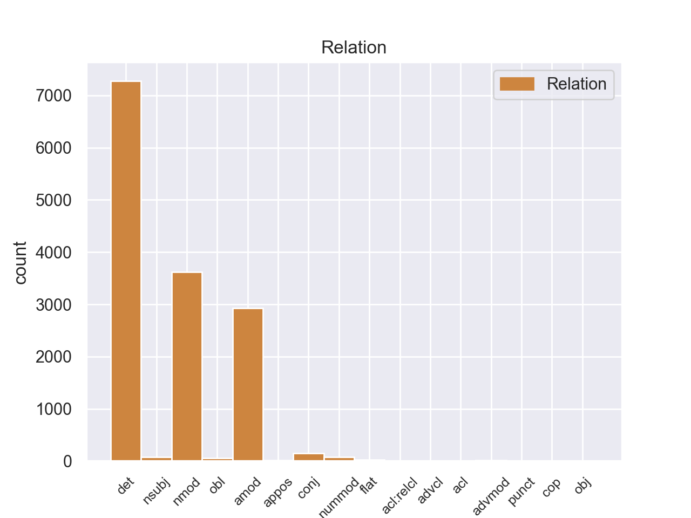
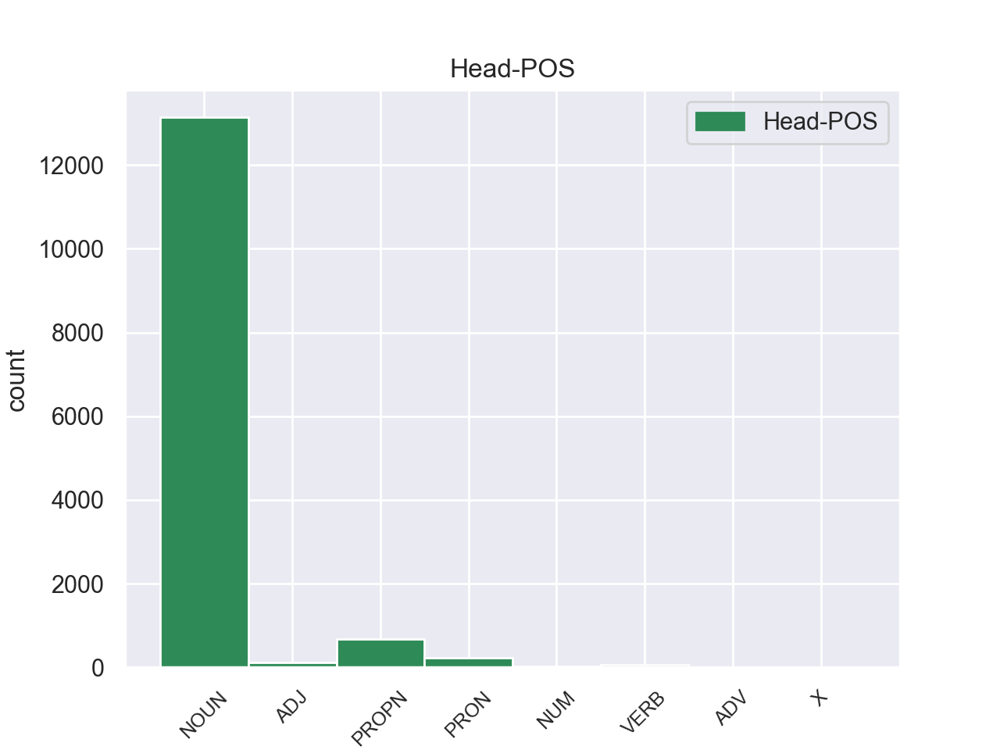
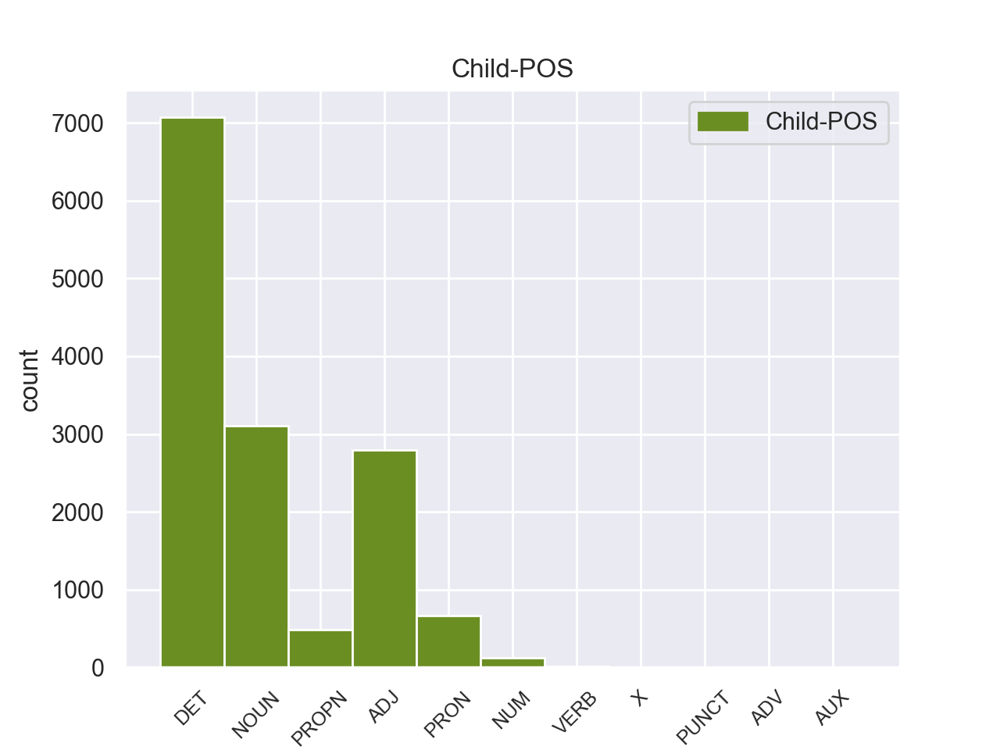

Distribution of features within this leaf



Agreement Rules sorted by frequency.
- When the dependent token is the determiner(det) of the head token, and the head token is NOUN and the dependent token is DET.
1 Αυτό _ _ _ _ 0 _ _ _
2 μπορεί _ _ _ _ 0 _ _ _
3 να _ _ _ _ 0 _ _ _
4 μην _ _ _ _ 0 _ _ _
5 οδηγήσει _ _ _ _ 0 _ _ _
6 σ _ _ _ _ 0 _ _ _
7 τη _ _ _ _ 0 _ _ _
8 λήξη _ _ _ _ 0 _ _ _
9 του _ _ _ _ 0 _ _ _
10 εν _ _ _ _ 0 _ _ _
11 λόγω _ _ _ _ 0 _ _ _
12 ζητήματος _ _ _ _ 0 _ _ _
13 αλλά _ _ _ _ 0 _ _ _
14 , _ _ _ _ 0 _ _ _
15 σ _ _ _ _ 0 _ _ _
16 τη _ _ _ _ 0 _ _ _
17 μορφή _ _ _ _ 0 _ _ _
18 υπό _ _ _ _ 0 _ _ _
19 την _ _ _ _ 0 _ _ _
20 οποία _ _ _ _ 0 _ _ _
21 την _ _ _ _ 0 _ _ _
22 λάβαμε _ _ _ _ 0 _ _ _
23 , _ _ _ _ 0 _ _ _
24 αυτή _ _ _ _ 0 _ _ _
25 η _ _ _ _ 0 _ _ _
26 αίτηση _ _ _ _ 0 _ _ _
27 άρσης _ _ _ _ 0 _ _ _
28 της _ _ _ _ 0 _ _ _
29 ασυλίας _ _ _ _ 0 _ _ _
30 ήταν _ _ _ _ 0 _ _ _
31 , _ _ _ _ 0 _ _ _
32 κατά _ _ _ _ 0 _ _ _
33 την _ _ _ _ 0 _ _ _
34 άποψη _ _ _ _ 0 _ _ _
35 της _ _ _ _ 0 _ _ _
36 Επιτροπής _ _ _ _ 0 _ _ _
37 Νομικών _ _ _ _ 0 _ _ _
38 Θεμάτων _ _ _ _ 0 _ _ _
39 , _ _ _ _ 0 _ _ _
40 απαράδεκτη _ _ _ _ 0 _ _ _
41 , _ _ _ _ 0 _ _ _
42 άποψη _ _ _ _ 0 _ _ _
43 την _ _ _ _ 0 _ _ _
44 οποία _ _ _ _ 0 _ _ _
45 συνιστώ _ _ _ _ 0 _ _ _
46 σ _ _ _ _ 0 _ _ _
47 το ο DET _ Case=Acc|Gender=Neut|Number=Sing 48 det _ _
48 Σώμα σώμα NOUN _ Case=Acc|Gender=Neut|Number=Sing 0 _ _ _
49 να _ _ _ _ 0 _ _ _
50 υιοθετήσει _ _ _ _ 0 _ _ _
51 . _ _ _ _ 0 _ _ _
1 Αυτό _ _ _ _ 0 _ _ _
2 μπορεί _ _ _ _ 0 _ _ _
3 να _ _ _ _ 0 _ _ _
4 μην _ _ _ _ 0 _ _ _
5 οδηγήσει _ _ _ _ 0 _ _ _
6 σ _ _ _ _ 0 _ _ _
7 τη _ _ _ _ 0 _ _ _
8 λήξη _ _ _ _ 0 _ _ _
9 του _ _ _ _ 0 _ _ _
10 εν _ _ _ _ 0 _ _ _
11 λόγω _ _ _ _ 0 _ _ _
12 ζητήματος _ _ _ _ 0 _ _ _
13 αλλά _ _ _ _ 0 _ _ _
14 , _ _ _ _ 0 _ _ _
15 σ _ _ _ _ 0 _ _ _
16 τη _ _ _ _ 0 _ _ _
17 μορφή _ _ _ _ 0 _ _ _
18 υπό _ _ _ _ 0 _ _ _
19 την _ _ _ _ 0 _ _ _
20 οποία _ _ _ _ 0 _ _ _
21 την _ _ _ _ 0 _ _ _
22 λάβαμε _ _ _ _ 0 _ _ _
23 , _ _ _ _ 0 _ _ _
24 αυτή _ _ _ _ 0 _ _ _
25 η _ _ _ _ 0 _ _ _
26 αίτηση _ _ _ _ 0 _ _ _
27 άρσης _ _ _ _ 0 _ _ _
28 της _ _ _ _ 0 _ _ _
29 ασυλίας _ _ _ _ 0 _ _ _
30 ήταν _ _ _ _ 0 _ _ _
31 , _ _ _ _ 0 _ _ _
32 κατά _ _ _ _ 0 _ _ _
33 την _ _ _ _ 0 _ _ _
34 άποψη _ _ _ _ 0 _ _ _
35 της _ _ _ _ 0 _ _ _
36 Επιτροπής _ _ _ _ 0 _ _ _
37 Νομικών νομικός ADJ _ Case=Gen|Gender=Fem|Number=Sing 38 amod _ _
38 Θεμάτων θεμάτός NOUN _ Case=Gen|Gender=Fem|Number=Sing 0 _ _ _
39 , _ _ _ _ 0 _ _ _
40 απαράδεκτη _ _ _ _ 0 _ _ _
41 , _ _ _ _ 0 _ _ _
42 άποψη _ _ _ _ 0 _ _ _
43 την _ _ _ _ 0 _ _ _
44 οποία _ _ _ _ 0 _ _ _
45 συνιστώ _ _ _ _ 0 _ _ _
46 σ _ _ _ _ 0 _ _ _
47 το _ _ _ _ 0 _ _ _
48 Σώμα _ _ _ _ 0 _ _ _
49 να _ _ _ _ 0 _ _ _
50 υιοθετήσει _ _ _ _ 0 _ _ _
51 . _ _ _ _ 0 _ _ _
1 Αυτό _ _ _ _ 0 _ _ _
2 μπορεί _ _ _ _ 0 _ _ _
3 να _ _ _ _ 0 _ _ _
4 μην _ _ _ _ 0 _ _ _
5 οδηγήσει _ _ _ _ 0 _ _ _
6 σ _ _ _ _ 0 _ _ _
7 τη _ _ _ _ 0 _ _ _
8 λήξη _ _ _ _ 0 _ _ _
9 του _ _ _ _ 0 _ _ _
10 εν _ _ _ _ 0 _ _ _
11 λόγω _ _ _ _ 0 _ _ _
12 ζητήματος _ _ _ _ 0 _ _ _
13 αλλά _ _ _ _ 0 _ _ _
14 , _ _ _ _ 0 _ _ _
15 σ _ _ _ _ 0 _ _ _
16 τη _ _ _ _ 0 _ _ _
17 μορφή _ _ _ _ 0 _ _ _
18 υπό _ _ _ _ 0 _ _ _
19 την _ _ _ _ 0 _ _ _
20 οποία _ _ _ _ 0 _ _ _
21 την _ _ _ _ 0 _ _ _
22 λάβαμε _ _ _ _ 0 _ _ _
23 , _ _ _ _ 0 _ _ _
24 αυτή _ _ _ _ 0 _ _ _
25 η _ _ _ _ 0 _ _ _
26 αίτηση _ _ _ _ 0 _ _ _
27 άρσης _ _ _ _ 0 _ _ _
28 της _ _ _ _ 0 _ _ _
29 ασυλίας _ _ _ _ 0 _ _ _
30 ήταν _ _ _ _ 0 _ _ _
31 , _ _ _ _ 0 _ _ _
32 κατά _ _ _ _ 0 _ _ _
33 την _ _ _ _ 0 _ _ _
34 άποψη άποψη NOUN _ Case=Acc|Gender=Fem|Number=Sing 0 _ _ _
35 της _ _ _ _ 0 _ _ _
36 Επιτροπής _ _ _ _ 0 _ _ _
37 Νομικών _ _ _ _ 0 _ _ _
38 Θεμάτων θεμάτός NOUN _ Case=Gen|Gender=Fem|Number=Sing 34 nmod _ _
39 , _ _ _ _ 0 _ _ _
40 απαράδεκτη _ _ _ _ 0 _ _ _
41 , _ _ _ _ 0 _ _ _
42 άποψη _ _ _ _ 0 _ _ _
43 την _ _ _ _ 0 _ _ _
44 οποία _ _ _ _ 0 _ _ _
45 συνιστώ _ _ _ _ 0 _ _ _
46 σ _ _ _ _ 0 _ _ _
47 το _ _ _ _ 0 _ _ _
48 Σώμα _ _ _ _ 0 _ _ _
49 να _ _ _ _ 0 _ _ _
50 υιοθετήσει _ _ _ _ 0 _ _ _
51 . _ _ _ _ 0 _ _ _
1 Ο _ _ _ _ 0 _ _ _
2 Εισαγγελέας _ _ _ _ 0 _ _ _
3 σ _ _ _ _ 0 _ _ _
4 τη ο DET _ Case=Acc|Definite=Def|Gender=Fem|Number=Sing|PronType=Art 5 det _ _
5 Γαλλία Γαλλία PROPN _ Case=Acc|Gender=Fem|Number=Sing 0 _ _ _
6 έχει _ _ _ _ 0 _ _ _
7 το _ _ _ _ 0 _ _ _
8 δικαίωμα _ _ _ _ 0 _ _ _
9 να _ _ _ _ 0 _ _ _
10 εκπληρώνει _ _ _ _ 0 _ _ _
11 τα _ _ _ _ 0 _ _ _
12 καθήκοντά _ _ _ _ 0 _ _ _
13 του _ _ _ _ 0 _ _ _
14 βάσει _ _ _ _ 0 _ _ _
15 του _ _ _ _ 0 _ _ _
16 νόμου _ _ _ _ 0 _ _ _
17 και _ _ _ _ 0 _ _ _
18 το _ _ _ _ 0 _ _ _
19 Σώμα _ _ _ _ 0 _ _ _
20 δεν _ _ _ _ 0 _ _ _
21 λαμβάνει _ _ _ _ 0 _ _ _
22 θέση _ _ _ _ 0 _ _ _
23 σχετικά _ _ _ _ 0 _ _ _
24 με _ _ _ _ 0 _ _ _
25 αυτό _ _ _ _ 0 _ _ _
26 . _ _ _ _ 0 _ _ _
1 Ο _ _ _ _ 0 _ _ _
2 Εισαγγελέας _ _ _ _ 0 _ _ _
3 σ _ _ _ _ 0 _ _ _
4 τη _ _ _ _ 0 _ _ _
5 Γαλλία Γαλλία PROPN _ Case=Acc|Gender=Fem|Number=Sing 8 nmod _ _
6 έχει _ _ _ _ 0 _ _ _
7 το _ _ _ _ 0 _ _ _
8 δικαίωμα δικαίωμα NOUN _ Case=Acc|Gender=Fem|Number=Sing 0 _ _ _
9 να _ _ _ _ 0 _ _ _
10 εκπληρώνει _ _ _ _ 0 _ _ _
11 τα _ _ _ _ 0 _ _ _
12 καθήκοντά _ _ _ _ 0 _ _ _
13 του _ _ _ _ 0 _ _ _
14 βάσει _ _ _ _ 0 _ _ _
15 του _ _ _ _ 0 _ _ _
16 νόμου _ _ _ _ 0 _ _ _
17 και _ _ _ _ 0 _ _ _
18 το _ _ _ _ 0 _ _ _
19 Σώμα _ _ _ _ 0 _ _ _
20 δεν _ _ _ _ 0 _ _ _
21 λαμβάνει _ _ _ _ 0 _ _ _
22 θέση _ _ _ _ 0 _ _ _
23 σχετικά _ _ _ _ 0 _ _ _
24 με _ _ _ _ 0 _ _ _
25 αυτό _ _ _ _ 0 _ _ _
26 . _ _ _ _ 0 _ _ _
1 Σ _ _ _ _ 0 _ _ _
2 την _ _ _ _ 0 _ _ _
3 παρούσα _ _ _ _ 0 _ _ _
4 μορφή μορφή NOUN _ Case=Acc|Gender=Fem|Number=Sing 0 _ _ _
5 της ο PRON _ Case=Gen|Definite=Def|Gender=Fem|Number=Sing|PronType=Art 4 nmod _ _
6 , _ _ _ _ 0 _ _ _
7 η _ _ _ _ 0 _ _ _
8 αίτηση _ _ _ _ 0 _ _ _
9 άρσης _ _ _ _ 0 _ _ _
10 της _ _ _ _ 0 _ _ _
11 ασυλίας _ _ _ _ 0 _ _ _
12 παρουσιάζεται _ _ _ _ 0 _ _ _
13 απαράδεκτα _ _ _ _ 0 _ _ _
14 ασαφής _ _ _ _ 0 _ _ _
15 . _ _ _ _ 0 _ _ _
1 Ευελπιστώ _ _ _ _ 0 _ _ _
2 ότι _ _ _ _ 0 _ _ _
3 η _ _ _ _ 0 _ _ _
4 απόφαση απόφαση NOUN _ Case=Acc|Gender=Fem|Number=Sing 0 _ _ _
5 αυτή αυτή PRON _ Case=Nom|Gender=Fem|Number=Sing|Person=3|PronType=Dem 4 det _ _
6 , _ _ _ _ 0 _ _ _
7 συμπεριλαμβανομένης _ _ _ _ 0 _ _ _
8 και _ _ _ _ 0 _ _ _
9 της _ _ _ _ 0 _ _ _
10 αιτιολογικής _ _ _ _ 0 _ _ _
11 έκθεσης _ _ _ _ 0 _ _ _
12 που _ _ _ _ 0 _ _ _
13 την _ _ _ _ 0 _ _ _
14 συνοδεύει _ _ _ _ 0 _ _ _
15 , _ _ _ _ 0 _ _ _
16 θα _ _ _ _ 0 _ _ _
17 διαβιβαστεί _ _ _ _ 0 _ _ _
18 σ _ _ _ _ 0 _ _ _
19 τις _ _ _ _ 0 _ _ _
20 γαλλικές _ _ _ _ 0 _ _ _
21 αρχές _ _ _ _ 0 _ _ _
22 , _ _ _ _ 0 _ _ _
23 εφόσον _ _ _ _ 0 _ _ _
24 υπερψηφιστεί _ _ _ _ 0 _ _ _
25 από _ _ _ _ 0 _ _ _
26 το _ _ _ _ 0 _ _ _
27 Κοινοβούλιο _ _ _ _ 0 _ _ _
28 . _ _ _ _ 0 _ _ _
1 Θα _ _ _ _ 0 _ _ _
2 ήθελα _ _ _ _ 0 _ _ _
3 να _ _ _ _ 0 _ _ _
4 επιστήσω _ _ _ _ 0 _ _ _
5 την _ _ _ _ 0 _ _ _
6 προσοχή _ _ _ _ 0 _ _ _
7 όλων _ _ _ _ 0 _ _ _
8 των _ _ _ _ 0 _ _ _
9 συναδέλφων _ _ _ _ 0 _ _ _
10 σ _ _ _ _ 0 _ _ _
11 το _ _ _ _ 0 _ _ _
12 γεγονός _ _ _ _ 0 _ _ _
13 ότι _ _ _ _ 0 _ _ _
14 , _ _ _ _ 0 _ _ _
15 εάν _ _ _ _ 0 _ _ _
16 υπάρχουν _ _ _ _ 0 _ _ _
17 κάποιες _ _ _ _ 0 _ _ _
18 ελευθερίες _ _ _ _ 0 _ _ _
19 οι οι DET _ Case=Nom|Definite=Def|Gender=Fem|Number=Plur|PronType=Art 20 det _ _
20 οποίες οποίες PRON _ Case=Nom|Gender=Fem|Number=Plur|Person=3|PronType=Rel 0 _ _ _
21 είναι _ _ _ _ 0 _ _ _
22 ζωτικής _ _ _ _ 0 _ _ _
23 σημασίας _ _ _ _ 0 _ _ _
24 για _ _ _ _ 0 _ _ _
25 την _ _ _ _ 0 _ _ _
26 άσκηση _ _ _ _ 0 _ _ _
27 του _ _ _ _ 0 _ _ _
28 λειτουργήματος _ _ _ _ 0 _ _ _
29 της _ _ _ _ 0 _ _ _
30 δημόσιας _ _ _ _ 0 _ _ _
31 εκπροσώπησης _ _ _ _ 0 _ _ _
32 , _ _ _ _ 0 _ _ _
33 ιδίως _ _ _ _ 0 _ _ _
34 για _ _ _ _ 0 _ _ _
35 ένα _ _ _ _ 0 _ _ _
36 Κοινοβούλιο _ _ _ _ 0 _ _ _
37 σαν _ _ _ _ 0 _ _ _
38 το _ _ _ _ 0 _ _ _
39 δικό _ _ _ _ 0 _ _ _
40 μας _ _ _ _ 0 _ _ _
41 , _ _ _ _ 0 _ _ _
42 η _ _ _ _ 0 _ _ _
43 ελευθερία _ _ _ _ 0 _ _ _
44 της _ _ _ _ 0 _ _ _
45 επικοινωνίας _ _ _ _ 0 _ _ _
46 με _ _ _ _ 0 _ _ _
47 άλλους _ _ _ _ 0 _ _ _
48 πολίτες _ _ _ _ 0 _ _ _
49 και _ _ _ _ 0 _ _ _
50 με _ _ _ _ 0 _ _ _
51 τους _ _ _ _ 0 _ _ _
52 πολίτες _ _ _ _ 0 _ _ _
53 τρίτων _ _ _ _ 0 _ _ _
54 χωρών _ _ _ _ 0 _ _ _
55 , _ _ _ _ 0 _ _ _
56 καθώς _ _ _ _ 0 _ _ _
57 και _ _ _ _ 0 _ _ _
58 η _ _ _ _ 0 _ _ _
59 ελευθερία _ _ _ _ 0 _ _ _
60 μετακίνησης _ _ _ _ 0 _ _ _
61 , _ _ _ _ 0 _ _ _
62 είναι _ _ _ _ 0 _ _ _
63 κρίσιμες _ _ _ _ 0 _ _ _
64 για _ _ _ _ 0 _ _ _
65 τη _ _ _ _ 0 _ _ _
66 διεκπεραίωση _ _ _ _ 0 _ _ _
67 του _ _ _ _ 0 _ _ _
68 έργου _ _ _ _ 0 _ _ _
69 μας _ _ _ _ 0 _ _ _
70 . _ _ _ _ 0 _ _ _
1 Υπάρχει _ _ _ _ 0 _ _ _
2 μια _ _ _ _ 0 _ _ _
3 κατηγορία κατηγορία NOUN _ Case=Nom|Gender=Fem|Number=Sing 0 _ _ _
4 εναντίον _ _ _ _ 0 _ _ _
5 του _ _ _ _ 0 _ _ _
6 κ. _ _ _ _ 0 _ _ _
7 Pasqua _ _ _ _ 0 _ _ _
8 , _ _ _ _ 0 _ _ _
9 αλλά _ _ _ _ 0 _ _ _
10 όχι _ _ _ _ 0 _ _ _
11 εναντίον _ _ _ _ 0 _ _ _
12 του _ _ _ _ 0 _ _ _
13 κ. _ _ _ _ 0 _ _ _
14 Marchiani _ _ _ _ 0 _ _ _
15 , _ _ _ _ 0 _ _ _
16 για _ _ _ _ 0 _ _ _
17 παράνομη _ _ _ _ 0 _ _ _
18 χρηματοδότηση _ _ _ _ 0 _ _ _
19 προεκλογικής _ _ _ _ 0 _ _ _
20 εκστρατείας _ _ _ _ 0 _ _ _
21 μέσω _ _ _ _ 0 _ _ _
22 αποδοχής _ _ _ _ 0 _ _ _
23 δωρεών _ _ _ _ 0 _ _ _
24 και _ _ _ _ 0 _ _ _
25 χρηματοδότησης _ _ _ _ 0 _ _ _
26 της _ _ _ _ 0 _ _ _
27 εκστρατείας _ _ _ _ 0 _ _ _
28 για _ _ _ _ 0 _ _ _
29 τις _ _ _ _ 0 _ _ _
30 ευρωπαϊκές _ _ _ _ 0 _ _ _
31 εκλογές _ _ _ _ 0 _ _ _
32 , _ _ _ _ 0 _ _ _
33 κατά _ _ _ _ 0 _ _ _
34 παράβαση παράβαση NOUN _ Case=Acc|Gender=Fem|Number=Sing 3 conj _ _
35 των _ _ _ _ 0 _ _ _
36 διατάξεων _ _ _ _ 0 _ _ _
37 του _ _ _ _ 0 _ _ _
38 άρθρου _ _ _ _ 0 _ _ _
39 L _ _ _ _ 0 _ _ _
40 52.8 _ _ _ _ 0 _ _ _
41 του _ _ _ _ 0 _ _ _
42 Εκλογικού _ _ _ _ 0 _ _ _
43 Κώδικα _ _ _ _ 0 _ _ _
44 . _ _ _ _ 0 _ _ _
1 Θα _ _ _ _ 0 _ _ _
2 ήθελα _ _ _ _ 0 _ _ _
3 να _ _ _ _ 0 _ _ _
4 επιστήσω _ _ _ _ 0 _ _ _
5 την _ _ _ _ 0 _ _ _
6 προσοχή _ _ _ _ 0 _ _ _
7 όλων _ _ _ _ 0 _ _ _
8 των _ _ _ _ 0 _ _ _
9 συναδέλφων _ _ _ _ 0 _ _ _
10 σ _ _ _ _ 0 _ _ _
11 το _ _ _ _ 0 _ _ _
12 γεγονός _ _ _ _ 0 _ _ _
13 ότι _ _ _ _ 0 _ _ _
14 , _ _ _ _ 0 _ _ _
15 εάν _ _ _ _ 0 _ _ _
16 υπάρχουν _ _ _ _ 0 _ _ _
17 κάποιες _ _ _ _ 0 _ _ _
18 ελευθερίες _ _ _ _ 0 _ _ _
19 οι _ _ _ _ 0 _ _ _
20 οποίες _ _ _ _ 0 _ _ _
21 είναι _ _ _ _ 0 _ _ _
22 ζωτικής _ _ _ _ 0 _ _ _
23 σημασίας _ _ _ _ 0 _ _ _
24 για _ _ _ _ 0 _ _ _
25 την _ _ _ _ 0 _ _ _
26 άσκηση _ _ _ _ 0 _ _ _
27 του _ _ _ _ 0 _ _ _
28 λειτουργήματος _ _ _ _ 0 _ _ _
29 της _ _ _ _ 0 _ _ _
30 δημόσιας _ _ _ _ 0 _ _ _
31 εκπροσώπησης _ _ _ _ 0 _ _ _
32 , _ _ _ _ 0 _ _ _
33 ιδίως _ _ _ _ 0 _ _ _
34 για _ _ _ _ 0 _ _ _
35 ένα _ _ _ _ 0 _ _ _
36 Κοινοβούλιο _ _ _ _ 0 _ _ _
37 σαν _ _ _ _ 0 _ _ _
38 το _ _ _ _ 0 _ _ _
39 δικό _ _ _ _ 0 _ _ _
40 μας _ _ _ _ 0 _ _ _
41 , _ _ _ _ 0 _ _ _
42 η _ _ _ _ 0 _ _ _
43 ελευθερία _ _ _ _ 0 _ _ _
44 της _ _ _ _ 0 _ _ _
45 επικοινωνίας _ _ _ _ 0 _ _ _
46 με _ _ _ _ 0 _ _ _
47 άλλους _ _ _ _ 0 _ _ _
48 πολίτες πολίτες NOUN _ Case=Acc|Gender=Masc|Number=Plur 0 _ _ _
49 και _ _ _ _ 0 _ _ _
50 με _ _ _ _ 0 _ _ _
51 τους _ _ _ _ 0 _ _ _
52 πολίτες πολίτες NOUN _ Case=Acc|Gender=Masc|Number=Plur 48 amod _ _
53 τρίτων _ _ _ _ 0 _ _ _
54 χωρών _ _ _ _ 0 _ _ _
55 , _ _ _ _ 0 _ _ _
56 καθώς _ _ _ _ 0 _ _ _
57 και _ _ _ _ 0 _ _ _
58 η _ _ _ _ 0 _ _ _
59 ελευθερία _ _ _ _ 0 _ _ _
60 μετακίνησης _ _ _ _ 0 _ _ _
61 , _ _ _ _ 0 _ _ _
62 είναι _ _ _ _ 0 _ _ _
63 κρίσιμες _ _ _ _ 0 _ _ _
64 για _ _ _ _ 0 _ _ _
65 τη _ _ _ _ 0 _ _ _
66 διεκπεραίωση _ _ _ _ 0 _ _ _
67 του _ _ _ _ 0 _ _ _
68 έργου _ _ _ _ 0 _ _ _
69 μας _ _ _ _ 0 _ _ _
70 . _ _ _ _ 0 _ _ _
1 Είναι _ _ _ _ 0 _ _ _
2 σημαντικό _ _ _ _ 0 _ _ _
3 να _ _ _ _ 0 _ _ _
4 υπογραμμίσω _ _ _ _ 0 _ _ _
5 το _ _ _ _ 0 _ _ _
6 γεγονός _ _ _ _ 0 _ _ _
7 ότι _ _ _ _ 0 _ _ _
8 και _ _ _ _ 0 _ _ _
9 οι _ _ _ _ 0 _ _ _
10 δύο δύο NUM _ Case=Nom|Gender=Masc|Number=Plur 11 nummod _ _
11 βουλευτές βουλευτές NOUN _ Case=Nom|Gender=Masc|Number=Plur 0 _ _ _
12 διατρανώνουν _ _ _ _ 0 _ _ _
13 σθεναρά _ _ _ _ 0 _ _ _
14 την _ _ _ _ 0 _ _ _
15 αθωότητά _ _ _ _ 0 _ _ _
16 τους _ _ _ _ 0 _ _ _
17 και _ _ _ _ 0 _ _ _
18 καταγγέλλουν _ _ _ _ 0 _ _ _
19 αυτό _ _ _ _ 0 _ _ _
20 που _ _ _ _ 0 _ _ _
21 οι _ _ _ _ 0 _ _ _
22 ίδιοι _ _ _ _ 0 _ _ _
23 θεωρούν _ _ _ _ 0 _ _ _
24 καταχρήσεις _ _ _ _ 0 _ _ _
25 σ _ _ _ _ 0 _ _ _
26 τη _ _ _ _ 0 _ _ _
27 διαδικασία _ _ _ _ 0 _ _ _
28 δίωξης _ _ _ _ 0 _ _ _
29 . _ _ _ _ 0 _ _ _
1 Το _ _ _ _ 0 _ _ _
2 όνειρο _ _ _ _ 0 _ _ _
3 της _ _ _ _ 0 _ _ _
4 ένωσης _ _ _ _ 0 _ _ _
5 του _ _ _ _ 0 _ _ _
6 νησιού _ _ _ _ 0 _ _ _
7 με _ _ _ _ 0 _ _ _
8 την _ _ _ _ 0 _ _ _
9 μητέρα μητέρα ADJ _ Case=Acc|Gender=Fem|Number=Sing 10 amod _ _
10 Ελλάδα ελλάδα PROPN _ Case=Acc|Gender=Fem|Number=Sing 0 _ _ _
11 φαινόταν _ _ _ _ 0 _ _ _
12 να _ _ _ _ 0 _ _ _
13 απομακρύνεται _ _ _ _ 0 _ _ _
14 . _ _ _ _ 0 _ _ _
1 Τους _ _ _ _ 0 _ _ _
2 έγραφε _ _ _ _ 0 _ _ _
3 ότι _ _ _ _ 0 _ _ _
4 οι _ _ _ _ 0 _ _ _
5 επαναστάτες _ _ _ _ 0 _ _ _
6 θα _ _ _ _ 0 _ _ _
7 κρατούσαν _ _ _ _ 0 _ _ _
8 τις _ _ _ _ 0 _ _ _
9 θέσεις _ _ _ _ 0 _ _ _
10 τους _ _ _ _ 0 _ _ _
11 μέχρι _ _ _ _ 0 _ _ _
12 να _ _ _ _ 0 _ _ _
13 σκοτωθεί _ _ _ _ 0 _ _ _
14 κι _ _ _ _ 0 _ _ _
15 ο ο DET _ Case=Nom|Definite=Def|Gender=Masc|Number=Sing|PronType=Art 16 det _ _
16 τελευταίος τελευταίος ADJ _ Case=Nom|Gender=Masc|Number=Sing 0 _ _ _
17 από _ _ _ _ 0 _ _ _
18 τις _ _ _ _ 0 _ _ _
19 οβίδες _ _ _ _ 0 _ _ _
20 των _ _ _ _ 0 _ _ _
21 ευρωπαϊκών _ _ _ _ 0 _ _ _
22 πολεμικών _ _ _ _ 0 _ _ _
23 προκειμένου _ _ _ _ 0 _ _ _
24 να _ _ _ _ 0 _ _ _
25 μην _ _ _ _ 0 _ _ _
26 αφήσουν _ _ _ _ 0 _ _ _
27 τους _ _ _ _ 0 _ _ _
28 Τούρκους _ _ _ _ 0 _ _ _
29 να _ _ _ _ 0 _ _ _
30 πάρουν _ _ _ _ 0 _ _ _
31 το _ _ _ _ 0 _ _ _
32 Ακρωτήρι _ _ _ _ 0 _ _ _
33 . _ _ _ _ 0 _ _ _
1 Σ _ _ _ _ 0 _ _ _
2 το _ _ _ _ 0 _ _ _
3 δεύτερο _ _ _ _ 0 _ _ _
4 , _ _ _ _ 0 _ _ _
5 οι _ _ _ _ 0 _ _ _
6 Ρώσοι _ _ _ _ 0 _ _ _
7 προσπάθησαν _ _ _ _ 0 _ _ _
8 να _ _ _ _ 0 _ _ _
9 ισοφαρίσουν _ _ _ _ 0 _ _ _
10 , _ _ _ _ 0 _ _ _
11 αλλά _ _ _ _ 0 _ _ _
12 ένα _ _ _ _ 0 _ _ _
13 λεπτό _ _ _ _ 0 _ _ _
14 πριν _ _ _ _ 0 _ _ _
15 τη _ _ _ _ 0 _ _ _
16 λήξη _ _ _ _ 0 _ _ _
17 ο _ _ _ _ 0 _ _ _
18 Ολιβέιρα _ _ _ _ 0 _ _ _
19 σκόραρε _ _ _ _ 0 _ _ _
20 το _ _ _ _ 0 _ _ _
21 δεύτερο δεύτερος NUM _ Case=Acc|Gender=Neut|Number=Sing 22 amod _ _
22 γκολ γκολ NOUN _ Case=Acc|Gender=Neut|Number=Sing 0 _ _ _
23 των _ _ _ _ 0 _ _ _
24 Πορτογάλων _ _ _ _ 0 _ _ _
25 . _ _ _ _ 0 _ _ _
1 Θα _ _ _ _ 0 _ _ _
2 ήθελα _ _ _ _ 0 _ _ _
3 να _ _ _ _ 0 _ _ _
4 επιστήσω _ _ _ _ 0 _ _ _
5 την _ _ _ _ 0 _ _ _
6 προσοχή _ _ _ _ 0 _ _ _
7 όλων _ _ _ _ 0 _ _ _
8 των _ _ _ _ 0 _ _ _
9 συναδέλφων _ _ _ _ 0 _ _ _
10 σ _ _ _ _ 0 _ _ _
11 το _ _ _ _ 0 _ _ _
12 γεγονός _ _ _ _ 0 _ _ _
13 ότι _ _ _ _ 0 _ _ _
14 , _ _ _ _ 0 _ _ _
15 εάν _ _ _ _ 0 _ _ _
16 υπάρχουν _ _ _ _ 0 _ _ _
17 κάποιες _ _ _ _ 0 _ _ _
18 ελευθερίες _ _ _ _ 0 _ _ _
19 οι _ _ _ _ 0 _ _ _
20 οποίες _ _ _ _ 0 _ _ _
21 είναι _ _ _ _ 0 _ _ _
22 ζωτικής _ _ _ _ 0 _ _ _
23 σημασίας _ _ _ _ 0 _ _ _
24 για _ _ _ _ 0 _ _ _
25 την _ _ _ _ 0 _ _ _
26 άσκηση _ _ _ _ 0 _ _ _
27 του _ _ _ _ 0 _ _ _
28 λειτουργήματος _ _ _ _ 0 _ _ _
29 της _ _ _ _ 0 _ _ _
30 δημόσιας _ _ _ _ 0 _ _ _
31 εκπροσώπησης _ _ _ _ 0 _ _ _
32 , _ _ _ _ 0 _ _ _
33 ιδίως _ _ _ _ 0 _ _ _
34 για _ _ _ _ 0 _ _ _
35 ένα _ _ _ _ 0 _ _ _
36 Κοινοβούλιο _ _ _ _ 0 _ _ _
37 σαν _ _ _ _ 0 _ _ _
38 το _ _ _ _ 0 _ _ _
39 δικό _ _ _ _ 0 _ _ _
40 μας _ _ _ _ 0 _ _ _
41 , _ _ _ _ 0 _ _ _
42 η _ _ _ _ 0 _ _ _
43 ελευθερία _ _ _ _ 0 _ _ _
44 της _ _ _ _ 0 _ _ _
45 επικοινωνίας _ _ _ _ 0 _ _ _
46 με _ _ _ _ 0 _ _ _
47 άλλους _ _ _ _ 0 _ _ _
48 πολίτες _ _ _ _ 0 _ _ _
49 και _ _ _ _ 0 _ _ _
50 με _ _ _ _ 0 _ _ _
51 τους _ _ _ _ 0 _ _ _
52 πολίτες _ _ _ _ 0 _ _ _
53 τρίτων _ _ _ _ 0 _ _ _
54 χωρών _ _ _ _ 0 _ _ _
55 , _ _ _ _ 0 _ _ _
56 καθώς _ _ _ _ 0 _ _ _
57 και _ _ _ _ 0 _ _ _
58 η _ _ _ _ 0 _ _ _
59 ελευθερία _ _ _ _ 0 _ _ _
60 μετακίνησης _ _ _ _ 0 _ _ _
61 , _ _ _ _ 0 _ _ _
62 είναι _ _ _ _ 0 _ _ _
63 κρίσιμες κρίσιμες VERB _ Case=Nom|Gender=Fem|Number=Plur 0 _ _ _
64 για _ _ _ _ 0 _ _ _
65 τη _ _ _ _ 0 _ _ _
66 διεκπεραίωση διεκπεραίωση NOUN _ Case=Acc|Gender=Fem|Number=Sing 63 obl _ _
67 του _ _ _ _ 0 _ _ _
68 έργου _ _ _ _ 0 _ _ _
69 μας _ _ _ _ 0 _ _ _
70 . _ _ _ _ 0 _ _ _
1 Παράλληλα _ _ _ _ 0 _ _ _
2 , _ _ _ _ 0 _ _ _
3 η _ _ _ _ 0 _ _ _
4 Άρσεναλ _ _ _ _ 0 _ _ _
5 νίκησε _ _ _ _ 0 _ _ _
6 την _ _ _ _ 0 _ _ _
7 Μίλαν _ _ _ _ 0 _ _ _
8 με _ _ _ _ 0 _ _ _
9 σκορ _ _ _ _ 0 _ _ _
10 3:0 _ _ _ _ 0 _ _ _
11 , _ _ _ _ 0 _ _ _
12 αλλά _ _ _ _ 0 _ _ _
13 προκρίθηκε _ _ _ _ 0 _ _ _
14 η ο DET _ Case=Nom|Definite=Def|Gender=Fem|Number=Sing|PronType=Art 15 det _ _
15 δεύτερη δεύτερη NUM _ Case=Acc|Gender=Fem|Number=Sing 0 _ _ _
16 . _ _ _ _ 0 _ _ _
1 Η _ _ _ _ 0 _ _ _
2 Μπενφίκα Μπενφίκα NOUN _ Case=Nom|Gender=Fem|Number=Sing 5 nsubj _ _
3 ήταν _ _ _ _ 0 _ _ _
4 πιο _ _ _ _ 0 _ _ _
5 επιθετική επιθετική ADJ _ Case=Nom|Gender=Fem|Number=Sing 0 _ _ _
6 και _ _ _ _ 0 _ _ _
7 καλύτερη _ _ _ _ 0 _ _ _
8 σ _ _ _ _ 0 _ _ _
9 το _ _ _ _ 0 _ _ _
10 πρώτο _ _ _ _ 0 _ _ _
11 ημίχρονο _ _ _ _ 0 _ _ _
12 , _ _ _ _ 0 _ _ _
13 με _ _ _ _ 0 _ _ _
14 αποτέλεσμα _ _ _ _ 0 _ _ _
15 να _ _ _ _ 0 _ _ _
16 ανοίξει _ _ _ _ 0 _ _ _
17 το _ _ _ _ 0 _ _ _
18 σκορ _ _ _ _ 0 _ _ _
19 σ _ _ _ _ 0 _ _ _
20 το _ _ _ _ 0 _ _ _
21 πρώτο _ _ _ _ 0 _ _ _
22 λεπτό _ _ _ _ 0 _ _ _
23 των _ _ _ _ 0 _ _ _
24 καθυστερήσεων _ _ _ _ 0 _ _ _
25 , _ _ _ _ 0 _ _ _
26 χάρη _ _ _ _ 0 _ _ _
27 σ _ _ _ _ 0 _ _ _
28 τον _ _ _ _ 0 _ _ _
29 Μάξι _ _ _ _ 0 _ _ _
30 Περέιρα _ _ _ _ 0 _ _ _
31 . _ _ _ _ 0 _ _ _
1 Αντιμέτωποι _ _ _ _ 0 _ _ _
2 με _ _ _ _ 0 _ _ _
3 ακραία _ _ _ _ 0 _ _ _
4 καιρικά _ _ _ _ 0 _ _ _
5 φαινόμενα _ _ _ _ 0 _ _ _
6 βρίσκονται _ _ _ _ 0 _ _ _
7 οι _ _ _ _ 0 _ _ _
8 κάτοικοι _ _ _ _ 0 _ _ _
9 των _ _ _ _ 0 _ _ _
10 νοτίων _ _ _ _ 0 _ _ _
11 Πολιτειών πολιτειός NOUN _ Case=Gen|Gender=Fem|Number=Sing 0 _ _ _
12 της _ _ _ _ 0 _ _ _
13 Αμερικής Αμερικής PROPN _ Case=Gen|Gender=Fem|Number=Sing 11 amod _ _
14 . _ _ _ _ 0 _ _ _
1 Επίσης _ _ _ _ 0 _ _ _
2 ο _ _ _ _ 0 _ _ _
3 Βενιαμίν Βενιαμίν NOUN _ Case=Nom|Gender=Masc|Number=Sing 0 _ _ _
4 Νετανιάχου Νετανιάχου PROPN _ Case=Nom|Gender=Masc|Number=Sing 3 flat _ _
5 εξέφρασε _ _ _ _ 0 _ _ _
6 ικανοποίηση _ _ _ _ 0 _ _ _
7 για _ _ _ _ 0 _ _ _
8 την _ _ _ _ 0 _ _ _
9 θέση _ _ _ _ 0 _ _ _
10 του _ _ _ _ 0 _ _ _
11 Αμερικανού _ _ _ _ 0 _ _ _
12 Προέδρου _ _ _ _ 0 _ _ _
13 ότι _ _ _ _ 0 _ _ _
14 « _ _ _ _ 0 _ _ _
15 το _ _ _ _ 0 _ _ _
16 Ισραήλ _ _ _ _ 0 _ _ _
17 θα _ _ _ _ 0 _ _ _
18 πρέπει _ _ _ _ 0 _ _ _
19 να _ _ _ _ 0 _ _ _
20 μπορεί _ _ _ _ 0 _ _ _
21 να _ _ _ _ 0 _ _ _
22 αμυνθεί _ _ _ _ 0 _ _ _
23 ενάντια _ _ _ _ 0 _ _ _
24 σε _ _ _ _ 0 _ _ _
25 οποιαδήποτε _ _ _ _ 0 _ _ _
26 απειλή _ _ _ _ 0 _ _ _
27 » _ _ _ _ 0 _ _ _
28 . _ _ _ _ 0 _ _ _
1 Το _ _ _ _ 0 _ _ _
2 ίδιο ίδιος PRON _ Case=Acc|Gender=Neut|Number=Sing 3 amod _ _
3 βράδυ βράδυ NOUN _ Case=Nom|Gender=Neut|Number=Sing 0 _ _ _
4 του _ _ _ _ 0 _ _ _
5 βομβαρδισμού _ _ _ _ 0 _ _ _
6 , _ _ _ _ 0 _ _ _
7 ο _ _ _ _ 0 _ _ _
8 Βενιζέλος _ _ _ _ 0 _ _ _
9 συνέταξε _ _ _ _ 0 _ _ _
10 διαμαρτυρία _ _ _ _ 0 _ _ _
11 προς _ _ _ _ 0 _ _ _
12 τους _ _ _ _ 0 _ _ _
13 ξένους _ _ _ _ 0 _ _ _
14 ναυάρχους _ _ _ _ 0 _ _ _
15 , _ _ _ _ 0 _ _ _
16 την _ _ _ _ 0 _ _ _
17 οποία _ _ _ _ 0 _ _ _
18 προσυπέγραψαν _ _ _ _ 0 _ _ _
19 όλοι _ _ _ _ 0 _ _ _
20 οι _ _ _ _ 0 _ _ _
21 οπλαρχηγοί _ _ _ _ 0 _ _ _
22 που _ _ _ _ 0 _ _ _
23 βρίσκονταν _ _ _ _ 0 _ _ _
24 σ _ _ _ _ 0 _ _ _
25 το _ _ _ _ 0 _ _ _
26 Ακρωτήρι _ _ _ _ 0 _ _ _
27 . _ _ _ _ 0 _ _ _
1 Πρέπει _ _ _ _ 0 _ _ _
2 να _ _ _ _ 0 _ _ _
3 επισημανθεί _ _ _ _ 0 _ _ _
4 ότι _ _ _ _ 0 _ _ _
5 ο _ _ _ _ 0 _ _ _
6 Εισαγγελέας _ _ _ _ 0 _ _ _
7 Πλημμελειοδικών _ _ _ _ 0 _ _ _
8 υποστήριξε _ _ _ _ 0 _ _ _
9 σθεναρά _ _ _ _ 0 _ _ _
10 την _ _ _ _ 0 _ _ _
11 αίτηση αίτηση NOUN _ Case=Acc|Gender=Fem|Number=Sing 0 _ _ _
12 επιβολής _ _ _ _ 0 _ _ _
13 μέτρων μέτρων ADJ _ Case=Gen|Gender=Fem|Number=Sing 11 nmod _ _
14 δικαστικής _ _ _ _ 0 _ _ _
15 επιτήρησης _ _ _ _ 0 _ _ _
16 που _ _ _ _ 0 _ _ _
17 υπέβαλαν _ _ _ _ 0 _ _ _
18 οι _ _ _ _ 0 _ _ _
19 ανακριτές _ _ _ _ 0 _ _ _
20 , _ _ _ _ 0 _ _ _
21 υπογραμμίζοντας _ _ _ _ 0 _ _ _
22 τη _ _ _ _ 0 _ _ _
23 σοβαρότητα _ _ _ _ 0 _ _ _
24 και _ _ _ _ 0 _ _ _
25 τη _ _ _ _ 0 _ _ _
26 φύση _ _ _ _ 0 _ _ _
27 της _ _ _ _ 0 _ _ _
28 υπόθεσης _ _ _ _ 0 _ _ _
29 και _ _ _ _ 0 _ _ _
30 χαρακτηρίζοντας _ _ _ _ 0 _ _ _
31 μάλιστα _ _ _ _ 0 _ _ _
32 την _ _ _ _ 0 _ _ _
33 αίτηση _ _ _ _ 0 _ _ _
34 αυτή _ _ _ _ 0 _ _ _
35 ως _ _ _ _ 0 _ _ _
36 απαραίτητη _ _ _ _ 0 _ _ _
37 επί _ _ _ _ 0 _ _ _
38 της _ _ _ _ 0 _ _ _
39 αρχής _ _ _ _ 0 _ _ _
40 . _ _ _ _ 0 _ _ _
1 Τα _ _ _ _ 0 _ _ _
2 καταπράσινα _ _ _ _ 0 _ _ _
3 νησάκια _ _ _ _ 0 _ _ _
4 Άγιος _ _ _ _ 0 _ _ _
5 Νικόλαος _ _ _ _ 0 _ _ _
6 και _ _ _ _ 0 _ _ _
7 Μαύρον _ _ _ _ 0 _ _ _
8 Όρος _ _ _ _ 0 _ _ _
9 - _ _ _ _ 0 _ _ _
10 όπου _ _ _ _ 0 _ _ _
11 και _ _ _ _ 0 _ _ _
12 χτίστηκε _ _ _ _ 0 _ _ _
13 το _ _ _ _ 0 _ _ _
14 1884 _ _ _ _ 0 _ _ _
15 φάρος _ _ _ _ 0 _ _ _
16 για _ _ _ _ 0 _ _ _
17 τη _ _ _ _ 0 _ _ _
18 διευκόλυνση _ _ _ _ 0 _ _ _
19 της _ _ _ _ 0 _ _ _
20 ακτοπλοΐας _ _ _ _ 0 _ _ _
21 - _ _ _ _ 0 _ _ _
22 που _ _ _ _ 0 _ _ _
23 περιστοιχίζουν _ _ _ _ 0 _ _ _
24 το _ _ _ _ 0 _ _ _
25 χωριό _ _ _ _ 0 _ _ _
26 είναι _ _ _ _ 0 _ _ _
27 προσβάσιμα προσβάσιμα VERB _ Case=Nom|Gender=Fem|Number=Plur 0 _ _ _
28 με _ _ _ _ 0 _ _ _
29 βάρκα _ _ _ _ 0 _ _ _
30 ενώ _ _ _ _ 0 _ _ _
31 οι _ _ _ _ 0 _ _ _
32 παραλίες παραλίες NOUN _ Case=Nom|Gender=Fem|Number=Plur 27 nsubj _ _
33 που _ _ _ _ 0 _ _ _
34 προσφέρονται _ _ _ _ 0 _ _ _
35 για _ _ _ _ 0 _ _ _
36 κολύμπι _ _ _ _ 0 _ _ _
37 είναι _ _ _ _ 0 _ _ _
38 πολλές _ _ _ _ 0 _ _ _
39 και _ _ _ _ 0 _ _ _
40 πεντακάθαρες _ _ _ _ 0 _ _ _
41 : _ _ _ _ 0 _ _ _
1 Θυμίζουμε _ _ _ _ 0 _ _ _
2 ότι _ _ _ _ 0 _ _ _
3 ο _ _ _ _ 0 _ _ _
4 Βλαντιμίρ Βλαντιμίρ PROPN _ Case=Nom|Gender=Masc|Number=Sing 0 _ _ _
5 Πούτιν Πούτιν PROPN _ Case=Nom|Gender=Masc|Number=Sing 4 flat _ _
6 κέρδισε _ _ _ _ 0 _ _ _
7 τις _ _ _ _ 0 _ _ _
8 προεδρικές _ _ _ _ 0 _ _ _
9 εκλογές _ _ _ _ 0 _ _ _
10 της _ _ _ _ 0 _ _ _
11 Ρωσίας _ _ _ _ 0 _ _ _
12 με _ _ _ _ 0 _ _ _
13 ποσοστό _ _ _ _ 0 _ _ _
14 65.3% _ _ _ _ 0 _ _ _
15 . _ _ _ _ 0 _ _ _
1 Υπάρχει _ _ _ _ 0 _ _ _
2 μια _ _ _ _ 0 _ _ _
3 άλλη άλλος ADJ _ Case=Acc|Gender=Fem|Number=Sing 4 det _ _
4 πλευρά πλευρά NOUN _ Case=Nom|Gender=Fem|Number=Sing 0 _ _ _
5 της _ _ _ _ 0 _ _ _
6 υπόθεσης _ _ _ _ 0 _ _ _
7 , _ _ _ _ 0 _ _ _
8 η _ _ _ _ 0 _ _ _
9 οποία _ _ _ _ 0 _ _ _
10 , _ _ _ _ 0 _ _ _
11 δυστυχώς _ _ _ _ 0 _ _ _
12 , _ _ _ _ 0 _ _ _
13 γεννά _ _ _ _ 0 _ _ _
14 την _ _ _ _ 0 _ _ _
15 υποψία _ _ _ _ 0 _ _ _
16 ότι _ _ _ _ 0 _ _ _
17 η _ _ _ _ 0 _ _ _
18 πρόνοια _ _ _ _ 0 _ _ _
19 σχετικά _ _ _ _ 0 _ _ _
20 με _ _ _ _ 0 _ _ _
21 τις _ _ _ _ 0 _ _ _
22 προϋποθέσεις _ _ _ _ 0 _ _ _
23 ελεύθερης _ _ _ _ 0 _ _ _
24 διεξαγωγής _ _ _ _ 0 _ _ _
25 του _ _ _ _ 0 _ _ _
26 κοινοβουλευτικού _ _ _ _ 0 _ _ _
27 έργου _ _ _ _ 0 _ _ _
28 δεν _ _ _ _ 0 _ _ _
29 απασχόλησε _ _ _ _ 0 _ _ _
30 επαρκώς _ _ _ _ 0 _ _ _
31 την _ _ _ _ 0 _ _ _
32 εισαγγελική _ _ _ _ 0 _ _ _
33 αρχή _ _ _ _ 0 _ _ _
34 : _ _ _ _ 0 _ _ _
1 Τέθηκε _ _ _ _ 0 _ _ _
2 επικεφαλής _ _ _ _ 0 _ _ _
3 επανάστασης _ _ _ _ 0 _ _ _
4 ( _ _ _ _ 0 _ _ _
5 με _ _ _ _ 0 _ _ _
6 το _ _ _ _ 0 _ _ _
7 κίνημα _ _ _ _ 0 _ _ _
8 Εθνικής _ _ _ _ 0 _ _ _
9 Άμυνας _ _ _ _ 0 _ _ _
10 ) _ _ _ _ 0 _ _ _
11 με _ _ _ _ 0 _ _ _
12 έδρα _ _ _ _ 0 _ _ _
13 τη _ _ _ _ 0 _ _ _
14 Θεσσαλονίκη _ _ _ _ 0 _ _ _
15 , _ _ _ _ 0 _ _ _
16 σ _ _ _ _ 0 _ _ _
17 την _ _ _ _ 0 _ _ _
18 οποία _ _ _ _ 0 _ _ _
19 πήγε _ _ _ _ 0 _ _ _
20 και _ _ _ _ 0 _ _ _
21 σχημάτισε _ _ _ _ 0 _ _ _
22 επαναστατική _ _ _ _ 0 _ _ _
23 " _ _ _ _ 0 _ _ _
24 Προσωρινή _ _ _ _ 0 _ _ _
25 Κυβέρνηση κυβέρνηση NOUN _ Case=Acc|Gender=Fem|Number=Sing 0 _ _ _
26 Εθνικής ο DET _ Case=Gen|Gender=Fem|Number=Sing 25 nmod _ _
27 Άμυνας _ _ _ _ 0 _ _ _
28 " _ _ _ _ 0 _ _ _
29 μαζί _ _ _ _ 0 _ _ _
30 με _ _ _ _ 0 _ _ _
31 τους _ _ _ _ 0 _ _ _
32 ναύαρχο _ _ _ _ 0 _ _ _
33 Παύλο _ _ _ _ 0 _ _ _
34 Κουντουριώτη _ _ _ _ 0 _ _ _
35 και _ _ _ _ 0 _ _ _
36 στρατηγό _ _ _ _ 0 _ _ _
37 Παναγιώτη _ _ _ _ 0 _ _ _
38 Δαγκλή _ _ _ _ 0 _ _ _
39 χρησιμοποιώντας _ _ _ _ 0 _ _ _
40 την _ _ _ _ 0 _ _ _
41 Κρητική _ _ _ _ 0 _ _ _
42 Χωροφυλακή _ _ _ _ 0 _ _ _
43 αφού _ _ _ _ 0 _ _ _
44 προηγουμένως _ _ _ _ 0 _ _ _
45 , _ _ _ _ 0 _ _ _
46 σ _ _ _ _ 0 _ _ _
47 τις _ _ _ _ 0 _ _ _
48 25_Σεπτεμβρίου _ _ _ _ 0 _ _ _
49 , _ _ _ _ 0 _ _ _
50 πέρασε _ _ _ _ 0 _ _ _
51 από _ _ _ _ 0 _ _ _
52 την _ _ _ _ 0 _ _ _
53 Κρήτη _ _ _ _ 0 _ _ _
54 , _ _ _ _ 0 _ _ _
55 η _ _ _ _ 0 _ _ _
56 οποία _ _ _ _ 0 _ _ _
57 προσχώρησε _ _ _ _ 0 _ _ _
58 κι _ _ _ _ 0 _ _ _
59 αυτή _ _ _ _ 0 _ _ _
60 σ _ _ _ _ 0 _ _ _
61 την _ _ _ _ 0 _ _ _
62 επανάσταση _ _ _ _ 0 _ _ _
63 . _ _ _ _ 0 _ _ _
1 Ο _ _ _ _ 0 _ _ _
2 Υπουργός υπουργός NOUN _ Case=Nom|Gender=Masc|Number=Sing 0 _ _ _
3 Εσωτερικών _ _ _ _ 0 _ _ _
4 της _ _ _ _ 0 _ _ _
5 Αλγερίας _ _ _ _ 0 _ _ _
6 , _ _ _ _ 0 _ _ _
7 Νταχού Νταχού PROPN _ Case=Nom|Gender=Masc|Number=Sing 2 appos _ _
8 Ουλντ _ _ _ _ 0 _ _ _
9 Καμπλία _ _ _ _ 0 _ _ _
10 , _ _ _ _ 0 _ _ _
11 ανέφερε _ _ _ _ 0 _ _ _
12 ότι _ _ _ _ 0 _ _ _
13 " _ _ _ _ 0 _ _ _
14 η _ _ _ _ 0 _ _ _
15 χώρα _ _ _ _ 0 _ _ _
16 του _ _ _ _ 0 _ _ _
17 δεν _ _ _ _ 0 _ _ _
18 θα _ _ _ _ 0 _ _ _
19 διαπραγματευτεί _ _ _ _ 0 _ _ _
20 με _ _ _ _ 0 _ _ _
21 τρομοκράτες _ _ _ _ 0 _ _ _
22 " _ _ _ _ 0 _ _ _
23 . _ _ _ _ 0 _ _ _
1 Σας _ _ _ _ 0 _ _ _
2 ευχαριστώ _ _ _ _ 0 _ _ _
3 πολύ _ _ _ _ 0 _ _ _
4 και _ _ _ _ 0 _ _ _
5 , _ _ _ _ 0 _ _ _
6 για _ _ _ _ 0 _ _ _
7 άλλη _ _ _ _ 0 _ _ _
8 μια _ _ _ _ 0 _ _ _
9 φορά _ _ _ _ 0 _ _ _
10 , _ _ _ _ 0 _ _ _
11 συγχαρητήρια συγχαρητήρια NOUN _ Case=Nom|Gender=Fem|Number=Plur 0 _ _ _
12 για _ _ _ _ 0 _ _ _
13 την _ _ _ _ 0 _ _ _
14 πρόοδο πρόοδο NOUN _ Case=Acc|Gender=Fem|Number=Sing 11 obl _ _
15 που _ _ _ _ 0 _ _ _
16 έχετε _ _ _ _ 0 _ _ _
17 επιτύχει _ _ _ _ 0 _ _ _
18 μέχρι _ _ _ _ 0 _ _ _
19 στιγμής _ _ _ _ 0 _ _ _
20 . _ _ _ _ 0 _ _ _
1 Ωστόσο _ _ _ _ 0 _ _ _
2 , _ _ _ _ 0 _ _ _
3 κάτι _ _ _ _ 0 _ _ _
4 τέτοιο _ _ _ _ 0 _ _ _
5 απαιτεί _ _ _ _ 0 _ _ _
6 ξεκάθαρες _ _ _ _ 0 _ _ _
7 ενδείξεις _ _ _ _ 0 _ _ _
8 από _ _ _ _ 0 _ _ _
9 πλευράς _ _ _ _ 0 _ _ _
10 Βόρειας βόρειός PROPN _ Case=Gen|Gender=Fem|Number=Sing 11 amod _ _
11 Κορέας Κορέας PROPN _ Case=Gen|Gender=Fem|Number=Sing 0 _ _ _
12 , _ _ _ _ 0 _ _ _
13 που _ _ _ _ 0 _ _ _
14 μέχρι _ _ _ _ 0 _ _ _
15 τώρα _ _ _ _ 0 _ _ _
16 δεν _ _ _ _ 0 _ _ _
17 έχουν _ _ _ _ 0 _ _ _
18 εμφανιστεί _ _ _ _ 0 _ _ _
19 . _ _ _ _ 0 _ _ _
1 Επιθυμώ _ _ _ _ 0 _ _ _
2 , _ _ _ _ 0 _ _ _
3 καταρχάς _ _ _ _ 0 _ _ _
4 , _ _ _ _ 0 _ _ _
5 να _ _ _ _ 0 _ _ _
6 δηλώσω _ _ _ _ 0 _ _ _
7 ότι _ _ _ _ 0 _ _ _
8 οι _ _ _ _ 0 _ _ _
9 κατηγορίες _ _ _ _ 0 _ _ _
10 οι οι PRON _ Case=Nom|Definite=Def|Gender=Fem|Number=Plur|PronType=Art 11 det _ _
11 οποίες οποίες PRON _ Case=Nom|Gender=Fem|Number=Plur|Person=3|PronType=Rel 0 _ _ _
12 βαρύνουν _ _ _ _ 0 _ _ _
13 τους _ _ _ _ 0 _ _ _
14 εν _ _ _ _ 0 _ _ _
15 λόγω _ _ _ _ 0 _ _ _
16 βουλευτές _ _ _ _ 0 _ _ _
17 είναι _ _ _ _ 0 _ _ _
18 σοβαρές _ _ _ _ 0 _ _ _
19 . _ _ _ _ 0 _ _ _
1 Η _ _ _ _ 0 _ _ _
2 διαμάχη _ _ _ _ 0 _ _ _
3 μεταξύ _ _ _ _ 0 _ _ _
4 Ρωσίας Ρωσίας PROPN _ Case=Gen|Gender=Fem|Number=Sing 0 _ _ _
5 και _ _ _ _ 0 _ _ _
6 Ουκρανίας Ουκρανίας PROPN _ Case=Gen|Gender=Fem|Number=Sing 4 conj _ _
7 για _ _ _ _ 0 _ _ _
8 το _ _ _ _ 0 _ _ _
9 μέλλον _ _ _ _ 0 _ _ _
10 της _ _ _ _ 0 _ _ _
11 Κριμαίας _ _ _ _ 0 _ _ _
12 κορυφώνεται _ _ _ _ 0 _ _ _
13 και _ _ _ _ 0 _ _ _
14 οι _ _ _ _ 0 _ _ _
15 Τάταροι _ _ _ _ 0 _ _ _
16 , _ _ _ _ 0 _ _ _
17 άλλη _ _ _ _ 0 _ _ _
18 μια _ _ _ _ 0 _ _ _
19 απ’ _ _ _ _ 0 _ _ _
20 τις _ _ _ _ 0 _ _ _
21 μειονότητες _ _ _ _ 0 _ _ _
22 που _ _ _ _ 0 _ _ _
23 ζουν _ _ _ _ 0 _ _ _
24 σ _ _ _ _ 0 _ _ _
25 την _ _ _ _ 0 _ _ _
26 επίμαχη _ _ _ _ 0 _ _ _
27 περιοχή _ _ _ _ 0 _ _ _
28 , _ _ _ _ 0 _ _ _
29 βρίσκονται _ _ _ _ 0 _ _ _
30 σε _ _ _ _ 0 _ _ _
31 μειονεκτική _ _ _ _ 0 _ _ _
32 θέση _ _ _ _ 0 _ _ _
33 . _ _ _ _ 0 _ _ _
1 Εν _ _ _ _ 0 _ _ _
2 πάση _ _ _ _ 0 _ _ _
3 περιπτώσει _ _ _ _ 0 _ _ _
4 , _ _ _ _ 0 _ _ _
5 είναι _ _ _ _ 0 _ _ _
6 σαφές _ _ _ _ 0 _ _ _
7 ότι _ _ _ _ 0 _ _ _
8 αυτό _ _ _ _ 0 _ _ _
9 που _ _ _ _ 0 _ _ _
10 εγκρίναμε _ _ _ _ 0 _ _ _
11 σήμερα _ _ _ _ 0 _ _ _
12 είναι _ _ _ _ 0 _ _ _
13 προϊόν προϊόν ADJ _ Case=Nom|Gender=Neut|Number=Sing 0 _ _ _
14 πολύ _ _ _ _ 0 _ _ _
15 βαθιάς _ _ _ _ 0 _ _ _
16 σκέψης _ _ _ _ 0 _ _ _
17 και _ _ _ _ 0 _ _ _
18 αποτελεί _ _ _ _ 0 _ _ _
19 ένα _ _ _ _ 0 _ _ _
20 δομημένο _ _ _ _ 0 _ _ _
21 σχέδιο σχέδιο NOUN _ Case=Acc|Gender=Neut|Number=Sing 13 nmod _ _
22 κανονισμού _ _ _ _ 0 _ _ _
23 , _ _ _ _ 0 _ _ _
24 αλλά _ _ _ _ 0 _ _ _
25 χρειάζεται _ _ _ _ 0 _ _ _
26 να _ _ _ _ 0 _ _ _
27 διεξαχθούν _ _ _ _ 0 _ _ _
28 περαιτέρω _ _ _ _ 0 _ _ _
29 διαβουλεύσεις _ _ _ _ 0 _ _ _
30 και _ _ _ _ 0 _ _ _
31 αν _ _ _ _ 0 _ _ _
32 από _ _ _ _ 0 _ _ _
33 αυτές _ _ _ _ 0 _ _ _
34 ανακύψουν _ _ _ _ 0 _ _ _
35 σημαντικά _ _ _ _ 0 _ _ _
36 και _ _ _ _ 0 _ _ _
37 πειστικά _ _ _ _ 0 _ _ _
38 επιχειρήματα _ _ _ _ 0 _ _ _
39 , _ _ _ _ 0 _ _ _
40 φυσικά _ _ _ _ 0 _ _ _
41 θα _ _ _ _ 0 _ _ _
42 τα _ _ _ _ 0 _ _ _
43 λάβουμε _ _ _ _ 0 _ _ _
44 πολύ _ _ _ _ 0 _ _ _
45 σοβαρά _ _ _ _ 0 _ _ _
46 υπόψη _ _ _ _ 0 _ _ _
47 . _ _ _ _ 0 _ _ _
1 Τα _ _ _ _ 0 _ _ _
2 οχήματα _ _ _ _ 0 _ _ _
3 με _ _ _ _ 0 _ _ _
4 κινητήρα _ _ _ _ 0 _ _ _
5 είναι _ _ _ _ 0 _ _ _
6 πράγματι _ _ _ _ 0 _ _ _
7 , _ _ _ _ 0 _ _ _
8 όπως _ _ _ _ 0 _ _ _
9 λέει _ _ _ _ 0 _ _ _
10 η _ _ _ _ 0 _ _ _
11 κ. _ _ _ _ 0 _ _ _
12 Caullery _ _ _ _ 0 _ _ _
13 , _ _ _ _ 0 _ _ _
14 πολύπλοκα πολύπλοκα ADJ _ Case=Nom|Gender=Fem|Number=Plur 0 _ _ _
15 και _ _ _ _ 0 _ _ _
16 σύνθετα σύνθετα ADJ _ Case=Nom|Gender=Fem|Number=Plur 14 conj _ _
17 . _ _ _ _ 0 _ _ _
1 Οι _ _ _ _ 0 _ _ _
2 Κουκουναριές _ _ _ _ 0 _ _ _
3 είναι _ _ _ _ 0 _ _ _
4 ένα _ _ _ _ 0 _ _ _
5 μέρος _ _ _ _ 0 _ _ _
6 σ _ _ _ _ 0 _ _ _
7 τη _ _ _ _ 0 _ _ _
8 Σκιάθο _ _ _ _ 0 _ _ _
9 πασίγνωστο _ _ _ _ 0 _ _ _
10 για _ _ _ _ 0 _ _ _
11 την _ _ _ _ 0 _ _ _
12 παραλία _ _ _ _ 0 _ _ _
13 του _ _ _ _ 0 _ _ _
14 , _ _ _ _ 0 _ _ _
15 η _ _ _ _ 0 _ _ _
16 οποία _ _ _ _ 0 _ _ _
17 θεωρείται _ _ _ _ 0 _ _ _
18 μία _ _ _ _ 0 _ _ _
19 από _ _ _ _ 0 _ _ _
20 τις _ _ _ _ 0 _ _ _
21 πιο πιο ADJ _ Case=Acc|Gender=Fem|Number=Plur 22 amod _ _
22 όμορφες όμορφες ADJ _ Case=Nom|Gender=Fem|Number=Plur 0 _ _ _
23 της _ _ _ _ 0 _ _ _
24 Ευρώπης _ _ _ _ 0 _ _ _
25 . _ _ _ _ 0 _ _ _
1 Σ _ _ _ _ 0 _ _ _
2 τα _ _ _ _ 0 _ _ _
3 πλαίσια _ _ _ _ 0 _ _ _
4 της _ _ _ _ 0 _ _ _
5 Βαλκανικής _ _ _ _ 0 _ _ _
6 Κομμουνιστικής _ _ _ _ 0 _ _ _
7 Ομοσπονδίας _ _ _ _ 0 _ _ _
8 , _ _ _ _ 0 _ _ _
9 τα _ _ _ _ 0 _ _ _
10 κομμουνιστικά _ _ _ _ 0 _ _ _
11 κόμματα _ _ _ _ 0 _ _ _
12 της _ _ _ _ 0 _ _ _
13 Βαλκανικής _ _ _ _ 0 _ _ _
14 είχαν _ _ _ _ 0 _ _ _
15 αποδεχθεί _ _ _ _ 0 _ _ _
16 τη _ _ _ _ 0 _ _ _
17 σύσταση _ _ _ _ 0 _ _ _
18 ενιαίας _ _ _ _ 0 _ _ _
19 και _ _ _ _ 0 _ _ _
20 ανεξάρτητης _ _ _ _ 0 _ _ _
21 Μακεδονίας Μακεδονίας PROPN _ Case=Gen|Gender=Fem|Number=Sing 0 _ _ _
22 και _ _ _ _ 0 _ _ _
23 Θράκης Θράκης PROPN _ Case=Gen|Gender=Fem|Number=Sing 21 nmod _ _
24 . _ _ _ _ 0 _ _ _
1 Σ _ _ _ _ 0 _ _ _
2 τις _ _ _ _ 0 _ _ _
3 29_Μαΐου_1917 _ _ _ _ 0 _ _ _
4 ο _ _ _ _ 0 _ _ _
5 Κωνσταντίνος _ _ _ _ 0 _ _ _
6 αναχώρησε _ _ _ _ 0 _ _ _
7 και _ _ _ _ 0 _ _ _
8 λίγες _ _ _ _ 0 _ _ _
9 μέρες _ _ _ _ 0 _ _ _
10 μετά _ _ _ _ 0 _ _ _
11 ο _ _ _ _ 0 _ _ _
12 Βενιζέλος _ _ _ _ 0 _ _ _
13 σχημάτισε _ _ _ _ 0 _ _ _
14 κυβέρνηση _ _ _ _ 0 _ _ _
15 , _ _ _ _ 0 _ _ _
16 συγκλήθηκε _ _ _ _ 0 _ _ _
17 δε _ _ _ _ 0 _ _ _
18 η _ _ _ _ 0 _ _ _
19 Βουλή _ _ _ _ 0 _ _ _
20 , _ _ _ _ 0 _ _ _
21 η _ _ _ _ 0 _ _ _
22 οποία _ _ _ _ 0 _ _ _
23 είχε _ _ _ _ 0 _ _ _
24 προκύψει _ _ _ _ 0 _ _ _
25 από _ _ _ _ 0 _ _ _
26 τις _ _ _ _ 0 _ _ _
27 εκλογές εκλογές NOUN _ Case=Acc|Gender=Fem|Number=Plur 0 _ _ _
28 της _ _ _ _ 0 _ _ _
29 31_Μαΐου_1915 31_μαΐου_1915 NUM _ Case=Gen|Gender=Fem|Number=Sing 27 nmod _ _
30 . _ _ _ _ 0 _ _ _
1 Η _ _ _ _ 0 _ _ _
2 Λιβύη _ _ _ _ 0 _ _ _
3 δήλωσε _ _ _ _ 0 _ _ _
4 ότι _ _ _ _ 0 _ _ _
5 θα _ _ _ _ 0 _ _ _
6 επιδιώξει _ _ _ _ 0 _ _ _
7 την _ _ _ _ 0 _ _ _
8 έκδοση _ _ _ _ 0 _ _ _
9 του _ _ _ _ 0 _ _ _
10 Αμπντάλα _ _ _ _ 0 _ _ _
11 αλ _ _ _ _ 0 _ _ _
12 Σενούσι _ _ _ _ 0 _ _ _
13 , _ _ _ _ 0 _ _ _
14 πρώην πρώην DET _ Case=Gen|Gender=Masc|Number=Sing 15 amod _ _
15 αρχηγού αρχηγού NOUN _ Case=Gen|Gender=Masc|Number=Sing 0 _ _ _
16 των _ _ _ _ 0 _ _ _
17 μυστικών _ _ _ _ 0 _ _ _
18 υπηρεσιών _ _ _ _ 0 _ _ _
19 της _ _ _ _ 0 _ _ _
20 Λιβύης _ _ _ _ 0 _ _ _
21 κατά _ _ _ _ 0 _ _ _
22 την _ _ _ _ 0 _ _ _
23 περίοδο _ _ _ _ 0 _ _ _
24 του _ _ _ _ 0 _ _ _
25 Μουαμάρ _ _ _ _ 0 _ _ _
26 αλ _ _ _ _ 0 _ _ _
27 Καντάφι _ _ _ _ 0 _ _ _
28 . _ _ _ _ 0 _ _ _
1 Σύμφωνα _ _ _ _ 0 _ _ _
2 με _ _ _ _ 0 _ _ _
3 την _ _ _ _ 0 _ _ _
4 Επιτροπή _ _ _ _ 0 _ _ _
5 , _ _ _ _ 0 _ _ _
6 κατέστη _ _ _ _ 0 _ _ _
7 δυνατόν _ _ _ _ 0 _ _ _
8 να _ _ _ _ 0 _ _ _
9 συμπεριληφθούν _ _ _ _ 0 _ _ _
10 μη _ _ _ _ 0 _ _ _
11 ευνοημένοι _ _ _ _ 0 _ _ _
12 νέοι _ _ _ _ 0 _ _ _
13 σ _ _ _ _ 0 _ _ _
14 το _ _ _ _ 0 _ _ _
15 50% _ _ _ _ 0 _ _ _
16 των _ _ _ _ 0 _ _ _
17 κεντρικών _ _ _ _ 0 _ _ _
18 σχεδίων _ _ _ _ 0 _ _ _
19 , _ _ _ _ 0 _ _ _
20 ενώ _ _ _ _ 0 _ _ _
21 τούτο _ _ _ _ 0 _ _ _
22 ήταν _ _ _ _ 0 _ _ _
23 δυσκολότερο δυσκολότερο ADJ _ Case=Nom|Gender=Fem|Number=Sing 0 _ _ _
24 σ _ _ _ _ 0 _ _ _
25 τα _ _ _ _ 0 _ _ _
26 αποκεντρωμένα _ _ _ _ 0 _ _ _
27 σχέδια σχέδια NOUN _ Case=Acc|Gender=Fem|Number=Sing 23 obl _ _
28 . _ _ _ _ 0 _ _ _
1 Ο _ _ _ _ 0 _ _ _
2 γιος γιος NOUN _ Case=Nom|Gender=Masc|Number=Sing 0 _ _ _
3 της _ _ _ _ 0 _ _ _
4 , _ _ _ _ 0 _ _ _
5 πρίγκηπας πρίγκηπας NOUN _ Case=Nom|Gender=Masc|Number=Sing 2 appos _ _
6 Γουλιέλμος _ _ _ _ 0 _ _ _
7 - _ _ _ _ 0 _ _ _
8 Αλέξανδρος _ _ _ _ 0 _ _ _
9 - _ _ _ _ 0 _ _ _
10 τώρα _ _ _ _ 0 _ _ _
11 θα _ _ _ _ 0 _ _ _
12 είναι _ _ _ _ 0 _ _ _
13 γνωστός _ _ _ _ 0 _ _ _
14 ως _ _ _ _ 0 _ _ _
15 βασιλιάς _ _ _ _ 0 _ _ _
16 Γουλιέλμος _ _ _ _ 0 _ _ _
17 Δ' _ _ _ _ 0 _ _ _
18 - _ _ _ _ 0 _ _ _
19 ήταν _ _ _ _ 0 _ _ _
20 γνωστός _ _ _ _ 0 _ _ _
21 για _ _ _ _ 0 _ _ _
22 τα _ _ _ _ 0 _ _ _
23 ερωτικά _ _ _ _ 0 _ _ _
24 του _ _ _ _ 0 _ _ _
25 σκάνδαλα _ _ _ _ 0 _ _ _
26 , _ _ _ _ 0 _ _ _
27 αν _ _ _ _ 0 _ _ _
28 και _ _ _ _ 0 _ _ _
29 τη _ _ _ _ 0 _ _ _
30 τελευταία _ _ _ _ 0 _ _ _
31 δεκαετία _ _ _ _ 0 _ _ _
32 σταμάτησε _ _ _ _ 0 _ _ _
33 να _ _ _ _ 0 _ _ _
34 μπλέκει _ _ _ _ 0 _ _ _
35 σε _ _ _ _ 0 _ _ _
36 σκάνδαλα _ _ _ _ 0 _ _ _
37 και _ _ _ _ 0 _ _ _
38 ανέλαβε _ _ _ _ 0 _ _ _
39 την _ _ _ _ 0 _ _ _
40 προεδρεία _ _ _ _ 0 _ _ _
41 της _ _ _ _ 0 _ _ _
42 Επιτροπής _ _ _ _ 0 _ _ _
43 του _ _ _ _ 0 _ _ _
44 ΟΗΕ _ _ _ _ 0 _ _ _
45 για _ _ _ _ 0 _ _ _
46 το _ _ _ _ 0 _ _ _
47 Νερό _ _ _ _ 0 _ _ _
48 , _ _ _ _ 0 _ _ _
49 καθώς _ _ _ _ 0 _ _ _
50 επίσης _ _ _ _ 0 _ _ _
51 συνεργάζεται _ _ _ _ 0 _ _ _
52 με _ _ _ _ 0 _ _ _
53 τη _ _ _ _ 0 _ _ _
54 Διεθνή _ _ _ _ 0 _ _ _
55 Ολυμπιακή _ _ _ _ 0 _ _ _
56 Επιτροπή _ _ _ _ 0 _ _ _
57 . _ _ _ _ 0 _ _ _
1 Η _ _ _ _ 0 _ _ _
2 σημερινή _ _ _ _ 0 _ _ _
3 μέρα _ _ _ _ 0 _ _ _
4 σ _ _ _ _ 0 _ _ _
5 το _ _ _ _ 0 _ _ _
6 Βέλγιο _ _ _ _ 0 _ _ _
7 είναι _ _ _ _ 0 _ _ _
8 ημέρα _ _ _ _ 0 _ _ _
9 πένθους _ _ _ _ 0 _ _ _
10 για _ _ _ _ 0 _ _ _
11 τα _ _ _ _ 0 _ _ _
12 θύματα _ _ _ _ 0 _ _ _
13 ενός _ _ _ _ 0 _ _ _
14 αυτοκινητιστικού _ _ _ _ 0 _ _ _
15 δυστυχήματος _ _ _ _ 0 _ _ _
16 σε _ _ _ _ 0 _ _ _
17 τούνελ _ _ _ _ 0 _ _ _
18 της _ _ _ _ 0 _ _ _
19 Ελβετίας _ _ _ _ 0 _ _ _
20 , _ _ _ _ 0 _ _ _
21 του _ _ _ _ 0 _ _ _
22 οποίου οποίου PRON _ Case=Nom|Gender=Fem|Number=Sing|Person=3|PronType=Rel 25 nsubj _ _
23 θύματα _ _ _ _ 0 _ _ _
24 ήταν _ _ _ _ 0 _ _ _
25 μαθητές μαθητές NOUN _ Case=Nom|Gender=Fem|Number=Plur 0 _ _ _
26 δύο _ _ _ _ 0 _ _ _
27 βελγικών _ _ _ _ 0 _ _ _
28 σχολείων _ _ _ _ 0 _ _ _
29 . _ _ _ _ 0 _ _ _
1 Συνειδητοποιώ _ _ _ _ 0 _ _ _
2 με _ _ _ _ 0 _ _ _
3 ανακούφιση _ _ _ _ 0 _ _ _
4 ότι _ _ _ _ 0 _ _ _
5 δεν _ _ _ _ 0 _ _ _
6 είμαι _ _ _ _ 0 _ _ _
7 ο _ _ _ _ 0 _ _ _
8 αρμόδιος _ _ _ _ 0 _ _ _
9 Επίτροπος _ _ _ _ 0 _ _ _
10 ούτε _ _ _ _ 0 _ _ _
11 για _ _ _ _ 0 _ _ _
12 τη _ _ _ _ 0 _ _ _
13 φορολογία _ _ _ _ 0 _ _ _
14 ούτε _ _ _ _ 0 _ _ _
15 για _ _ _ _ 0 _ _ _
16 τη _ _ _ _ 0 _ _ _
17 νομισματική _ _ _ _ 0 _ _ _
18 ένωση _ _ _ _ 0 _ _ _
19 , _ _ _ _ 0 _ _ _
20 αλλά _ _ _ _ 0 _ _ _
21 απλά _ _ _ _ 0 _ _ _
22 ο _ _ _ _ 0 _ _ _
23 Επίτροπος _ _ _ _ 0 _ _ _
24 για _ _ _ _ 0 _ _ _
25 την _ _ _ _ 0 _ _ _
26 ταπεινή _ _ _ _ 0 _ _ _
27 πολιτική _ _ _ _ 0 _ _ _
28 ανταγωνισμού _ _ _ _ 0 _ _ _
29 η _ _ _ _ 0 _ _ _
30 οποία _ _ _ _ 0 _ _ _
31 , _ _ _ _ 0 _ _ _
32 παρόλα _ _ _ _ 0 _ _ _
33 ταύτα _ _ _ _ 0 _ _ _
34 , _ _ _ _ 0 _ _ _
35 έχει _ _ _ _ 0 _ _ _
36 να _ _ _ _ 0 _ _ _
37 διαδραματίσει _ _ _ _ 0 _ _ _
38 ένα _ _ _ _ 0 _ _ _
39 ρόλο _ _ _ _ 0 _ _ _
40 και _ _ _ _ 0 _ _ _
41 προσπαθεί _ _ _ _ 0 _ _ _
42 να _ _ _ _ 0 _ _ _
43 τον _ _ _ _ 0 _ _ _
44 διαδραματίσει _ _ _ _ 0 _ _ _
45 δραστήρια _ _ _ _ 0 _ _ _
46 - _ _ _ _ 0 _ _ _
47 με _ _ _ _ 0 _ _ _
48 την _ _ _ _ 0 _ _ _
49 υποστήριξη υποστήριξη NOUN _ Case=Acc|Gender=Fem|Number=Sing 0 _ _ _
50 του _ _ _ _ 0 _ _ _
51 Κοινοβουλίου _ _ _ _ 0 _ _ _
52 , _ _ _ _ 0 _ _ _
53 η _ _ _ _ 0 _ _ _
54 οποία _ _ _ _ 0 _ _ _
55 είναι _ _ _ _ 0 _ _ _
56 εμφανής εμφανής VERB _ Case=Acc|Gender=Fem|Number=Sing 49 acl:relcl _ _
57 για _ _ _ _ 0 _ _ _
58 μία _ _ _ _ 0 _ _ _
59 ακόμη _ _ _ _ 0 _ _ _
60 φορά _ _ _ _ 0 _ _ _
61 σήμερα _ _ _ _ 0 _ _ _
62 . _ _ _ _ 0 _ _ _
1 Θα _ _ _ _ 0 _ _ _
2 ήθελα _ _ _ _ 0 _ _ _
3 να _ _ _ _ 0 _ _ _
4 επιστήσω _ _ _ _ 0 _ _ _
5 την _ _ _ _ 0 _ _ _
6 προσοχή _ _ _ _ 0 _ _ _
7 όλων _ _ _ _ 0 _ _ _
8 των _ _ _ _ 0 _ _ _
9 συναδέλφων _ _ _ _ 0 _ _ _
10 σ _ _ _ _ 0 _ _ _
11 το _ _ _ _ 0 _ _ _
12 γεγονός _ _ _ _ 0 _ _ _
13 ότι _ _ _ _ 0 _ _ _
14 , _ _ _ _ 0 _ _ _
15 εάν _ _ _ _ 0 _ _ _
16 υπάρχουν _ _ _ _ 0 _ _ _
17 κάποιες _ _ _ _ 0 _ _ _
18 ελευθερίες _ _ _ _ 0 _ _ _
19 οι _ _ _ _ 0 _ _ _
20 οποίες οποίες PRON _ Case=Nom|Gender=Fem|Number=Plur|Person=3|PronType=Rel 63 nsubj _ _
21 είναι _ _ _ _ 0 _ _ _
22 ζωτικής _ _ _ _ 0 _ _ _
23 σημασίας _ _ _ _ 0 _ _ _
24 για _ _ _ _ 0 _ _ _
25 την _ _ _ _ 0 _ _ _
26 άσκηση _ _ _ _ 0 _ _ _
27 του _ _ _ _ 0 _ _ _
28 λειτουργήματος _ _ _ _ 0 _ _ _
29 της _ _ _ _ 0 _ _ _
30 δημόσιας _ _ _ _ 0 _ _ _
31 εκπροσώπησης _ _ _ _ 0 _ _ _
32 , _ _ _ _ 0 _ _ _
33 ιδίως _ _ _ _ 0 _ _ _
34 για _ _ _ _ 0 _ _ _
35 ένα _ _ _ _ 0 _ _ _
36 Κοινοβούλιο _ _ _ _ 0 _ _ _
37 σαν _ _ _ _ 0 _ _ _
38 το _ _ _ _ 0 _ _ _
39 δικό _ _ _ _ 0 _ _ _
40 μας _ _ _ _ 0 _ _ _
41 , _ _ _ _ 0 _ _ _
42 η _ _ _ _ 0 _ _ _
43 ελευθερία _ _ _ _ 0 _ _ _
44 της _ _ _ _ 0 _ _ _
45 επικοινωνίας _ _ _ _ 0 _ _ _
46 με _ _ _ _ 0 _ _ _
47 άλλους _ _ _ _ 0 _ _ _
48 πολίτες _ _ _ _ 0 _ _ _
49 και _ _ _ _ 0 _ _ _
50 με _ _ _ _ 0 _ _ _
51 τους _ _ _ _ 0 _ _ _
52 πολίτες _ _ _ _ 0 _ _ _
53 τρίτων _ _ _ _ 0 _ _ _
54 χωρών _ _ _ _ 0 _ _ _
55 , _ _ _ _ 0 _ _ _
56 καθώς _ _ _ _ 0 _ _ _
57 και _ _ _ _ 0 _ _ _
58 η _ _ _ _ 0 _ _ _
59 ελευθερία _ _ _ _ 0 _ _ _
60 μετακίνησης _ _ _ _ 0 _ _ _
61 , _ _ _ _ 0 _ _ _
62 είναι _ _ _ _ 0 _ _ _
63 κρίσιμες κρίσιμες VERB _ Case=Nom|Gender=Fem|Number=Plur 0 _ _ _
64 για _ _ _ _ 0 _ _ _
65 τη _ _ _ _ 0 _ _ _
66 διεκπεραίωση _ _ _ _ 0 _ _ _
67 του _ _ _ _ 0 _ _ _
68 έργου _ _ _ _ 0 _ _ _
69 μας _ _ _ _ 0 _ _ _
70 . _ _ _ _ 0 _ _ _
1 Η _ _ _ _ 0 _ _ _
2 σημερινή _ _ _ _ 0 _ _ _
3 μέρα _ _ _ _ 0 _ _ _
4 σ _ _ _ _ 0 _ _ _
5 το _ _ _ _ 0 _ _ _
6 Βέλγιο _ _ _ _ 0 _ _ _
7 είναι _ _ _ _ 0 _ _ _
8 ημέρα _ _ _ _ 0 _ _ _
9 πένθους _ _ _ _ 0 _ _ _
10 για _ _ _ _ 0 _ _ _
11 τα _ _ _ _ 0 _ _ _
12 θύματα _ _ _ _ 0 _ _ _
13 ενός _ _ _ _ 0 _ _ _
14 αυτοκινητιστικού _ _ _ _ 0 _ _ _
15 δυστυχήματος _ _ _ _ 0 _ _ _
16 σε _ _ _ _ 0 _ _ _
17 τούνελ _ _ _ _ 0 _ _ _
18 της _ _ _ _ 0 _ _ _
19 Ελβετίας _ _ _ _ 0 _ _ _
20 , _ _ _ _ 0 _ _ _
21 του _ _ _ _ 0 _ _ _
22 οποίου _ _ _ _ 0 _ _ _
23 θύματα θύματα NOUN _ Case=Nom|Gender=Fem|Number=Plur 25 nsubj _ _
24 ήταν _ _ _ _ 0 _ _ _
25 μαθητές μαθητές NOUN _ Case=Nom|Gender=Fem|Number=Plur 0 _ _ _
26 δύο _ _ _ _ 0 _ _ _
27 βελγικών _ _ _ _ 0 _ _ _
28 σχολείων _ _ _ _ 0 _ _ _
29 . _ _ _ _ 0 _ _ _
1 Η _ _ _ _ 0 _ _ _
2 Μονή _ _ _ _ 0 _ _ _
3 αποτελεί _ _ _ _ 0 _ _ _
4 ένα ένας NUM NUM Case=Acc|Gender=Neut|Number=Sing|NumType=Card 0 _ _ _
5 από _ _ _ _ 0 _ _ _
6 τα _ _ _ _ 0 _ _ _
7 πιο _ _ _ _ 0 _ _ _
8 αξιόλογα _ _ _ _ 0 _ _ _
9 μνημεία μνημείο NOUN NOUN Case=Acc|Gender=Neut|Number=Plur 4 nmod _ _
10 των _ _ _ _ 0 _ _ _
11 Βόρειων _ _ _ _ 0 _ _ _
12 Σποράδων _ _ _ _ 0 _ _ _
13 καθώς _ _ _ _ 0 _ _ _
14 σώζονται _ _ _ _ 0 _ _ _
15 το _ _ _ _ 0 _ _ _
16 καθολικό _ _ _ _ 0 _ _ _
17 - _ _ _ _ 0 _ _ _
18 σταυροειδής _ _ _ _ 0 _ _ _
19 τετρακίονος _ _ _ _ 0 _ _ _
20 με _ _ _ _ 0 _ _ _
21 τρούλλο _ _ _ _ 0 _ _ _
22 - _ _ _ _ 0 _ _ _
23 , _ _ _ _ 0 _ _ _
24 σημαντικές _ _ _ _ 0 _ _ _
25 τοιχογραφίες _ _ _ _ 0 _ _ _
26 του _ _ _ _ 0 _ _ _
27 18ου _ _ _ _ 0 _ _ _
28 αιώνα _ _ _ _ 0 _ _ _
29 , _ _ _ _ 0 _ _ _
30 η _ _ _ _ 0 _ _ _
31 εστία _ _ _ _ 0 _ _ _
32 , _ _ _ _ 0 _ _ _
33 ο _ _ _ _ 0 _ _ _
34 κλίβανος _ _ _ _ 0 _ _ _
35 και _ _ _ _ 0 _ _ _
36 τα _ _ _ _ 0 _ _ _
37 ημιερειπωμένα _ _ _ _ 0 _ _ _
38 κελιά _ _ _ _ 0 _ _ _
39 της _ _ _ _ 0 _ _ _
40 νότιας _ _ _ _ 0 _ _ _
41 πτέρυγας _ _ _ _ 0 _ _ _
42 . _ _ _ _ 0 _ _ _
1 Τα _ _ _ _ 0 _ _ _
2 καταπράσινα _ _ _ _ 0 _ _ _
3 νησάκια _ _ _ _ 0 _ _ _
4 Άγιος _ _ _ _ 0 _ _ _
5 Νικόλαος _ _ _ _ 0 _ _ _
6 και _ _ _ _ 0 _ _ _
7 Μαύρον _ _ _ _ 0 _ _ _
8 Όρος _ _ _ _ 0 _ _ _
9 - _ _ _ _ 0 _ _ _
10 όπου _ _ _ _ 0 _ _ _
11 και _ _ _ _ 0 _ _ _
12 χτίστηκε _ _ _ _ 0 _ _ _
13 το _ _ _ _ 0 _ _ _
14 1884 _ _ _ _ 0 _ _ _
15 φάρος _ _ _ _ 0 _ _ _
16 για _ _ _ _ 0 _ _ _
17 τη _ _ _ _ 0 _ _ _
18 διευκόλυνση _ _ _ _ 0 _ _ _
19 της _ _ _ _ 0 _ _ _
20 ακτοπλοΐας _ _ _ _ 0 _ _ _
21 - _ _ _ _ 0 _ _ _
22 που _ _ _ _ 0 _ _ _
23 περιστοιχίζουν _ _ _ _ 0 _ _ _
24 το _ _ _ _ 0 _ _ _
25 χωριό _ _ _ _ 0 _ _ _
26 είναι _ _ _ _ 0 _ _ _
27 προσβάσιμα _ _ _ _ 0 _ _ _
28 με _ _ _ _ 0 _ _ _
29 βάρκα _ _ _ _ 0 _ _ _
30 ενώ _ _ _ _ 0 _ _ _
31 οι _ _ _ _ 0 _ _ _
32 παραλίες _ _ _ _ 0 _ _ _
33 που _ _ _ _ 0 _ _ _
34 προσφέρονται _ _ _ _ 0 _ _ _
35 για _ _ _ _ 0 _ _ _
36 κολύμπι _ _ _ _ 0 _ _ _
37 είναι _ _ _ _ 0 _ _ _
38 πολλές πολλές ADJ _ Case=Nom|Gender=Fem|Number=Plur 40 advmod _ _
39 και _ _ _ _ 0 _ _ _
40 πεντακάθαρες πεντακάθαρες ADJ _ Case=Nom|Gender=Fem|Number=Plur 0 _ _ _
41 : _ _ _ _ 0 _ _ _
1 Η _ _ _ _ 0 _ _ _
2 διαμάχη _ _ _ _ 0 _ _ _
3 μεταξύ _ _ _ _ 0 _ _ _
4 Ρωσίας _ _ _ _ 0 _ _ _
5 και _ _ _ _ 0 _ _ _
6 Ουκρανίας _ _ _ _ 0 _ _ _
7 για _ _ _ _ 0 _ _ _
8 το _ _ _ _ 0 _ _ _
9 μέλλον _ _ _ _ 0 _ _ _
10 της _ _ _ _ 0 _ _ _
11 Κριμαίας _ _ _ _ 0 _ _ _
12 κορυφώνεται _ _ _ _ 0 _ _ _
13 και _ _ _ _ 0 _ _ _
14 οι _ _ _ _ 0 _ _ _
15 Τάταροι _ _ _ _ 0 _ _ _
16 , _ _ _ _ 0 _ _ _
17 άλλη _ _ _ _ 0 _ _ _
18 μια ένας NUM _ Case=Acc|Gender=Fem|Number=Sing 21 det _ _
19 απ’ _ _ _ _ 0 _ _ _
20 τις _ _ _ _ 0 _ _ _
21 μειονότητες μειονότητες NOUN _ Case=Acc|Gender=Fem|Number=Plur 0 _ _ _
22 που _ _ _ _ 0 _ _ _
23 ζουν _ _ _ _ 0 _ _ _
24 σ _ _ _ _ 0 _ _ _
25 την _ _ _ _ 0 _ _ _
26 επίμαχη _ _ _ _ 0 _ _ _
27 περιοχή _ _ _ _ 0 _ _ _
28 , _ _ _ _ 0 _ _ _
29 βρίσκονται _ _ _ _ 0 _ _ _
30 σε _ _ _ _ 0 _ _ _
31 μειονεκτική _ _ _ _ 0 _ _ _
32 θέση _ _ _ _ 0 _ _ _
33 . _ _ _ _ 0 _ _ _
1 Η _ _ _ _ 0 _ _ _
2 Μπενφίκα _ _ _ _ 0 _ _ _
3 ήταν _ _ _ _ 0 _ _ _
4 πιο _ _ _ _ 0 _ _ _
5 επιθετική επιθετική ADJ _ Case=Nom|Gender=Fem|Number=Sing 7 advcl _ _
6 και _ _ _ _ 0 _ _ _
7 καλύτερη καλύτερη ADJ _ Case=Nom|Gender=Fem|Number=Sing 0 _ _ _
8 σ _ _ _ _ 0 _ _ _
9 το _ _ _ _ 0 _ _ _
10 πρώτο _ _ _ _ 0 _ _ _
11 ημίχρονο _ _ _ _ 0 _ _ _
12 , _ _ _ _ 0 _ _ _
13 με _ _ _ _ 0 _ _ _
14 αποτέλεσμα _ _ _ _ 0 _ _ _
15 να _ _ _ _ 0 _ _ _
16 ανοίξει _ _ _ _ 0 _ _ _
17 το _ _ _ _ 0 _ _ _
18 σκορ _ _ _ _ 0 _ _ _
19 σ _ _ _ _ 0 _ _ _
20 το _ _ _ _ 0 _ _ _
21 πρώτο _ _ _ _ 0 _ _ _
22 λεπτό _ _ _ _ 0 _ _ _
23 των _ _ _ _ 0 _ _ _
24 καθυστερήσεων _ _ _ _ 0 _ _ _
25 , _ _ _ _ 0 _ _ _
26 χάρη _ _ _ _ 0 _ _ _
27 σ _ _ _ _ 0 _ _ _
28 τον _ _ _ _ 0 _ _ _
29 Μάξι _ _ _ _ 0 _ _ _
30 Περέιρα _ _ _ _ 0 _ _ _
31 . _ _ _ _ 0 _ _ _
1 Παρόλα _ _ _ _ 0 _ _ _
2 αυτά _ _ _ _ 0 _ _ _
3 το _ _ _ _ 0 _ _ _
4 πρόβλημα _ _ _ _ 0 _ _ _
5 συνέχισε _ _ _ _ 0 _ _ _
6 να _ _ _ _ 0 _ _ _
7 απασχολεί _ _ _ _ 0 _ _ _
8 τη _ _ _ _ 0 _ _ _
9 Β' _ _ _ _ 0 _ _ _
10 Διεθνή _ _ _ _ 0 _ _ _
11 και _ _ _ _ 0 _ _ _
12 αργότερα _ _ _ _ 0 _ _ _
13 και _ _ _ _ 0 _ _ _
14 την _ _ _ _ 0 _ _ _
15 Γ' Γ' NUM NUM Case=Acc|Gender=Fem|Number=Sing|NumType=Ord 16 amod _ _
16 Διεθνή διεθνής ADJ ADJ Case=Acc|Gender=Fem|Number=Sing 0 _ _ _
17 , _ _ _ _ 0 _ _ _
18 με _ _ _ _ 0 _ _ _
19 σκοπό _ _ _ _ 0 _ _ _
20 την _ _ _ _ 0 _ _ _
21 δημιουργία _ _ _ _ 0 _ _ _
22 ανεξάρτητου _ _ _ _ 0 _ _ _
23 κράτους _ _ _ _ 0 _ _ _
24 , _ _ _ _ 0 _ _ _
25 θέση _ _ _ _ 0 _ _ _
26 η _ _ _ _ 0 _ _ _
27 οποία _ _ _ _ 0 _ _ _
28 το _ _ _ _ 0 _ _ _
29 1924 _ _ _ _ 0 _ _ _
30 υιοθετήθηκε _ _ _ _ 0 _ _ _
31 επίσημα _ _ _ _ 0 _ _ _
32 και _ _ _ _ 0 _ _ _
33 από _ _ _ _ 0 _ _ _
34 το _ _ _ _ 0 _ _ _
35 ΚΚΕ. _ _ _ _ 0 _ _ _
1 πρόκειται _ _ _ _ 0 _ _ _
2 για _ _ _ _ 0 _ _ _
3 αυτό _ _ _ _ 0 _ _ _
4 το _ _ _ _ 0 _ _ _
5 οποίο _ _ _ _ 0 _ _ _
6 αποκαλύφθηκε _ _ _ _ 0 _ _ _
7 κατά _ _ _ _ 0 _ _ _
8 τη _ _ _ _ 0 _ _ _
9 διάρκεια _ _ _ _ 0 _ _ _
10 αυτής _ _ _ _ 0 _ _ _
11 της _ _ _ _ 0 _ _ _
12 διαδικασίας _ _ _ _ 0 _ _ _
13 , _ _ _ _ 0 _ _ _
14 ότι _ _ _ _ 0 _ _ _
15 ο _ _ _ _ 0 _ _ _
16 Εισαγγελέας _ _ _ _ 0 _ _ _
17 κάποια _ _ _ _ 0 _ _ _
18 στιγμή _ _ _ _ 0 _ _ _
19 ζήτησε _ _ _ _ 0 _ _ _
20 από _ _ _ _ 0 _ _ _
21 την _ _ _ _ 0 _ _ _
22 Πρόεδρο πρόεδρος NOUN NOUN Case=Acc|Gender=Fem|Number=Sing 0 _ _ _
23 του _ _ _ _ 0 _ _ _
24 Σώματος _ _ _ _ 0 _ _ _
25 , _ _ _ _ 0 _ _ _
26 την _ _ _ _ 0 _ _ _
27 προκάτοχό προκάτοχος ADJ ADJ Case=Acc|Gender=Fem|Number=Sing 22 appos _ _
28 σας _ _ _ _ 0 _ _ _
29 , _ _ _ _ 0 _ _ _
30 λεπτομέρειες _ _ _ _ 0 _ _ _
31 για _ _ _ _ 0 _ _ _
32 την _ _ _ _ 0 _ _ _
33 ψήφο _ _ _ _ 0 _ _ _
34 που _ _ _ _ 0 _ _ _
35 έχουν _ _ _ _ 0 _ _ _
36 δώσει _ _ _ _ 0 _ _ _
37 οι _ _ _ _ 0 _ _ _
38 δύο _ _ _ _ 0 _ _ _
39 συγκεκριμένοι _ _ _ _ 0 _ _ _
40 βουλευτές _ _ _ _ 0 _ _ _
41 προκειμένου _ _ _ _ 0 _ _ _
42 να _ _ _ _ 0 _ _ _
43 διευκρινιστεί _ _ _ _ 0 _ _ _
44 περαιτέρω _ _ _ _ 0 _ _ _
45 η _ _ _ _ 0 _ _ _
46 πιθανότητα _ _ _ _ 0 _ _ _
47 να _ _ _ _ 0 _ _ _
48 είχαν _ _ _ _ 0 _ _ _
49 ασκήσει _ _ _ _ 0 _ _ _
50 αθέμιτη _ _ _ _ 0 _ _ _
51 επιρροή _ _ _ _ 0 _ _ _
52 . _ _ _ _ 0 _ _ _
1 Δεν _ _ _ _ 0 _ _ _
2 πρέπει _ _ _ _ 0 _ _ _
3 να _ _ _ _ 0 _ _ _
4 υποτιμούμε _ _ _ _ 0 _ _ _
5 τους _ _ _ _ 0 _ _ _
6 κινδύνους _ _ _ _ 0 _ _ _
7 που _ _ _ _ 0 _ _ _
8 δημιούργησε _ _ _ _ 0 _ _ _
9 η _ _ _ _ 0 _ _ _
10 συγκεκριμένη _ _ _ _ 0 _ _ _
11 ενέργεια _ _ _ _ 0 _ _ _
12 , _ _ _ _ 0 _ _ _
13 καθώς _ _ _ _ 0 _ _ _
14 , _ _ _ _ 0 _ _ _
15 εάν _ _ _ _ 0 _ _ _
16 είχε _ _ _ _ 0 _ _ _
17 επιτύχει _ _ _ _ 0 _ _ _
18 τον _ _ _ _ 0 _ _ _
19 στόχο στόχο NOUN _ Case=Acc|Gender=Fem|Number=Sing 0 _ _ _
20 της _ _ _ _ 0 _ _ _
21 δολοφονίας _ _ _ _ 0 _ _ _
22 των _ _ _ _ 0 _ _ _
23 υπουργών _ _ _ _ 0 _ _ _
24 της _ _ _ _ 0 _ _ _
25 κυβέρνησης _ _ _ _ 0 _ _ _
26 και _ _ _ _ 0 _ _ _
27 των _ _ _ _ 0 _ _ _
28 ηγετών _ _ _ _ 0 _ _ _
29 της _ _ _ _ 0 _ _ _
30 αντιπολίτευσης _ _ _ _ 0 _ _ _
31 που _ _ _ _ 0 _ _ _
32 ήταν _ _ _ _ 0 _ _ _
33 παρόντες παρόντες ADJ _ Case=Nom|Gender=Fem|Number=Plur 19 acl:relcl _ _
34 σ _ _ _ _ 0 _ _ _
35 τον _ _ _ _ 0 _ _ _
36 χώρο _ _ _ _ 0 _ _ _
37 , _ _ _ _ 0 _ _ _
38 θα _ _ _ _ 0 _ _ _
39 είχε _ _ _ _ 0 _ _ _
40 σημάνει _ _ _ _ 0 _ _ _
41 την _ _ _ _ 0 _ _ _
42 έναρξη _ _ _ _ 0 _ _ _
43 πολέμου _ _ _ _ 0 _ _ _
44 μεταξύ _ _ _ _ 0 _ _ _
45 της _ _ _ _ 0 _ _ _
46 Ινδίας _ _ _ _ 0 _ _ _
47 και _ _ _ _ 0 _ _ _
48 του _ _ _ _ 0 _ _ _
49 Πακιστάν _ _ _ _ 0 _ _ _
50 , _ _ _ _ 0 _ _ _
51 χωρών _ _ _ _ 0 _ _ _
52 που _ _ _ _ 0 _ _ _
53 είναι _ _ _ _ 0 _ _ _
54 και _ _ _ _ 0 _ _ _
55 οι _ _ _ _ 0 _ _ _
56 δυο _ _ _ _ 0 _ _ _
57 πυρηνικές _ _ _ _ 0 _ _ _
58 δυνάμεις _ _ _ _ 0 _ _ _
59 και _ _ _ _ 0 _ _ _
60 διαθέτουν _ _ _ _ 0 _ _ _
61 , _ _ _ _ 0 _ _ _
62 επίσης _ _ _ _ 0 _ _ _
63 , _ _ _ _ 0 _ _ _
64 τεράστιες _ _ _ _ 0 _ _ _
65 συμβατικές _ _ _ _ 0 _ _ _
66 χερσαίες _ _ _ _ 0 _ _ _
67 δυνάμεις _ _ _ _ 0 _ _ _
68 - _ _ _ _ 0 _ _ _
69 αν _ _ _ _ 0 _ _ _
70 και _ _ _ _ 0 _ _ _
71 η _ _ _ _ 0 _ _ _
72 Ινδία _ _ _ _ 0 _ _ _
73 έχει _ _ _ _ 0 _ _ _
74 τουλάχιστον _ _ _ _ 0 _ _ _
75 διακηρύξει _ _ _ _ 0 _ _ _
76 πολιτική _ _ _ _ 0 _ _ _
77 μη _ _ _ _ 0 _ _ _
78 πρώτης _ _ _ _ 0 _ _ _
79 χρήσης _ _ _ _ 0 _ _ _
80 του _ _ _ _ 0 _ _ _
81 πυρηνικού _ _ _ _ 0 _ _ _
82 της _ _ _ _ 0 _ _ _
83 οπλοστασίου _ _ _ _ 0 _ _ _
84 , _ _ _ _ 0 _ _ _
85 αντίθετα _ _ _ _ 0 _ _ _
86 από _ _ _ _ 0 _ _ _
87 το _ _ _ _ 0 _ _ _
88 Πακιστάν _ _ _ _ 0 _ _ _
89 . _ _ _ _ 0 _ _ _
1 Ό,τι _ _ _ _ 0 _ _ _
2 και _ _ _ _ 0 _ _ _
3 να _ _ _ _ 0 _ _ _
4 σήμαινε _ _ _ _ 0 _ _ _
5 το _ _ _ _ 0 _ _ _
6 όνομα _ _ _ _ 0 _ _ _
7 Μακεδονία _ _ _ _ 0 _ _ _
8 σ _ _ _ _ 0 _ _ _
9 την _ _ _ _ 0 _ _ _
10 αρχαιότητα _ _ _ _ 0 _ _ _
11 , _ _ _ _ 0 _ _ _
12 σ _ _ _ _ 0 _ _ _
13 τα _ _ _ _ 0 _ _ _
14 τέλη _ _ _ _ 0 _ _ _
15 του _ _ _ _ 0 _ _ _
16 19ου _ _ _ _ 0 _ _ _
17 αιώνα _ _ _ _ 0 _ _ _
18 δήλωνε _ _ _ _ 0 _ _ _
19 τη _ _ _ _ 0 _ _ _
20 περιοχή _ _ _ _ 0 _ _ _
21 που _ _ _ _ 0 _ _ _
22 εκτεινόταν _ _ _ _ 0 _ _ _
23 δυτικά _ _ _ _ 0 _ _ _
24 από _ _ _ _ 0 _ _ _
25 τις _ _ _ _ 0 _ _ _
26 λίμνες _ _ _ _ 0 _ _ _
27 Οχρίδα _ _ _ _ 0 _ _ _
28 και _ _ _ _ 0 _ _ _
29 Πρέσπα _ _ _ _ 0 _ _ _
30 μέχρι _ _ _ _ 0 _ _ _
31 τον _ _ _ _ 0 _ _ _
32 ποταμό _ _ _ _ 0 _ _ _
33 Νέστο _ _ _ _ 0 _ _ _
34 ανατολικά _ _ _ _ 0 _ _ _
35 , _ _ _ _ 0 _ _ _
36 και _ _ _ _ 0 _ _ _
37 από _ _ _ _ 0 _ _ _
38 τα _ _ _ _ 0 _ _ _
39 βουνά _ _ _ _ 0 _ _ _
40 του _ _ _ _ 0 _ _ _
41 Σαρ _ _ _ _ 0 _ _ _
42 , _ _ _ _ 0 _ _ _
43 της _ _ _ _ 0 _ _ _
44 Ρίλας _ _ _ _ 0 _ _ _
45 και _ _ _ _ 0 _ _ _
46 της _ _ _ _ 0 _ _ _
47 Ροδόπης _ _ _ _ 0 _ _ _
48 από _ _ _ _ 0 _ _ _
49 βορρά βορρά NOUN _ Case=Acc|Gender=Fem|Number=Sing 52 conj _ _
50 μέχρι _ _ _ _ 0 _ _ _
51 την _ _ _ _ 0 _ _ _
52 Πίνδο Πίνδο PROPN _ Case=Acc|Gender=Fem|Number=Sing 0 _ _ _
53 , _ _ _ _ 0 _ _ _
54 τον _ _ _ _ 0 _ _ _
55 Όλυμπο _ _ _ _ 0 _ _ _
56 και _ _ _ _ 0 _ _ _
57 το _ _ _ _ 0 _ _ _
58 Αιγαίο _ _ _ _ 0 _ _ _
59 προς _ _ _ _ 0 _ _ _
60 νότο _ _ _ _ 0 _ _ _
61 . _ _ _ _ 0 _ _ _
1 Θα _ _ _ _ 0 _ _ _
2 ήθελα _ _ _ _ 0 _ _ _
3 να _ _ _ _ 0 _ _ _
4 επιστήσω _ _ _ _ 0 _ _ _
5 την _ _ _ _ 0 _ _ _
6 προσοχή _ _ _ _ 0 _ _ _
7 όλων _ _ _ _ 0 _ _ _
8 των _ _ _ _ 0 _ _ _
9 συναδέλφων _ _ _ _ 0 _ _ _
10 σ _ _ _ _ 0 _ _ _
11 το _ _ _ _ 0 _ _ _
12 γεγονός _ _ _ _ 0 _ _ _
13 ότι _ _ _ _ 0 _ _ _
14 , _ _ _ _ 0 _ _ _
15 εάν _ _ _ _ 0 _ _ _
16 υπάρχουν _ _ _ _ 0 _ _ _
17 κάποιες _ _ _ _ 0 _ _ _
18 ελευθερίες _ _ _ _ 0 _ _ _
19 οι _ _ _ _ 0 _ _ _
20 οποίες _ _ _ _ 0 _ _ _
21 είναι _ _ _ _ 0 _ _ _
22 ζωτικής _ _ _ _ 0 _ _ _
23 σημασίας σημασίας NOUN _ Case=Acc|Gender=Fem|Number=Sing 0 _ _ _
24 για _ _ _ _ 0 _ _ _
25 την _ _ _ _ 0 _ _ _
26 άσκηση _ _ _ _ 0 _ _ _
27 του _ _ _ _ 0 _ _ _
28 λειτουργήματος _ _ _ _ 0 _ _ _
29 της _ _ _ _ 0 _ _ _
30 δημόσιας _ _ _ _ 0 _ _ _
31 εκπροσώπησης _ _ _ _ 0 _ _ _
32 , _ _ _ _ 0 _ _ _
33 ιδίως _ _ _ _ 0 _ _ _
34 για _ _ _ _ 0 _ _ _
35 ένα _ _ _ _ 0 _ _ _
36 Κοινοβούλιο _ _ _ _ 0 _ _ _
37 σαν _ _ _ _ 0 _ _ _
38 το _ _ _ _ 0 _ _ _
39 δικό _ _ _ _ 0 _ _ _
40 μας _ _ _ _ 0 _ _ _
41 , _ _ _ _ 0 _ _ _
42 η _ _ _ _ 0 _ _ _
43 ελευθερία _ _ _ _ 0 _ _ _
44 της _ _ _ _ 0 _ _ _
45 επικοινωνίας _ _ _ _ 0 _ _ _
46 με _ _ _ _ 0 _ _ _
47 άλλους _ _ _ _ 0 _ _ _
48 πολίτες _ _ _ _ 0 _ _ _
49 και _ _ _ _ 0 _ _ _
50 με _ _ _ _ 0 _ _ _
51 τους _ _ _ _ 0 _ _ _
52 πολίτες _ _ _ _ 0 _ _ _
53 τρίτων _ _ _ _ 0 _ _ _
54 χωρών _ _ _ _ 0 _ _ _
55 , _ _ _ _ 0 _ _ _
56 καθώς _ _ _ _ 0 _ _ _
57 και _ _ _ _ 0 _ _ _
58 η _ _ _ _ 0 _ _ _
59 ελευθερία _ _ _ _ 0 _ _ _
60 μετακίνησης _ _ _ _ 0 _ _ _
61 , _ _ _ _ 0 _ _ _
62 είναι _ _ _ _ 0 _ _ _
63 κρίσιμες κρίσιμες VERB _ Case=Nom|Gender=Fem|Number=Plur 23 acl _ _
64 για _ _ _ _ 0 _ _ _
65 τη _ _ _ _ 0 _ _ _
66 διεκπεραίωση _ _ _ _ 0 _ _ _
67 του _ _ _ _ 0 _ _ _
68 έργου _ _ _ _ 0 _ _ _
69 μας _ _ _ _ 0 _ _ _
70 . _ _ _ _ 0 _ _ _
1 Η _ _ _ _ 0 _ _ _
2 εταιρεία εταιρεία NOUN _ Case=Nom|Gender=Fem|Number=Sing 0 _ _ _
3 αυτή _ _ _ _ 0 _ _ _
4 σ _ _ _ _ 0 _ _ _
5 τη _ _ _ _ 0 _ _ _
6 Black Black X _ Case=Acc|Gender=Fem|Number=Sing 2 nmod _ _
7 Country _ _ _ _ 0 _ _ _
8 σ _ _ _ _ 0 _ _ _
9 το _ _ _ _ 0 _ _ _
10 Ηνωμένο _ _ _ _ 0 _ _ _
11 Βασίλειο _ _ _ _ 0 _ _ _
12 απασχολεί _ _ _ _ 0 _ _ _
13 80 _ _ _ _ 0 _ _ _
14 άτομα _ _ _ _ 0 _ _ _
15 , _ _ _ _ 0 _ _ _
16 δηλαδή _ _ _ _ 0 _ _ _
17 80 _ _ _ _ 0 _ _ _
18 θέσεις _ _ _ _ 0 _ _ _
19 εργασίες _ _ _ _ 0 _ _ _
20 για _ _ _ _ 0 _ _ _
21 τις _ _ _ _ 0 _ _ _
22 οποίες _ _ _ _ 0 _ _ _
23 υπάρχει _ _ _ _ 0 _ _ _
24 μεγάλη _ _ _ _ 0 _ _ _
25 ανάγκη _ _ _ _ 0 _ _ _
26 , _ _ _ _ 0 _ _ _
27 και _ _ _ _ 0 _ _ _
28 συμμορφώνεται _ _ _ _ 0 _ _ _
29 με _ _ _ _ 0 _ _ _
30 όλες _ _ _ _ 0 _ _ _
31 τις _ _ _ _ 0 _ _ _
32 κοινωνικές _ _ _ _ 0 _ _ _
33 προδιαγραφές _ _ _ _ 0 _ _ _
34 της _ _ _ _ 0 _ _ _
35 νομοθεσίας _ _ _ _ 0 _ _ _
36 του _ _ _ _ 0 _ _ _
37 Ηνωμένου _ _ _ _ 0 _ _ _
38 Βασιλείου _ _ _ _ 0 _ _ _
39 . _ _ _ _ 0 _ _ _
1 Η _ _ _ _ 0 _ _ _
2 αμερικανική _ _ _ _ 0 _ _ _
3 αντιπροσωπεία _ _ _ _ 0 _ _ _
4 έφτασε _ _ _ _ 0 _ _ _
5 σ _ _ _ _ 0 _ _ _
6 την _ _ _ _ 0 _ _ _
7 Πιονγκγιάνγκ _ _ _ _ 0 _ _ _
8 την _ _ _ _ 0 _ _ _
9 Δευτέρα _ _ _ _ 0 _ _ _
10 για _ _ _ _ 0 _ _ _
11 τετραήμερη _ _ _ _ 0 _ _ _
12 επίσκεψη _ _ _ _ 0 _ _ _
13 , _ _ _ _ 0 _ _ _
14 την _ _ _ _ 0 _ _ _
15 οποία _ _ _ _ 0 _ _ _
16 ο ο DET _ Case=Nom|Definite=Def|Gender=Masc|Number=Sing|PronType=Art 17 det _ _
17 Μπιλ Μπιλ X _ Case=Nom|Gender=Masc|Number=Sing 0 _ _ _
18 Ρίτσαρντσον _ _ _ _ 0 _ _ _
19 χαρακτήρισε _ _ _ _ 0 _ _ _
20 " _ _ _ _ 0 _ _ _
21 ανθρωπιστικού _ _ _ _ 0 _ _ _
22 χαρακτήρα _ _ _ _ 0 _ _ _
23 " _ _ _ _ 0 _ _ _
24 . _ _ _ _ 0 _ _ _
1 Όλοι όλοι ADV _ Case=Nom|Gender=Masc|Number=Plur 3 amod _ _
2 οι _ _ _ _ 0 _ _ _
3 κρατούμενοι κρατούμενοι NOUN _ Case=Nom|Gender=Masc|Number=Plur 0 _ _ _
4 φέρονται _ _ _ _ 0 _ _ _
5 ως _ _ _ _ 0 _ _ _
6 μέλη _ _ _ _ 0 _ _ _
7 της _ _ _ _ 0 _ _ _
8 Αλ _ _ _ _ 0 _ _ _
9 Κάιντα _ _ _ _ 0 _ _ _
10 , _ _ _ _ 0 _ _ _
11 ενώ _ _ _ _ 0 _ _ _
12 δύο _ _ _ _ 0 _ _ _
13 απ' _ _ _ _ 0 _ _ _
14 αυτούς _ _ _ _ 0 _ _ _
15 είναι _ _ _ _ 0 _ _ _
16 θανατοποινίτες _ _ _ _ 0 _ _ _
17 . _ _ _ _ 0 _ _ _
1 Εν _ _ _ _ 0 _ _ _
2 γνώσει _ _ _ _ 0 _ _ _
3 τους _ _ _ _ 0 _ _ _
4 βεβαίως _ _ _ _ 0 _ _ _
5 πως _ _ _ _ 0 _ _ _
6 όλοι _ _ _ _ 0 _ _ _
7 οι _ _ _ _ 0 _ _ _
8 παραπάνω _ _ _ _ 0 _ _ _
9 λαοί _ _ _ _ 0 _ _ _
10 μπορούσαν _ _ _ _ 0 _ _ _
11 να _ _ _ _ 0 _ _ _
12 προβάλουν _ _ _ _ 0 _ _ _
13 αξιώσεις _ _ _ _ 0 _ _ _
14 βασισμένες _ _ _ _ 0 _ _ _
15 σε _ _ _ _ 0 _ _ _
16 ιστορικούς _ _ _ _ 0 _ _ _
17 , _ _ _ _ 0 _ _ _
18 ή _ _ _ _ 0 _ _ _
19 θρησκευτικούς _ _ _ _ 0 _ _ _
20 , _ _ _ _ 0 _ _ _
21 ή _ _ _ _ 0 _ _ _
22 πολιτιστικούς _ _ _ _ 0 _ _ _
23 , _ _ _ _ 0 _ _ _
24 ή _ _ _ _ 0 _ _ _
25 και _ _ _ _ 0 _ _ _
26 πληθυσμιακούς _ _ _ _ 0 _ _ _
27 λόγους _ _ _ _ 0 _ _ _
28 , _ _ _ _ 0 _ _ _
29 είτε _ _ _ _ 0 _ _ _
30 για _ _ _ _ 0 _ _ _
31 ολόκληρη _ _ _ _ 0 _ _ _
32 τη _ _ _ _ 0 _ _ _
33 Μακεδονία Μακεδονία PROPN _ Case=Acc|Gender=Fem|Number=Sing 0 _ _ _
34 είτε _ _ _ _ 0 _ _ _
35 κατά _ _ _ _ 0 _ _ _
36 εκτεταμένα _ _ _ _ 0 _ _ _
37 τμήματά _ _ _ _ 0 _ _ _
38 της ο PRON _ Case=Gen|Definite=Def|Gender=Fem|Number=Sing|PronType=Art 33 nmod _ _
39 . _ _ _ _ 0 _ _ _
1 Η _ _ _ _ 0 _ _ _
2 ύπαρξη _ _ _ _ 0 _ _ _
3 του _ _ _ _ 0 _ _ _
4 μαρμάρου _ _ _ _ 0 _ _ _
5 σ _ _ _ _ 0 _ _ _
6 την _ _ _ _ 0 _ _ _
7 επιφάνεια _ _ _ _ 0 _ _ _
8 του _ _ _ _ 0 _ _ _
9 εδάφους _ _ _ _ 0 _ _ _
10 συνετέλεσε _ _ _ _ 0 _ _ _
11 σ _ _ _ _ 0 _ _ _
12 την _ _ _ _ 0 _ _ _
13 εύκολη _ _ _ _ 0 _ _ _
14 εξόρυξή _ _ _ _ 0 _ _ _
15 του _ _ _ _ 0 _ _ _
16 , _ _ _ _ 0 _ _ _
17 η _ _ _ _ 0 _ _ _
18 οποία _ _ _ _ 0 _ _ _
19 έγινε _ _ _ _ 0 _ _ _
20 κυρίως _ _ _ _ 0 _ _ _
21 από _ _ _ _ 0 _ _ _
22 τον _ _ _ _ 0 _ _ _
23 6ο 6ος NUM NUM Case=Acc|Gender=Masc|Number=Sing|NumType=Ord 0 _ _ _
24 έως _ _ _ _ 0 _ _ _
25 τον _ _ _ _ 0 _ _ _
26 7ο 7ος NUM NUM Case=Acc|Gender=Masc|Number=Sing|NumType=Ord 23 nmod _ _
27 αιώνα _ _ _ _ 0 _ _ _
28 π.Χ. _ _ _ _ 0 _ _ _
1 Σε _ _ _ _ 0 _ _ _
2 τελική _ _ _ _ 0 _ _ _
3 ανάλυση _ _ _ _ 0 _ _ _
4 , _ _ _ _ 0 _ _ _
5 σ _ _ _ _ 0 _ _ _
6 το _ _ _ _ 0 _ _ _
7 παράδειγμα _ _ _ _ 0 _ _ _
8 του _ _ _ _ 0 _ _ _
9 Λουξεμβούργου _ _ _ _ 0 _ _ _
10 είναι _ _ _ _ 0 _ _ _
11 και _ _ _ _ 0 _ _ _
12 οι _ _ _ _ 0 _ _ _
13 δύο δύο NUM NUM Case=Nom|Gender=Masc|Number=Plur|NumType=Card 14 nsubj _ _
14 χαμένοι χάνω VERB VERB Aspect=Perf|Case=Nom|Gender=Masc|Number=Plur|VerbForm=Part|Voice=Pass 0 _ _ _
15 , _ _ _ _ 0 _ _ _
16 κάτι _ _ _ _ 0 _ _ _
17 που _ _ _ _ 0 _ _ _
18 επισημάναμε _ _ _ _ 0 _ _ _
19 ακόμα _ _ _ _ 0 _ _ _
20 μια _ _ _ _ 0 _ _ _
21 φορά _ _ _ _ 0 _ _ _
22 σ _ _ _ _ 0 _ _ _
23 την _ _ _ _ 0 _ _ _
24 Επιτροπή _ _ _ _ 0 _ _ _
25 με _ _ _ _ 0 _ _ _
26 την _ _ _ _ 0 _ _ _
27 περιβόητη _ _ _ _ 0 _ _ _
28 έκθεση _ _ _ _ 0 _ _ _
29 van _ _ _ _ 0 _ _ _
30 Dam _ _ _ _ 0 _ _ _
31 . _ _ _ _ 0 _ _ _
1 Σήμερα _ _ _ _ 0 _ _ _
2 σώζονται _ _ _ _ 0 _ _ _
3 μόνο _ _ _ _ 0 _ _ _
4 τρεις _ _ _ _ 0 _ _ _
5 εκκλησίες _ _ _ _ 0 _ _ _
6 , _ _ _ _ 0 _ _ _
7 η _ _ _ _ 0 _ _ _
8 εκκλησία εκκλησία NOUN NOUN Case=Nom|Gender=Fem|Number=Sing 0 _ _ _
9 του _ _ _ _ 0 _ _ _
10 Χριστού _ _ _ _ 0 _ _ _
11 , _ _ _ _ 0 _ _ _
12 με _ _ _ _ 0 _ _ _
13 τις _ _ _ _ 0 _ _ _
14 υπέροχες _ _ _ _ 0 _ _ _
15 τοιχογραφίες _ _ _ _ 0 _ _ _
16 του _ _ _ _ 0 _ _ _
17 1695 _ _ _ _ 0 _ _ _
18 και _ _ _ _ 0 _ _ _
19 το _ _ _ _ 0 _ _ _
20 ξύλινο _ _ _ _ 0 _ _ _
21 τέμπλο _ _ _ _ 0 _ _ _
22 της _ _ _ _ 0 _ _ _
23 ίδιας _ _ _ _ 0 _ _ _
24 εποχής _ _ _ _ 0 _ _ _
25 , _ _ _ _ 0 _ _ _
26 η _ _ _ _ 0 _ _ _
27 Αγία _ _ _ _ 0 _ _ _
28 Μαρίνα Μαρίνα PROPN PROPN Case=Nom|Gender=Fem|Number=Sing 8 conj _ _
29 και _ _ _ _ 0 _ _ _
30 ο _ _ _ _ 0 _ _ _
31 Άγιος _ _ _ _ 0 _ _ _
32 Νικόλαος _ _ _ _ 0 _ _ _
33 . _ _ _ _ 0 _ _ _
1 Τούτο _ _ _ _ 0 _ _ _
2 έχει _ _ _ _ 0 _ _ _
3 προξενήσει _ _ _ _ 0 _ _ _
4 ασφαλώς _ _ _ _ 0 _ _ _
5 μεγάλη _ _ _ _ 0 _ _ _
6 σύγχυση _ _ _ _ 0 _ _ _
7 σε _ _ _ _ 0 _ _ _
8 ορισμένους _ _ _ _ 0 _ _ _
9 συναδέλφους _ _ _ _ 0 _ _ _
10 , _ _ _ _ 0 _ _ _
11 καθώς _ _ _ _ 0 _ _ _
12 πολλά πολύς ADJ ADJ Case=Nom|Gender=Neut|Number=Plur 35 nsubj _ _
13 από _ _ _ _ 0 _ _ _
14 όσα _ _ _ _ 0 _ _ _
15 η _ _ _ _ 0 _ _ _
16 Επιτροπή _ _ _ _ 0 _ _ _
17 παρουσίασε _ _ _ _ 0 _ _ _
18 σ _ _ _ _ 0 _ _ _
19 τις _ _ _ _ 0 _ _ _
20 δύο _ _ _ _ 0 _ _ _
21 ερμηνευτικές _ _ _ _ 0 _ _ _
22 δηλώσεις _ _ _ _ 0 _ _ _
23 της _ _ _ _ 0 _ _ _
24 , _ _ _ _ 0 _ _ _
25 για _ _ _ _ 0 _ _ _
26 τις _ _ _ _ 0 _ _ _
27 οποίες _ _ _ _ 0 _ _ _
28 την _ _ _ _ 0 _ _ _
29 ευχαριστούμε _ _ _ _ 0 _ _ _
30 , _ _ _ _ 0 _ _ _
31 δεν _ _ _ _ 0 _ _ _
32 θα _ _ _ _ 0 _ _ _
33 είναι _ _ _ _ 0 _ _ _
34 πλέον _ _ _ _ 0 _ _ _
35 εφικτά εφικτός ADJ ADJ Case=Nom|Gender=Neut|Number=Plur 0 _ _ _
36 εξαιτίας _ _ _ _ 0 _ _ _
37 της _ _ _ _ 0 _ _ _
38 νέας _ _ _ _ 0 _ _ _
39 νομικής _ _ _ _ 0 _ _ _
40 βάσης _ _ _ _ 0 _ _ _
41 που _ _ _ _ 0 _ _ _
42 προτείνει _ _ _ _ 0 _ _ _
43 η _ _ _ _ 0 _ _ _
44 Επιτροπή _ _ _ _ 0 _ _ _
45 , _ _ _ _ 0 _ _ _
46 εάν _ _ _ _ 0 _ _ _
47 δεν _ _ _ _ 0 _ _ _
48 κάνουμε _ _ _ _ 0 _ _ _
49 αύριο _ _ _ _ 0 _ _ _
50 δεκτές _ _ _ _ 0 _ _ _
51 σχετικές _ _ _ _ 0 _ _ _
52 τροπολογίες _ _ _ _ 0 _ _ _
53 . _ _ _ _ 0 _ _ _
1 Τούτο _ _ _ _ 0 _ _ _
2 έχει _ _ _ _ 0 _ _ _
3 προξενήσει _ _ _ _ 0 _ _ _
4 ασφαλώς _ _ _ _ 0 _ _ _
5 μεγάλη _ _ _ _ 0 _ _ _
6 σύγχυση _ _ _ _ 0 _ _ _
7 σε _ _ _ _ 0 _ _ _
8 ορισμένους _ _ _ _ 0 _ _ _
9 συναδέλφους _ _ _ _ 0 _ _ _
10 , _ _ _ _ 0 _ _ _
11 καθώς _ _ _ _ 0 _ _ _
12 πολλά πολύς ADJ ADJ Case=Nom|Gender=Neut|Number=Plur 0 _ _ _
13 από _ _ _ _ 0 _ _ _
14 όσα όσος PRON PRON Case=Acc|Gender=Neut|Number=Plur|Person=3|PronType=Ind,Rel 12 nmod _ _
15 η _ _ _ _ 0 _ _ _
16 Επιτροπή _ _ _ _ 0 _ _ _
17 παρουσίασε _ _ _ _ 0 _ _ _
18 σ _ _ _ _ 0 _ _ _
19 τις _ _ _ _ 0 _ _ _
20 δύο _ _ _ _ 0 _ _ _
21 ερμηνευτικές _ _ _ _ 0 _ _ _
22 δηλώσεις _ _ _ _ 0 _ _ _
23 της _ _ _ _ 0 _ _ _
24 , _ _ _ _ 0 _ _ _
25 για _ _ _ _ 0 _ _ _
26 τις _ _ _ _ 0 _ _ _
27 οποίες _ _ _ _ 0 _ _ _
28 την _ _ _ _ 0 _ _ _
29 ευχαριστούμε _ _ _ _ 0 _ _ _
30 , _ _ _ _ 0 _ _ _
31 δεν _ _ _ _ 0 _ _ _
32 θα _ _ _ _ 0 _ _ _
33 είναι _ _ _ _ 0 _ _ _
34 πλέον _ _ _ _ 0 _ _ _
35 εφικτά _ _ _ _ 0 _ _ _
36 εξαιτίας _ _ _ _ 0 _ _ _
37 της _ _ _ _ 0 _ _ _
38 νέας _ _ _ _ 0 _ _ _
39 νομικής _ _ _ _ 0 _ _ _
40 βάσης _ _ _ _ 0 _ _ _
41 που _ _ _ _ 0 _ _ _
42 προτείνει _ _ _ _ 0 _ _ _
43 η _ _ _ _ 0 _ _ _
44 Επιτροπή _ _ _ _ 0 _ _ _
45 , _ _ _ _ 0 _ _ _
46 εάν _ _ _ _ 0 _ _ _
47 δεν _ _ _ _ 0 _ _ _
48 κάνουμε _ _ _ _ 0 _ _ _
49 αύριο _ _ _ _ 0 _ _ _
50 δεκτές _ _ _ _ 0 _ _ _
51 σχετικές _ _ _ _ 0 _ _ _
52 τροπολογίες _ _ _ _ 0 _ _ _
53 . _ _ _ _ 0 _ _ _
1 Το _ _ _ _ 0 _ _ _
2 ευρώ _ _ _ _ 0 _ _ _
3 είναι _ _ _ _ 0 _ _ _
4 επίσης _ _ _ _ 0 _ _ _
5 επιτυχία _ _ _ _ 0 _ _ _
6 της _ _ _ _ 0 _ _ _
7 Ευρωπαϊκής _ _ _ _ 0 _ _ _
8 Κεντρικής _ _ _ _ 0 _ _ _
9 Τράπεζας _ _ _ _ 0 _ _ _
10 , _ _ _ _ 0 _ _ _
11 των _ _ _ _ 0 _ _ _
12 χρηματοπιστωτικών _ _ _ _ 0 _ _ _
13 ιδρυμάτων _ _ _ _ 0 _ _ _
14 , _ _ _ _ 0 _ _ _
15 των _ _ _ _ 0 _ _ _
16 εκατοντάδων εκατοντάδα NUM NUM Case=Gen|Gender=Fem|Number=Plur|NumType=Sets 17 nummod _ _
17 χιλιάδων χιλιάδα NUM NUM Case=Gen|Gender=Fem|Number=Plur|NumType=Sets 0 _ _ _
18 ανώνυμων _ _ _ _ 0 _ _ _
19 πολιτών _ _ _ _ 0 _ _ _
20 που _ _ _ _ 0 _ _ _
21 δούλεψαν _ _ _ _ 0 _ _ _
22 την _ _ _ _ 0 _ _ _
23 πρώτη _ _ _ _ 0 _ _ _
24 Ιανουαρίου _ _ _ _ 0 _ _ _
25 , _ _ _ _ 0 _ _ _
26 και _ _ _ _ 0 _ _ _
27 επιτυχία _ _ _ _ 0 _ _ _
28 επίσης _ _ _ _ 0 _ _ _
29 , _ _ _ _ 0 _ _ _
30 πρέπει _ _ _ _ 0 _ _ _
31 να _ _ _ _ 0 _ _ _
32 το _ _ _ _ 0 _ _ _
33 αναγνωρίσουμε _ _ _ _ 0 _ _ _
34 , _ _ _ _ 0 _ _ _
35 του _ _ _ _ 0 _ _ _
36 Pierre _ _ _ _ 0 _ _ _
37 Werner _ _ _ _ 0 _ _ _
38 , _ _ _ _ 0 _ _ _
39 του _ _ _ _ 0 _ _ _
40 Valéry _ _ _ _ 0 _ _ _
41 Giscard _ _ _ _ 0 _ _ _
42 d' _ _ _ _ 0 _ _ _
43 Estaing _ _ _ _ 0 _ _ _
44 , _ _ _ _ 0 _ _ _
45 του _ _ _ _ 0 _ _ _
46 Helmut _ _ _ _ 0 _ _ _
47 Schmidt _ _ _ _ 0 _ _ _
48 , _ _ _ _ 0 _ _ _
49 του _ _ _ _ 0 _ _ _
50 François _ _ _ _ 0 _ _ _
51 Mitterrand _ _ _ _ 0 _ _ _
52 , _ _ _ _ 0 _ _ _
53 του _ _ _ _ 0 _ _ _
54 Helmut _ _ _ _ 0 _ _ _
55 Kohl _ _ _ _ 0 _ _ _
56 , _ _ _ _ 0 _ _ _
57 του _ _ _ _ 0 _ _ _
58 Ruud _ _ _ _ 0 _ _ _
59 Lubbers _ _ _ _ 0 _ _ _
60 , _ _ _ _ 0 _ _ _
61 του _ _ _ _ 0 _ _ _
62 Giulio _ _ _ _ 0 _ _ _
63 Andreotti _ _ _ _ 0 _ _ _
64 , _ _ _ _ 0 _ _ _
65 του _ _ _ _ 0 _ _ _
66 John _ _ _ _ 0 _ _ _
67 Major _ _ _ _ 0 _ _ _
68 , _ _ _ _ 0 _ _ _
69 του _ _ _ _ 0 _ _ _
70 Felipe _ _ _ _ 0 _ _ _
71 Gonzαlez _ _ _ _ 0 _ _ _
72 και _ _ _ _ 0 _ _ _
73 επίσης _ _ _ _ 0 _ _ _
74 του _ _ _ _ 0 _ _ _
75 Jacques _ _ _ _ 0 _ _ _
76 Santer _ _ _ _ 0 _ _ _
77 , _ _ _ _ 0 _ _ _
78 ως _ _ _ _ 0 _ _ _
79 Προέδρου _ _ _ _ 0 _ _ _
80 της _ _ _ _ 0 _ _ _
81 Επιτροπής _ _ _ _ 0 _ _ _
82 . _ _ _ _ 0 _ _ _
1 Η _ _ _ _ 0 _ _ _
2 πρόκληση _ _ _ _ 0 _ _ _
3 τώρα _ _ _ _ 0 _ _ _
4 είναι _ _ _ _ 0 _ _ _
5 να _ _ _ _ 0 _ _ _
6 δημιουργήσουμε _ _ _ _ 0 _ _ _
7 μία _ _ _ _ 0 _ _ _
8 Οικονομική _ _ _ _ 0 _ _ _
9 Ένωση _ _ _ _ 0 _ _ _
10 η _ _ _ _ 0 _ _ _
11 οποία _ _ _ _ 0 _ _ _
12 θα _ _ _ _ 0 _ _ _
13 ανταποκρίνεται _ _ _ _ 0 _ _ _
14 σ _ _ _ _ 0 _ _ _
15 την _ _ _ _ 0 _ _ _
16 Νομισματική _ _ _ _ 0 _ _ _
17 Ένωση _ _ _ _ 0 _ _ _
18 - _ _ _ _ 0 _ _ _
19 όπως _ _ _ _ 0 _ _ _
20 επεσήμανε _ _ _ _ 0 _ _ _
21 ο _ _ _ _ 0 _ _ _
22 Πρόεδρος _ _ _ _ 0 _ _ _
23 της _ _ _ _ 0 _ _ _
24 Επιτροπής _ _ _ _ 0 _ _ _
25 - _ _ _ _ 0 _ _ _
26 και _ _ _ _ 0 _ _ _
27 επίσης _ _ _ _ 0 _ _ _
28 να _ _ _ _ 0 _ _ _
29 αναπτύξουμε _ _ _ _ 0 _ _ _
30 την _ _ _ _ 0 _ _ _
31 στρατηγική στρατηγική NOUN NOUN Case=Acc|Gender=Fem|Number=Sing 0 _ _ _
32 της _ _ _ _ 0 _ _ _
33 Λισαβόνας _ _ _ _ 0 _ _ _
34 , _ _ _ _ 0 _ _ _
35 η _ _ _ _ 0 _ _ _
36 οποία _ _ _ _ 0 _ _ _
37 κατά _ _ _ _ 0 _ _ _
38 τη _ _ _ _ 0 _ _ _
39 γνώμη _ _ _ _ 0 _ _ _
40 μας _ _ _ _ 0 _ _ _
41 είναι _ _ _ _ 0 _ _ _
42 αειφόρος _ _ _ _ 0 _ _ _
43 ανάπτυξη ανάπτυξη NOUN NOUN Case=Nom|Gender=Fem|Number=Sing 31 acl:relcl _ SpaceAfter=No
44 , _ _ _ _ 0 _ _ _
45 περισσότερη _ _ _ _ 0 _ _ _
46 κοινωνική _ _ _ _ 0 _ _ _
47 συνοχή _ _ _ _ 0 _ _ _
48 , _ _ _ _ 0 _ _ _
49 περισσότερη _ _ _ _ 0 _ _ _
50 πλήρης _ _ _ _ 0 _ _ _
51 απασχόληση _ _ _ _ 0 _ _ _
52 , _ _ _ _ 0 _ _ _
53 περισσότερος _ _ _ _ 0 _ _ _
54 ανταγωνισμός _ _ _ _ 0 _ _ _
55 . _ _ _ _ 0 _ _ _
1 Αυτό _ _ _ _ 0 _ _ _
2 οφείλεται _ _ _ _ 0 _ _ _
3 σ _ _ _ _ 0 _ _ _
4 το _ _ _ _ 0 _ _ _
5 ότι _ _ _ _ 0 _ _ _
6 το _ _ _ _ 0 _ _ _
7 όριο _ _ _ _ 0 _ _ _
8 των _ _ _ _ 0 _ _ _
9 συμβάσεων _ _ _ _ 0 _ _ _
10 είναι _ _ _ _ 0 _ _ _
11 πολύ _ _ _ _ 0 _ _ _
12 χαμηλό _ _ _ _ 0 _ _ _
13 και _ _ _ _ 0 _ _ _
14 η _ _ _ _ 0 _ _ _
15 βαθύτερη _ _ _ _ 0 _ _ _
16 οικονομική _ _ _ _ 0 _ _ _
17 πραγματικότητα _ _ _ _ 0 _ _ _
18 είναι _ _ _ _ 0 _ _ _
19 ότι _ _ _ _ 0 _ _ _
20 το _ _ _ _ 0 _ _ _
21 να _ _ _ _ 0 _ _ _
22 μετακινήσει _ _ _ _ 0 _ _ _
23 κανείς _ _ _ _ 0 _ _ _
24 την _ _ _ _ 0 _ _ _
25 επιχείρησή _ _ _ _ 0 _ _ _
26 του _ _ _ _ 0 _ _ _
27 σε _ _ _ _ 0 _ _ _
28 άλλο _ _ _ _ 0 _ _ _
29 κράτος _ _ _ _ 0 _ _ _
30 μέλος _ _ _ _ 0 _ _ _
31 απαιτεί _ _ _ _ 0 _ _ _
32 πρόσθετα _ _ _ _ 0 _ _ _
33 χρήματα _ _ _ _ 0 _ _ _
34 και _ _ _ _ 0 _ _ _
35 μια _ _ _ _ 0 _ _ _
36 επωφελέστερη _ _ _ _ 0 _ _ _
37 σύμβαση σύμβαση NOUN NOUN Case=Acc|Gender=Fem|Number=Sing 0 _ _ _
38 προκειμένου _ _ _ _ 0 _ _ _
39 να _ _ _ _ 0 _ _ _
40 είναι _ _ _ _ 0 _ _ _
41 επικερδής επικερδής ADJ ADJ Case=Nom|Gender=Fem|Number=Sing 37 advcl _ _
42 μια _ _ _ _ 0 _ _ _
43 τέτοια _ _ _ _ 0 _ _ _
44 μετακίνηση _ _ _ _ 0 _ _ _
45 . _ _ _ _ 0 _ _ _
1 Το _ _ _ _ 0 _ _ _
2 Θαλάσσιο _ _ _ _ 0 _ _ _
3 Πάρκο πάρκο NOUN NOUN Case=Nom|Gender=Neut|Number=Sing 7 nsubj _ _
4 Αλοννήσου _ _ _ _ 0 _ _ _
5 είναι _ _ _ _ 0 _ _ _
6 το _ _ _ _ 0 _ _ _
7 πρώτο πρώτος NUM NUM Case=Nom|Gender=Neut|Number=Sing|NumType=Ord 0 _ _ _
8 σ _ _ _ _ 0 _ _ _
9 την _ _ _ _ 0 _ _ _
10 Ελλάδα _ _ _ _ 0 _ _ _
11 και _ _ _ _ 0 _ _ _
12 το _ _ _ _ 0 _ _ _
13 μεγαλύτερο _ _ _ _ 0 _ _ _
14 σ _ _ _ _ 0 _ _ _
15 την _ _ _ _ 0 _ _ _
16 Ευρώπη _ _ _ _ 0 _ _ _
17 και _ _ _ _ 0 _ _ _
18 τη _ _ _ _ 0 _ _ _
19 Μεσόγειο _ _ _ _ 0 _ _ _
20 , _ _ _ _ 0 _ _ _
21 το _ _ _ _ 0 _ _ _
22 οποίο _ _ _ _ 0 _ _ _
23 φιλοξενεί _ _ _ _ 0 _ _ _
24 τη _ _ _ _ 0 _ _ _
25 μεσογειακή _ _ _ _ 0 _ _ _
26 φώκια _ _ _ _ 0 _ _ _
27 monachus _ _ _ _ 0 _ _ _
28 - _ _ _ _ 0 _ _ _
29 monachus _ _ _ _ 0 _ _ _
30 ένα _ _ _ _ 0 _ _ _
31 είδος _ _ _ _ 0 _ _ _
32 που _ _ _ _ 0 _ _ _
33 εκλείπει _ _ _ _ 0 _ _ _
34 από _ _ _ _ 0 _ _ _
35 τη _ _ _ _ 0 _ _ _
36 Δυτική _ _ _ _ 0 _ _ _
37 Μεσόγειο _ _ _ _ 0 _ _ _
38 ( _ _ _ _ 0 _ _ _
39 εδώ _ _ _ _ 0 _ _ _
40 ο _ _ _ _ 0 _ _ _
41 πληθυσμός _ _ _ _ 0 _ _ _
42 φτάνει _ _ _ _ 0 _ _ _
43 τις _ _ _ _ 0 _ _ _
44 250 _ _ _ _ 0 _ _ _
45 ) _ _ _ _ 0 _ _ _
46 και _ _ _ _ 0 _ _ _
47 άλλα _ _ _ _ 0 _ _ _
48 σπάνια _ _ _ _ 0 _ _ _
49 είδη _ _ _ _ 0 _ _ _
50 χλωρίδας _ _ _ _ 0 _ _ _
51 και _ _ _ _ 0 _ _ _
52 πανίδας _ _ _ _ 0 _ _ _
53 όπως _ _ _ _ 0 _ _ _
54 η _ _ _ _ 0 _ _ _
55 αγριελιά _ _ _ _ 0 _ _ _
56 , _ _ _ _ 0 _ _ _
57 το _ _ _ _ 0 _ _ _
58 θαμνοκυπάρισσο _ _ _ _ 0 _ _ _
59 , _ _ _ _ 0 _ _ _
60 τα _ _ _ _ 0 _ _ _
61 ποσειδώνια _ _ _ _ 0 _ _ _
62 φύκη _ _ _ _ 0 _ _ _
63 αλλά _ _ _ _ 0 _ _ _
64 και _ _ _ _ 0 _ _ _
65 το _ _ _ _ 0 _ _ _
66 αγριοκάτσικο _ _ _ _ 0 _ _ _
67 των _ _ _ _ 0 _ _ _
68 Γιούρων _ _ _ _ 0 _ _ _
69 , _ _ _ _ 0 _ _ _
70 το _ _ _ _ 0 _ _ _
71 γεράκι _ _ _ _ 0 _ _ _
72 μαυροπετρίτης _ _ _ _ 0 _ _ _
73 , _ _ _ _ 0 _ _ _
74 τον _ _ _ _ 0 _ _ _
75 αιγόγλαρο _ _ _ _ 0 _ _ _
76 . _ _ _ _ 0 _ _ _
1 Το _ _ _ _ 0 _ _ _
2 Θαλάσσιο _ _ _ _ 0 _ _ _
3 Πάρκο _ _ _ _ 0 _ _ _
4 Αλοννήσου _ _ _ _ 0 _ _ _
5 είναι _ _ _ _ 0 _ _ _
6 το _ _ _ _ 0 _ _ _
7 πρώτο πρώτος NUM NUM Case=Nom|Gender=Neut|Number=Sing|NumType=Ord 0 _ _ _
8 σ _ _ _ _ 0 _ _ _
9 την _ _ _ _ 0 _ _ _
10 Ελλάδα _ _ _ _ 0 _ _ _
11 και _ _ _ _ 0 _ _ _
12 το _ _ _ _ 0 _ _ _
13 μεγαλύτερο μεγάλος ADJ ADJ Case=Nom|Degree=Cmp|Gender=Neut|Number=Sing 7 conj _ _
14 σ _ _ _ _ 0 _ _ _
15 την _ _ _ _ 0 _ _ _
16 Ευρώπη _ _ _ _ 0 _ _ _
17 και _ _ _ _ 0 _ _ _
18 τη _ _ _ _ 0 _ _ _
19 Μεσόγειο _ _ _ _ 0 _ _ _
20 , _ _ _ _ 0 _ _ _
21 το _ _ _ _ 0 _ _ _
22 οποίο _ _ _ _ 0 _ _ _
23 φιλοξενεί _ _ _ _ 0 _ _ _
24 τη _ _ _ _ 0 _ _ _
25 μεσογειακή _ _ _ _ 0 _ _ _
26 φώκια _ _ _ _ 0 _ _ _
27 monachus _ _ _ _ 0 _ _ _
28 - _ _ _ _ 0 _ _ _
29 monachus _ _ _ _ 0 _ _ _
30 ένα _ _ _ _ 0 _ _ _
31 είδος _ _ _ _ 0 _ _ _
32 που _ _ _ _ 0 _ _ _
33 εκλείπει _ _ _ _ 0 _ _ _
34 από _ _ _ _ 0 _ _ _
35 τη _ _ _ _ 0 _ _ _
36 Δυτική _ _ _ _ 0 _ _ _
37 Μεσόγειο _ _ _ _ 0 _ _ _
38 ( _ _ _ _ 0 _ _ _
39 εδώ _ _ _ _ 0 _ _ _
40 ο _ _ _ _ 0 _ _ _
41 πληθυσμός _ _ _ _ 0 _ _ _
42 φτάνει _ _ _ _ 0 _ _ _
43 τις _ _ _ _ 0 _ _ _
44 250 _ _ _ _ 0 _ _ _
45 ) _ _ _ _ 0 _ _ _
46 και _ _ _ _ 0 _ _ _
47 άλλα _ _ _ _ 0 _ _ _
48 σπάνια _ _ _ _ 0 _ _ _
49 είδη _ _ _ _ 0 _ _ _
50 χλωρίδας _ _ _ _ 0 _ _ _
51 και _ _ _ _ 0 _ _ _
52 πανίδας _ _ _ _ 0 _ _ _
53 όπως _ _ _ _ 0 _ _ _
54 η _ _ _ _ 0 _ _ _
55 αγριελιά _ _ _ _ 0 _ _ _
56 , _ _ _ _ 0 _ _ _
57 το _ _ _ _ 0 _ _ _
58 θαμνοκυπάρισσο _ _ _ _ 0 _ _ _
59 , _ _ _ _ 0 _ _ _
60 τα _ _ _ _ 0 _ _ _
61 ποσειδώνια _ _ _ _ 0 _ _ _
62 φύκη _ _ _ _ 0 _ _ _
63 αλλά _ _ _ _ 0 _ _ _
64 και _ _ _ _ 0 _ _ _
65 το _ _ _ _ 0 _ _ _
66 αγριοκάτσικο _ _ _ _ 0 _ _ _
67 των _ _ _ _ 0 _ _ _
68 Γιούρων _ _ _ _ 0 _ _ _
69 , _ _ _ _ 0 _ _ _
70 το _ _ _ _ 0 _ _ _
71 γεράκι _ _ _ _ 0 _ _ _
72 μαυροπετρίτης _ _ _ _ 0 _ _ _
73 , _ _ _ _ 0 _ _ _
74 τον _ _ _ _ 0 _ _ _
75 αιγόγλαρο _ _ _ _ 0 _ _ _
76 . _ _ _ _ 0 _ _ _
1 Αυτός αυτός PRON PRON Case=Nom|Gender=Masc|Number=Sing|Person=3|PronType=Dem 0 _ _ _
2 είναι _ _ _ _ 0 _ _ _
3 ένας ένας NUM NUM Case=Nom|Gender=Masc|Number=Sing|NumType=Card 1 nsubj _ _
4 από _ _ _ _ 0 _ _ _
5 τους _ _ _ _ 0 _ _ _
6 λόγους _ _ _ _ 0 _ _ _
7 για _ _ _ _ 0 _ _ _
8 τους _ _ _ _ 0 _ _ _
9 οποίους _ _ _ _ 0 _ _ _
10 αποφασίσαμε _ _ _ _ 0 _ _ _
11 να _ _ _ _ 0 _ _ _
12 θεσπίσουμε _ _ _ _ 0 _ _ _
13 ειδικούς _ _ _ _ 0 _ _ _
14 τομεακούς _ _ _ _ 0 _ _ _
15 κανόνες _ _ _ _ 0 _ _ _
16 , _ _ _ _ 0 _ _ _
17 αντί _ _ _ _ 0 _ _ _
18 να _ _ _ _ 0 _ _ _
19 αναδιπλωθούμε _ _ _ _ 0 _ _ _
20 σ _ _ _ _ 0 _ _ _
21 το _ _ _ _ 0 _ _ _
22 γενικό _ _ _ _ 0 _ _ _
23 πλαίσιο _ _ _ _ 0 _ _ _
24 των _ _ _ _ 0 _ _ _
25 κανόνων _ _ _ _ 0 _ _ _
26 για _ _ _ _ 0 _ _ _
27 τον _ _ _ _ 0 _ _ _
28 οριζόντιο _ _ _ _ 0 _ _ _
29 περιορισμό _ _ _ _ 0 _ _ _
30 . _ _ _ _ 0 _ _ _
1 Για _ _ _ _ 0 _ _ _
2 να _ _ _ _ 0 _ _ _
3 το _ _ _ _ 0 _ _ _
4 θέσουμε _ _ _ _ 0 _ _ _
5 ξεκάθαρα _ _ _ _ 0 _ _ _
6 , _ _ _ _ 0 _ _ _
7 η _ _ _ _ 0 _ _ _
8 μόνη _ _ _ _ 0 _ _ _
9 διαφορά _ _ _ _ 0 _ _ _
10 ανάμεσα _ _ _ _ 0 _ _ _
11 σε _ _ _ _ 0 _ _ _
12 έναν _ _ _ _ 0 _ _ _
13 επίσημο _ _ _ _ 0 _ _ _
14 αντιπρόσωπο _ _ _ _ 0 _ _ _
15 που _ _ _ _ 0 _ _ _
16 παρέχει _ _ _ _ 0 _ _ _
17 υπηρεσίες _ _ _ _ 0 _ _ _
18 μετά _ _ _ _ 0 _ _ _
19 την _ _ _ _ 0 _ _ _
20 πώληση _ _ _ _ 0 _ _ _
21 σήμερα _ _ _ _ 0 _ _ _
22 και _ _ _ _ 0 _ _ _
23 έναν _ _ _ _ 0 _ _ _
24 επίσημο _ _ _ _ 0 _ _ _
25 επισκευαστή _ _ _ _ 0 _ _ _
26 σ _ _ _ _ 0 _ _ _
27 το _ _ _ _ 0 _ _ _
28 προτεινόμενο προτεινόμενος VERB VERB Aspect=Perf|Case=Acc|Gender=Neut|Number=Sing|VerbForm=Part|Voice=Pass 29 amod _ _
29 καθεστώς καθεστώς NOUN NOUN Case=Acc|Gender=Neut|Number=Sing 0 _ _ _
30 αύριο _ _ _ _ 0 _ _ _
31 είναι _ _ _ _ 0 _ _ _
32 ότι _ _ _ _ 0 _ _ _
33 ο _ _ _ _ 0 _ _ _
34 τελευταίος _ _ _ _ 0 _ _ _
35 μπορεί _ _ _ _ 0 _ _ _
36 να _ _ _ _ 0 _ _ _
37 μην _ _ _ _ 0 _ _ _
38 έχει _ _ _ _ 0 _ _ _
39 έκθεση _ _ _ _ 0 _ _ _
40 από _ _ _ _ 0 _ _ _
41 την _ _ _ _ 0 _ _ _
42 οποία _ _ _ _ 0 _ _ _
43 να _ _ _ _ 0 _ _ _
44 πωλεί _ _ _ _ 0 _ _ _
45 αυτοκίνητα _ _ _ _ 0 _ _ _
46 . _ _ _ _ 0 _ _ _
1 Η _ _ _ _ 0 _ _ _
2 Μονή _ _ _ _ 0 _ _ _
3 αποτελεί _ _ _ _ 0 _ _ _
4 ένα _ _ _ _ 0 _ _ _
5 από _ _ _ _ 0 _ _ _
6 τα _ _ _ _ 0 _ _ _
7 πιο _ _ _ _ 0 _ _ _
8 αξιόλογα _ _ _ _ 0 _ _ _
9 μνημεία _ _ _ _ 0 _ _ _
10 των _ _ _ _ 0 _ _ _
11 Βόρειων _ _ _ _ 0 _ _ _
12 Σποράδων _ _ _ _ 0 _ _ _
13 καθώς _ _ _ _ 0 _ _ _
14 σώζονται _ _ _ _ 0 _ _ _
15 το _ _ _ _ 0 _ _ _
16 καθολικό καθολικός ADJ ADJ Case=Nom|Gender=Neut|Number=Sing 0 _ _ _
17 - _ _ _ _ 0 _ _ _
18 σταυροειδής _ _ _ _ 0 _ _ _
19 τετρακίονος _ _ _ _ 0 _ _ _
20 με _ _ _ _ 0 _ _ _
21 τρούλλο _ _ _ _ 0 _ _ _
22 - _ _ _ _ 0 _ _ _
23 , _ _ _ _ 0 _ _ _
24 σημαντικές _ _ _ _ 0 _ _ _
25 τοιχογραφίες _ _ _ _ 0 _ _ _
26 του _ _ _ _ 0 _ _ _
27 18ου _ _ _ _ 0 _ _ _
28 αιώνα _ _ _ _ 0 _ _ _
29 , _ _ _ _ 0 _ _ _
30 η _ _ _ _ 0 _ _ _
31 εστία _ _ _ _ 0 _ _ _
32 , _ _ _ _ 0 _ _ _
33 ο _ _ _ _ 0 _ _ _
34 κλίβανος _ _ _ _ 0 _ _ _
35 και _ _ _ _ 0 _ _ _
36 τα _ _ _ _ 0 _ _ _
37 ημιερειπωμένα _ _ _ _ 0 _ _ _
38 κελιά κελί NOUN NOUN Case=Nom|Gender=Neut|Number=Plur 16 conj _ _
39 της _ _ _ _ 0 _ _ _
40 νότιας _ _ _ _ 0 _ _ _
41 πτέρυγας _ _ _ _ 0 _ _ _
42 . _ _ _ _ 0 _ _ _
1 Επίσης _ _ _ _ 0 _ _ _
2 καταδικάστηκαν _ _ _ _ 0 _ _ _
3 , _ _ _ _ 0 _ _ _
4 σε _ _ _ _ 0 _ _ _
5 18 _ _ _ _ 0 _ _ _
6 μήνες _ _ _ _ 0 _ _ _
7 φυλάκιση _ _ _ _ 0 _ _ _
8 , _ _ _ _ 0 _ _ _
9 ένας _ _ _ _ 0 _ _ _
10 αξιωματούχος αξιωματούχος NOUN NOUN Case=Nom|Gender=Masc|Number=Sing 0 _ _ _
11 του _ _ _ _ 0 _ _ _
12 Γραφείου _ _ _ _ 0 _ _ _
13 Τύπου _ _ _ _ 0 _ _ _
14 των _ _ _ _ 0 _ _ _
15 Βαλεαρίδων _ _ _ _ 0 _ _ _
16 Νήσων _ _ _ _ 0 _ _ _
17 και _ _ _ _ 0 _ _ _
18 ένας _ _ _ _ 0 _ _ _
19 επικεφαλής επικεφαλής ADJ ADJ Case=Nom|Gender=Masc|Number=Sing 10 conj _ _
20 μιας _ _ _ _ 0 _ _ _
21 υπηρεσίας _ _ _ _ 0 _ _ _
22 εποικονωνίας _ _ _ _ 0 _ _ _
23 . _ _ _ _ 0 _ _ _
1 Ο _ _ _ _ 0 _ _ _
2 Γενικός _ _ _ _ 0 _ _ _
3 Γραμματέας γραμματέας NOUN _ Case=Nom|Gender=Masc|Number=Sing 0 _ _ _
4 των _ _ _ _ 0 _ _ _
5 Ηνωμένων _ _ _ _ 0 _ _ _
6 Εθνών _ _ _ _ 0 _ _ _
7 , _ _ _ _ 0 _ _ _
8 Μπαν Μπαν X _ Case=Nom|Gender=Masc|Number=Sing 3 flat _ _
9 Κι _ _ _ _ 0 _ _ _
10 Μουν _ _ _ _ 0 _ _ _
11 , _ _ _ _ 0 _ _ _
12 ανέφερε _ _ _ _ 0 _ _ _
13 την _ _ _ _ 0 _ _ _
14 Παρασκευή _ _ _ _ 0 _ _ _
15 ότι _ _ _ _ 0 _ _ _
16 « _ _ _ _ 0 _ _ _
17 έχει _ _ _ _ 0 _ _ _
18 λάβει _ _ _ _ 0 _ _ _
19 μακάβριες _ _ _ _ 0 _ _ _
20 πληροφορίες _ _ _ _ 0 _ _ _
21 , _ _ _ _ 0 _ _ _
22 σύμφωνα _ _ _ _ 0 _ _ _
23 με _ _ _ _ 0 _ _ _
24 τις _ _ _ _ 0 _ _ _
25 οποίες _ _ _ _ 0 _ _ _
26 οι _ _ _ _ 0 _ _ _
27 δυνάμεις _ _ _ _ 0 _ _ _
28 ασφάλειας _ _ _ _ 0 _ _ _
29 συλλαμβάνουν _ _ _ _ 0 _ _ _
30 και _ _ _ _ 0 _ _ _
31 βασανίζουν _ _ _ _ 0 _ _ _
32 ανθρώπους _ _ _ _ 0 _ _ _
33 σ _ _ _ _ 0 _ _ _
34 τη _ _ _ _ 0 _ _ _
35 Χομς _ _ _ _ 0 _ _ _
36 μετά _ _ _ _ 0 _ _ _
37 την _ _ _ _ 0 _ _ _
38 αποχώρηση _ _ _ _ 0 _ _ _
39 των _ _ _ _ 0 _ _ _
40 ανταρτών _ _ _ _ 0 _ _ _
41 » _ _ _ _ 0 _ _ _
42 . _ _ _ _ 0 _ _ _
1 Η _ _ _ _ 0 _ _ _
2 Βόρεια _ _ _ _ 0 _ _ _
3 Κορέα _ _ _ _ 0 _ _ _
4 πραγματοποίησε _ _ _ _ 0 _ _ _
5 παρεμφερείς _ _ _ _ 0 _ _ _
6 ασκήσεις _ _ _ _ 0 _ _ _
7 τον _ _ _ _ 0 _ _ _
8 περασμένο _ _ _ _ 0 _ _ _
9 μήνα _ _ _ _ 0 _ _ _
10 , _ _ _ _ 0 _ _ _
11 και _ _ _ _ 0 _ _ _
12 κάποια _ _ _ _ 0 _ _ _
13 από _ _ _ _ 0 _ _ _
14 τα _ _ _ _ 0 _ _ _
15 πυρά _ _ _ _ 0 _ _ _
16 της _ _ _ _ 0 _ _ _
17 έφθασαν _ _ _ _ 0 _ _ _
18 σ _ _ _ _ 0 _ _ _
19 τα _ _ _ _ 0 _ _ _
20 ύδατα _ _ _ _ 0 _ _ _
21 της _ _ _ _ 0 _ _ _
22 Ν. _ _ _ _ 0 _ _ _
23 Κορέας _ _ _ _ 0 _ _ _
24 , _ _ _ _ 0 _ _ _
25 προκαλώντας _ _ _ _ 0 _ _ _
26 απάντηση _ _ _ _ 0 _ _ _
27 από _ _ _ _ 0 _ _ _
28 πλευράς πλευράς NOUN _ Case=Acc|Gender=Fem|Number=Sing 30 amod _ _
29 Ν. _ _ _ _ 0 _ _ _
30 Κορέας Κορέας PROPN _ Case=Gen|Gender=Fem|Number=Sing 0 _ _ _
31 . _ _ _ _ 0 _ _ _
1 Προκειμένου _ _ _ _ 0 _ _ _
2 να _ _ _ _ 0 _ _ _
3 το _ _ _ _ 0 _ _ _
4 ενισχύσουν _ _ _ _ 0 _ _ _
5 , _ _ _ _ 0 _ _ _
6 οι _ _ _ _ 0 _ _ _
7 κάτοικοι _ _ _ _ 0 _ _ _
8 το _ _ _ _ 0 _ _ _
9 οχύρωσαν _ _ _ _ 0 _ _ _
10 με _ _ _ _ 0 _ _ _
11 τείχη _ _ _ _ 0 _ _ _
12 , _ _ _ _ 0 _ _ _
13 διάσπαρτα _ _ _ _ 0 _ _ _
14 με _ _ _ _ 0 _ _ _
15 πολεμίστρες _ _ _ _ 0 _ _ _
16 και _ _ _ _ 0 _ _ _
17 κανόνια _ _ _ _ 0 _ _ _
18 , _ _ _ _ 0 _ _ _
19 τα _ _ _ _ 0 _ _ _
20 οποία οποίος PRON _ Case=Nom|Gender=Fem|Number=Sing|Person=3|PronType=Rel 22 nsubj _ _
21 ήταν _ _ _ _ 0 _ _ _
22 ισχυρότατα ισχυρότατα ADJ _ Case=Nom|Gender=Fem|Number=Plur 0 _ _ _
23 και _ _ _ _ 0 _ _ _
24 πανύψηλα _ _ _ _ 0 _ _ _
25 . _ _ _ _ 0 _ _ _
1 Σ _ _ _ _ 0 _ _ _
2 το _ _ _ _ 0 _ _ _
3 εσωτερικό _ _ _ _ 0 _ _ _
4 του _ _ _ _ 0 _ _ _
5 φρουρίου _ _ _ _ 0 _ _ _
6 , _ _ _ _ 0 _ _ _
7 τα _ _ _ _ 0 _ _ _
8 σπίτια _ _ _ _ 0 _ _ _
9 ήταν _ _ _ _ 0 _ _ _
10 μικρά μικρά ADJ _ Case=Nom|Gender=Neut|Number=Plur 12 advmod _ _
11 και _ _ _ _ 0 _ _ _
12 χτισμένα χτισμένα VERB _ Case=Nom|Gender=Neut|Number=Plur 0 _ _ _
13 το _ _ _ _ 0 _ _ _
14 ένα _ _ _ _ 0 _ _ _
15 πολύ _ _ _ _ 0 _ _ _
16 κοντά _ _ _ _ 0 _ _ _
17 σ _ _ _ _ 0 _ _ _
18 το _ _ _ _ 0 _ _ _
19 άλλο _ _ _ _ 0 _ _ _
20 , _ _ _ _ 0 _ _ _
21 λόγω _ _ _ _ 0 _ _ _
22 έλλειψης _ _ _ _ 0 _ _ _
23 χώρου _ _ _ _ 0 _ _ _
24 . _ _ _ _ 0 _ _ _
1 Σ _ _ _ _ 0 _ _ _
2 το _ _ _ _ 0 _ _ _
3 εσωτερικό _ _ _ _ 0 _ _ _
4 του _ _ _ _ 0 _ _ _
5 φρουρίου _ _ _ _ 0 _ _ _
6 , _ _ _ _ 0 _ _ _
7 τα _ _ _ _ 0 _ _ _
8 σπίτια _ _ _ _ 0 _ _ _
9 ήταν _ _ _ _ 0 _ _ _
10 μικρά _ _ _ _ 0 _ _ _
11 και _ _ _ _ 0 _ _ _
12 χτισμένα χτισμένα VERB _ Case=Nom|Gender=Neut|Number=Plur 0 _ _ _
13 το _ _ _ _ 0 _ _ _
14 ένα ένας PRON _ Case=Acc|Gender=Neut|Number=Sing 12 obl _ _
15 πολύ _ _ _ _ 0 _ _ _
16 κοντά _ _ _ _ 0 _ _ _
17 σ _ _ _ _ 0 _ _ _
18 το _ _ _ _ 0 _ _ _
19 άλλο _ _ _ _ 0 _ _ _
20 , _ _ _ _ 0 _ _ _
21 λόγω _ _ _ _ 0 _ _ _
22 έλλειψης _ _ _ _ 0 _ _ _
23 χώρου _ _ _ _ 0 _ _ _
24 . _ _ _ _ 0 _ _ _
1 Για _ _ _ _ 0 _ _ _
2 την _ _ _ _ 0 _ _ _
3 Ομάδα _ _ _ _ 0 _ _ _
4 μου _ _ _ _ 0 _ _ _
5 υπάρχει _ _ _ _ 0 _ _ _
6 , _ _ _ _ 0 _ _ _
7 παράλληλα _ _ _ _ 0 _ _ _
8 με _ _ _ _ 0 _ _ _
9 ορισμένα _ _ _ _ 0 _ _ _
10 άλλα _ _ _ _ 0 _ _ _
11 σημαντικά _ _ _ _ 0 _ _ _
12 θέματα θέματα NOUN _ Case=Acc|Gender=Fem|Number=Plur 0 _ _ _
13 που _ _ _ _ 0 _ _ _
14 έχουν _ _ _ _ 0 _ _ _
15 ήδη _ _ _ _ 0 _ _ _
16 εν _ _ _ _ 0 _ _ _
17 μέρει μέρει VERB _ Case=Acc|Gender=Fem|Number=Sing 12 nmod _ _
18 θιγεί _ _ _ _ 0 _ _ _
19 , _ _ _ _ 0 _ _ _
20 ένα _ _ _ _ 0 _ _ _
21 κεντρικό _ _ _ _ 0 _ _ _
22 σημείο _ _ _ _ 0 _ _ _
23 σ _ _ _ _ 0 _ _ _
24 το _ _ _ _ 0 _ _ _
25 οποίο _ _ _ _ 0 _ _ _
26 δεν _ _ _ _ 0 _ _ _
27 μπορούμε _ _ _ _ 0 _ _ _
28 να _ _ _ _ 0 _ _ _
29 συμφωνήσουμε _ _ _ _ 0 _ _ _
30 με _ _ _ _ 0 _ _ _
31 την _ _ _ _ 0 _ _ _
32 Επιτροπή _ _ _ _ 0 _ _ _
33 . _ _ _ _ 0 _ _ _
1 Όλα _ _ _ _ 0 _ _ _
2 αυτά _ _ _ _ 0 _ _ _
3 πρέπει _ _ _ _ 0 _ _ _
4 να _ _ _ _ 0 _ _ _
5 είναι _ _ _ _ 0 _ _ _
6 η _ _ _ _ 0 _ _ _
7 αναγκαία _ _ _ _ 0 _ _ _
8 προϋπόθεση _ _ _ _ 0 _ _ _
9 για _ _ _ _ 0 _ _ _
10 την _ _ _ _ 0 _ _ _
11 επανέναρξη _ _ _ _ 0 _ _ _
12 , _ _ _ _ 0 _ _ _
13 εκ _ _ _ _ 0 _ _ _
14 μέρους _ _ _ _ 0 _ _ _
15 της _ _ _ _ 0 _ _ _
16 Ένωσης _ _ _ _ 0 _ _ _
17 , _ _ _ _ 0 _ _ _
18 των _ _ _ _ 0 _ _ _
19 χρηματοδοτήσεων _ _ _ _ 0 _ _ _
20 που _ _ _ _ 0 _ _ _
21 είναι _ _ _ _ 0 _ _ _
22 απολύτως απολύτως VERB _ Case=Nom|Gender=Fem|Number=Plur 23 advcl _ _
23 απαραίτητες απαραίτητες VERB _ Case=Nom|Gender=Fem|Number=Plur 0 _ _ _
24 σ _ _ _ _ 0 _ _ _
25 τη _ _ _ _ 0 _ _ _
26 χώρα _ _ _ _ 0 _ _ _
27 για _ _ _ _ 0 _ _ _
28 την _ _ _ _ 0 _ _ _
29 αποκατάσταση _ _ _ _ 0 _ _ _
30 της _ _ _ _ 0 _ _ _
31 κατεστραμμένης _ _ _ _ 0 _ _ _
32 από _ _ _ _ 0 _ _ _
33 τον _ _ _ _ 0 _ _ _
34 πόλεμο _ _ _ _ 0 _ _ _
35 οικονομίας _ _ _ _ 0 _ _ _
36 και _ _ _ _ 0 _ _ _
37 για _ _ _ _ 0 _ _ _
38 την _ _ _ _ 0 _ _ _
39 ανάπτυξη _ _ _ _ 0 _ _ _
40 . _ _ _ _ 0 _ _ _
1 Η _ _ _ _ 0 _ _ _
2 εκπρόσωπος _ _ _ _ 0 _ _ _
3 του _ _ _ _ 0 _ _ _
4 διεθνούς _ _ _ _ 0 _ _ _
5 οργανισμού _ _ _ _ 0 _ _ _
6 πρόσθεσε _ _ _ _ 0 _ _ _
7 ότι _ _ _ _ 0 _ _ _
8 " _ _ _ _ 0 _ _ _
9 η _ _ _ _ 0 _ _ _
10 άσχημη _ _ _ _ 0 _ _ _
11 κατάσταση _ _ _ _ 0 _ _ _
12 σ _ _ _ _ 0 _ _ _
13 την _ _ _ _ 0 _ _ _
14 Ελλάδα _ _ _ _ 0 _ _ _
15 είναι _ _ _ _ 0 _ _ _
16 η _ _ _ _ 0 _ _ _
17 χειρότερη χειρότερη ADJ _ Case=Acc|Gender=Fem|Number=Sing 0 _ _ _
18 σ _ _ _ _ 0 _ _ _
19 την _ _ _ _ 0 _ _ _
20 Ευρώπη Ευρώπη PROPN _ Case=Acc|Gender=Fem|Number=Sing 17 obl _ _
21 , _ _ _ _ 0 _ _ _
22 εξαιτίας _ _ _ _ 0 _ _ _
23 της _ _ _ _ 0 _ _ _
24 οικονομικής _ _ _ _ 0 _ _ _
25 κρίσης _ _ _ _ 0 _ _ _
26 " _ _ _ _ 0 _ _ _
27 . _ _ _ _ 0 _ _ _
1 Ταυτόχρονα _ _ _ _ 0 _ _ _
2 , _ _ _ _ 0 _ _ _
3 όμως _ _ _ _ 0 _ _ _
4 , _ _ _ _ 0 _ _ _
5 είναι _ _ _ _ 0 _ _ _
6 δυνατή δυνατή ADJ _ Case=Nom|Gender=Fem|Number=Sing 0 _ _ _
7 και _ _ _ _ 0 _ _ _
8 εύλογη εύλογη VERB _ Case=Nom|Gender=Fem|Number=Sing 6 advcl _ _
9 η _ _ _ _ 0 _ _ _
10 σύνδεσή _ _ _ _ 0 _ _ _
11 του _ _ _ _ 0 _ _ _
12 με _ _ _ _ 0 _ _ _
13 τα _ _ _ _ 0 _ _ _
14 προγράμματα _ _ _ _ 0 _ _ _
15 JEUNESSE _ _ _ _ 0 _ _ _
16 και _ _ _ _ 0 _ _ _
17 LEONARDO _ _ _ _ 0 _ _ _
18 . _ _ _ _ 0 _ _ _
1 Οι _ _ _ _ 0 _ _ _
2 συγκρούσεις _ _ _ _ 0 _ _ _
3 του _ _ _ _ 0 _ _ _
4 Ναγκόρνο-Καραμπάχ _ _ _ _ 0 _ _ _
5 , _ _ _ _ 0 _ _ _
6 της _ _ _ _ 0 _ _ _
7 Αμπχαζίας Αμπχαζίας PROPN _ Case=Gen|Gender=Fem|Number=Sing 0 _ _ _
8 και _ _ _ _ 0 _ _ _
9 της _ _ _ _ 0 _ _ _
10 Νότιας _ _ _ _ 0 _ _ _
11 Οσετίας Οσετίας NOUN _ Case=Gen|Gender=Fem|Number=Sing 7 nmod _ _
12 εξακολουθούν _ _ _ _ 0 _ _ _
13 να _ _ _ _ 0 _ _ _
14 αποτελούν _ _ _ _ 0 _ _ _
15 περισσότερο _ _ _ _ 0 _ _ _
16 από _ _ _ _ 0 _ _ _
17 οτιδήποτε _ _ _ _ 0 _ _ _
18 άλλο _ _ _ _ 0 _ _ _
19 απειλή _ _ _ _ 0 _ _ _
20 για _ _ _ _ 0 _ _ _
21 τη _ _ _ _ 0 _ _ _
22 σταθερότητα _ _ _ _ 0 _ _ _
23 και _ _ _ _ 0 _ _ _
24 την _ _ _ _ 0 _ _ _
25 ανάπτυξη _ _ _ _ 0 _ _ _
26 της _ _ _ _ 0 _ _ _
27 περιφέρειας _ _ _ _ 0 _ _ _
28 και _ _ _ _ 0 _ _ _
29 των _ _ _ _ 0 _ _ _
30 γειτόνων _ _ _ _ 0 _ _ _
31 της _ _ _ _ 0 _ _ _
32 . _ _ _ _ 0 _ _ _
1 Η _ _ _ _ 0 _ _ _
2 Επιτροπή _ _ _ _ 0 _ _ _
3 δεν _ _ _ _ 0 _ _ _
4 μπορεί _ _ _ _ 0 _ _ _
5 να _ _ _ _ 0 _ _ _
6 εκπληρώσει _ _ _ _ 0 _ _ _
7 το _ _ _ _ 0 _ _ _
8 αίτημα _ _ _ _ 0 _ _ _
9 της _ _ _ _ 0 _ _ _
10 έκθεσης _ _ _ _ 0 _ _ _
11 ότι _ _ _ _ 0 _ _ _
12 ο _ _ _ _ 0 _ _ _
13 διορισμός _ _ _ _ 0 _ _ _
14 των _ _ _ _ 0 _ _ _
15 υπόλογων _ _ _ _ 0 _ _ _
16 για _ _ _ _ 0 _ _ _
17 τη _ _ _ _ 0 _ _ _
18 λογιστική _ _ _ _ 0 _ _ _
19 διαχείριση _ _ _ _ 0 _ _ _
20 , _ _ _ _ 0 _ _ _
21 δηλαδή _ _ _ _ 0 _ _ _
22 των _ _ _ _ 0 _ _ _
23 ανώτατων _ _ _ _ 0 _ _ _
24 υπαλλήλων υπαλλήλα NOUN _ Case=Acc|Gender=Fem|Number=Plur 27 nmod _ _
25 που _ _ _ _ 0 _ _ _
26 είναι _ _ _ _ 0 _ _ _
27 αρμόδιοι αρμόδιοι VERB _ Case=Nom|Gender=Fem|Number=Plur 0 _ _ _
28 για _ _ _ _ 0 _ _ _
29 την _ _ _ _ 0 _ _ _
30 τήρηση _ _ _ _ 0 _ _ _
31 της _ _ _ _ 0 _ _ _
32 λογιστικής _ _ _ _ 0 _ _ _
33 και _ _ _ _ 0 _ _ _
34 ο _ _ _ _ 0 _ _ _
35 διορισμός _ _ _ _ 0 _ _ _
36 των _ _ _ _ 0 _ _ _
37 δημοσιονομικών _ _ _ _ 0 _ _ _
38 ελεγκτών _ _ _ _ 0 _ _ _
39 πρέπει _ _ _ _ 0 _ _ _
40 να _ _ _ _ 0 _ _ _
41 πραγματοποιείται _ _ _ _ 0 _ _ _
42 κατόπιν _ _ _ _ 0 _ _ _
43 διαβούλευσης _ _ _ _ 0 _ _ _
44 με _ _ _ _ 0 _ _ _
45 το _ _ _ _ 0 _ _ _
46 Κοινοβούλιο _ _ _ _ 0 _ _ _
47 . _ _ _ _ 0 _ _ _
1 Θα _ _ _ _ 0 _ _ _
2 ήταν _ _ _ _ 0 _ _ _
3 οπωσδήποτε οπωσδήποτε ADJ _ Case=Nom|Gender=Masc|Number=Plur 4 advmod _ _
4 βλακώδες βλακώδες NOUN _ Case=Nom|Gender=Masc|Number=Plur 0 _ _ _
5 εάν _ _ _ _ 0 _ _ _
6 επιχειρούσαμε _ _ _ _ 0 _ _ _
7 κάτι _ _ _ _ 0 _ _ _
8 τέτοιο _ _ _ _ 0 _ _ _
9 , _ _ _ _ 0 _ _ _
10 διότι _ _ _ _ 0 _ _ _
11 η _ _ _ _ 0 _ _ _
12 OLAF _ _ _ _ 0 _ _ _
13 δεν _ _ _ _ 0 _ _ _
14 αποτελεί _ _ _ _ 0 _ _ _
15 μόνο _ _ _ _ 0 _ _ _
16 βασικό _ _ _ _ 0 _ _ _
17 μέσο _ _ _ _ 0 _ _ _
18 προκειμένου _ _ _ _ 0 _ _ _
19 να _ _ _ _ 0 _ _ _
20 εντατικοποιηθεί _ _ _ _ 0 _ _ _
21 η _ _ _ _ 0 _ _ _
22 συνεργασία _ _ _ _ 0 _ _ _
23 με _ _ _ _ 0 _ _ _
24 τα _ _ _ _ 0 _ _ _
25 κράτη _ _ _ _ 0 _ _ _
26 μέλη _ _ _ _ 0 _ _ _
27 για _ _ _ _ 0 _ _ _
28 την _ _ _ _ 0 _ _ _
29 καταπολέμηση _ _ _ _ 0 _ _ _
30 της _ _ _ _ 0 _ _ _
31 απάτης _ _ _ _ 0 _ _ _
32 αλλά _ _ _ _ 0 _ _ _
33 είναι _ _ _ _ 0 _ _ _
34 φυσικά _ _ _ _ 0 _ _ _
35 και _ _ _ _ 0 _ _ _
36 ένα _ _ _ _ 0 _ _ _
37 καλό _ _ _ _ 0 _ _ _
38 και _ _ _ _ 0 _ _ _
39 αντικειμενικό _ _ _ _ 0 _ _ _
40 μέσο _ _ _ _ 0 _ _ _
41 για _ _ _ _ 0 _ _ _
42 τις _ _ _ _ 0 _ _ _
43 έρευνες _ _ _ _ 0 _ _ _
44 σ _ _ _ _ 0 _ _ _
45 το _ _ _ _ 0 _ _ _
46 εσωτερικό _ _ _ _ 0 _ _ _
47 της _ _ _ _ 0 _ _ _
48 Επιτροπής _ _ _ _ 0 _ _ _
49 . _ _ _ _ 0 _ _ _
1 Την _ _ _ _ 0 _ _ _
2 24η_Ιουλίου _ _ _ _ 0 _ _ _
3 κυβέρνηση _ _ _ _ 0 _ _ _
4 Εθνικής ο PROPN _ Case=Gen|Gender=Fem|Number=Sing 5 det _ _
5 Ενότητας ενότητα NOUN _ Case=Gen|Gender=Fem|Number=Sing 0 _ _ _
6 ορκίστηκε _ _ _ _ 0 _ _ _
7 σ _ _ _ _ 0 _ _ _
8 την _ _ _ _ 0 _ _ _
9 Αθήνα _ _ _ _ 0 _ _ _
10 , _ _ _ _ 0 _ _ _
11 με _ _ _ _ 0 _ _ _
12 πρωθυπουργό _ _ _ _ 0 _ _ _
13 τον _ _ _ _ 0 _ _ _
14 Κωνσταντίνο _ _ _ _ 0 _ _ _
15 Καραμανλή _ _ _ _ 0 _ _ _
16 . _ _ _ _ 0 _ _ _
1 Εάν _ _ _ _ 0 _ _ _
2 έχω _ _ _ _ 0 _ _ _
3 να _ _ _ _ 0 _ _ _
4 κάνω _ _ _ _ 0 _ _ _
5 κάποια _ _ _ _ 0 _ _ _
6 κριτική _ _ _ _ 0 _ _ _
7 σ _ _ _ _ 0 _ _ _
8 την _ _ _ _ 0 _ _ _
9 ομιλία _ _ _ _ 0 _ _ _
10 σας _ _ _ _ 0 _ _ _
11 , _ _ _ _ 0 _ _ _
12 αυτή _ _ _ _ 0 _ _ _
13 δεν _ _ _ _ 0 _ _ _
14 αφορά _ _ _ _ 0 _ _ _
15 το _ _ _ _ 0 _ _ _
16 περιεχόμενο _ _ _ _ 0 _ _ _
17 - _ _ _ _ 0 _ _ _
18 ουσιαστικά _ _ _ _ 0 _ _ _
19 συμφωνώ _ _ _ _ 0 _ _ _
20 με _ _ _ _ 0 _ _ _
21 κάθε _ _ _ _ 0 _ _ _
22 σας _ _ _ _ 0 _ _ _
23 λέξη _ _ _ _ 0 _ _ _
24 - _ _ _ _ 0 _ _ _
25 αλλά _ _ _ _ 0 _ _ _
26 με _ _ _ _ 0 _ _ _
27 το _ _ _ _ 0 _ _ _
28 γεγονός _ _ _ _ 0 _ _ _
29 ότι _ _ _ _ 0 _ _ _
30 διέκρινα _ _ _ _ 0 _ _ _
31 , _ _ _ _ 0 _ _ _
32 ίσως _ _ _ _ 0 _ _ _
33 , _ _ _ _ 0 _ _ _
34 ένα _ _ _ _ 0 _ _ _
35 στοιχείο _ _ _ _ 0 _ _ _
36 εμμονής _ _ _ _ 0 _ _ _
37 σ _ _ _ _ 0 _ _ _
38 την _ _ _ _ 0 _ _ _
39 " " NOUN _ Case=Acc|Gender=Fem|Number=Sing 40 punct _ _
40 αποστολή αποστολή NOUN _ Case=Acc|Gender=Fem|Number=Sing 0 _ _ _
41 μας _ _ _ _ 0 _ _ _
42 " _ _ _ _ 0 _ _ _
43 . _ _ _ _ 0 _ _ _
1 Σας _ _ _ _ 0 _ _ _
2 ευχαριστώ _ _ _ _ 0 _ _ _
3 πολύ _ _ _ _ 0 _ _ _
4 και _ _ _ _ 0 _ _ _
5 , _ _ _ _ 0 _ _ _
6 για _ _ _ _ 0 _ _ _
7 άλλη άλλη ADV _ Case=Acc|Gender=Fem|Number=Sing 9 advmod _ _
8 μια _ _ _ _ 0 _ _ _
9 φορά φορά NOUN _ Case=Acc|Gender=Fem|Number=Sing 0 _ _ _
10 , _ _ _ _ 0 _ _ _
11 συγχαρητήρια _ _ _ _ 0 _ _ _
12 για _ _ _ _ 0 _ _ _
13 την _ _ _ _ 0 _ _ _
14 πρόοδο _ _ _ _ 0 _ _ _
15 που _ _ _ _ 0 _ _ _
16 έχετε _ _ _ _ 0 _ _ _
17 επιτύχει _ _ _ _ 0 _ _ _
18 μέχρι _ _ _ _ 0 _ _ _
19 στιγμής _ _ _ _ 0 _ _ _
20 . _ _ _ _ 0 _ _ _
1 " _ _ _ _ 0 _ _ _
2 Όλοι όλοι ADV _ Case=Nom|Gender=Masc|Number=Plur 5 nsubj _ _
3 εδώ _ _ _ _ 0 _ _ _
4 είναι _ _ _ _ 0 _ _ _
5 τρομαγμένοι τρομαγμένοι VERB _ Case=Nom|Gender=Masc|Number=Plur 0 _ _ _
6 γιατί _ _ _ _ 0 _ _ _
7 κανείς _ _ _ _ 0 _ _ _
8 δεν _ _ _ _ 0 _ _ _
9 ξέρει _ _ _ _ 0 _ _ _
10 τι _ _ _ _ 0 _ _ _
11 πρόκειται _ _ _ _ 0 _ _ _
12 να _ _ _ _ 0 _ _ _
13 συμβεί _ _ _ _ 0 _ _ _
14 " _ _ _ _ 0 _ _ _
15 , _ _ _ _ 0 _ _ _
16 λέει _ _ _ _ 0 _ _ _
17 ο _ _ _ _ 0 _ _ _
18 Γιούντορ _ _ _ _ 0 _ _ _
19 , _ _ _ _ 0 _ _ _
20 κάτοικος _ _ _ _ 0 _ _ _
21 του _ _ _ _ 0 _ _ _
22 Μπαχτσισαράι _ _ _ _ 0 _ _ _
23 . _ _ _ _ 0 _ _ _
1 Δύο δύο ADJ _ Case=Nom|Gender=Masc|Number=Plur 2 nummod _ _
2 επιβάτες επιβάτες NOUN _ Case=Nom|Gender=Masc|Number=Plur 0 _ _ _
3 τραυματίσθηκαν _ _ _ _ 0 _ _ _
4 ελαφρά _ _ _ _ 0 _ _ _
5 κατά _ _ _ _ 0 _ _ _
6 την _ _ _ _ 0 _ _ _
7 επιχείρηση _ _ _ _ 0 _ _ _
8 εγκατάλειψης _ _ _ _ 0 _ _ _
9 του _ _ _ _ 0 _ _ _
10 αεροσκάφους _ _ _ _ 0 _ _ _
11 . _ _ _ _ 0 _ _ _
1 Η _ _ _ _ 0 _ _ _
2 Κέρκυρα _ _ _ _ 0 _ _ _
3 είναι _ _ _ _ 0 _ _ _
4 προσβάσιμη προσβάσιμη VERB _ Case=Nom|Gender=Fem|Number=Sing 0 _ _ _
5 με _ _ _ _ 0 _ _ _
6 ΚΤΕΛ _ _ _ _ 0 _ _ _
7 ως _ _ _ _ 0 _ _ _
8 την _ _ _ _ 0 _ _ _
9 Ηγουμενίτσα _ _ _ _ 0 _ _ _
10 και _ _ _ _ 0 _ _ _
11 την _ _ _ _ 0 _ _ _
12 Πάτρα Πάτρα PROPN _ Case=Acc|Gender=Fem|Number=Sing 4 obl _ _
13 και _ _ _ _ 0 _ _ _
14 σ _ _ _ _ 0 _ _ _
15 τη _ _ _ _ 0 _ _ _
16 συνέχεια _ _ _ _ 0 _ _ _
17 με _ _ _ _ 0 _ _ _
18 πλοίο _ _ _ _ 0 _ _ _
19 ή _ _ _ _ 0 _ _ _
20 αεροπορικώς _ _ _ _ 0 _ _ _
21 από _ _ _ _ 0 _ _ _
22 Αθήνα _ _ _ _ 0 _ _ _
23 . _ _ _ _ 0 _ _ _
1 Τα _ _ _ _ 0 _ _ _
2 μέλη _ _ _ _ 0 _ _ _
3 της _ _ _ _ 0 _ _ _
4 αντιπροσωπείας _ _ _ _ 0 _ _ _
5 είχαν _ _ _ _ 0 _ _ _
6 την _ _ _ _ 0 _ _ _
7 ευκαιρία _ _ _ _ 0 _ _ _
8 να _ _ _ _ 0 _ _ _
9 συνομιλήσουν _ _ _ _ 0 _ _ _
10 με _ _ _ _ 0 _ _ _
11 φοιτητές _ _ _ _ 0 _ _ _
12 που _ _ _ _ 0 _ _ _
13 θα _ _ _ _ 0 _ _ _
14 μπορούσαν _ _ _ _ 0 _ _ _
15 να _ _ _ _ 0 _ _ _
16 χρησιμοποιήσουν _ _ _ _ 0 _ _ _
17 τη _ _ _ _ 0 _ _ _
18 μηχανή μηχανή NOUN _ Case=Acc|Gender=Fem|Number=Sing 0 _ _ _
19 αναζήτησης _ _ _ _ 0 _ _ _
20 της _ _ _ _ 0 _ _ _
21 " " PUNCT _ Case=Gen|Gender=Fem|Number=Sing 18 punct _ _
22 Google _ _ _ _ 0 _ _ _
23 " _ _ _ _ 0 _ _ _
24 για _ _ _ _ 0 _ _ _
25 την _ _ _ _ 0 _ _ _
26 πρόσβασή _ _ _ _ 0 _ _ _
27 τους _ _ _ _ 0 _ _ _
28 σ _ _ _ _ 0 _ _ _
29 το _ _ _ _ 0 _ _ _
30 διαδίκτυο _ _ _ _ 0 _ _ _
31 . _ _ _ _ 0 _ _ _
1 Συνειδητοποιώ _ _ _ _ 0 _ _ _
2 με _ _ _ _ 0 _ _ _
3 ανακούφιση _ _ _ _ 0 _ _ _
4 ότι _ _ _ _ 0 _ _ _
5 δεν _ _ _ _ 0 _ _ _
6 είμαι _ _ _ _ 0 _ _ _
7 ο _ _ _ _ 0 _ _ _
8 αρμόδιος _ _ _ _ 0 _ _ _
9 Επίτροπος _ _ _ _ 0 _ _ _
10 ούτε _ _ _ _ 0 _ _ _
11 για _ _ _ _ 0 _ _ _
12 τη _ _ _ _ 0 _ _ _
13 φορολογία _ _ _ _ 0 _ _ _
14 ούτε _ _ _ _ 0 _ _ _
15 για _ _ _ _ 0 _ _ _
16 τη _ _ _ _ 0 _ _ _
17 νομισματική _ _ _ _ 0 _ _ _
18 ένωση _ _ _ _ 0 _ _ _
19 , _ _ _ _ 0 _ _ _
20 αλλά _ _ _ _ 0 _ _ _
21 απλά _ _ _ _ 0 _ _ _
22 ο _ _ _ _ 0 _ _ _
23 Επίτροπος _ _ _ _ 0 _ _ _
24 για _ _ _ _ 0 _ _ _
25 την _ _ _ _ 0 _ _ _
26 ταπεινή _ _ _ _ 0 _ _ _
27 πολιτική _ _ _ _ 0 _ _ _
28 ανταγωνισμού _ _ _ _ 0 _ _ _
29 η _ _ _ _ 0 _ _ _
30 οποία _ _ _ _ 0 _ _ _
31 , _ _ _ _ 0 _ _ _
32 παρόλα _ _ _ _ 0 _ _ _
33 ταύτα _ _ _ _ 0 _ _ _
34 , _ _ _ _ 0 _ _ _
35 έχει _ _ _ _ 0 _ _ _
36 να _ _ _ _ 0 _ _ _
37 διαδραματίσει _ _ _ _ 0 _ _ _
38 ένα _ _ _ _ 0 _ _ _
39 ρόλο _ _ _ _ 0 _ _ _
40 και _ _ _ _ 0 _ _ _
41 προσπαθεί _ _ _ _ 0 _ _ _
42 να _ _ _ _ 0 _ _ _
43 τον _ _ _ _ 0 _ _ _
44 διαδραματίσει _ _ _ _ 0 _ _ _
45 δραστήρια _ _ _ _ 0 _ _ _
46 - _ _ _ _ 0 _ _ _
47 με _ _ _ _ 0 _ _ _
48 την _ _ _ _ 0 _ _ _
49 υποστήριξη _ _ _ _ 0 _ _ _
50 του _ _ _ _ 0 _ _ _
51 Κοινοβουλίου _ _ _ _ 0 _ _ _
52 , _ _ _ _ 0 _ _ _
53 η _ _ _ _ 0 _ _ _
54 οποία _ _ _ _ 0 _ _ _
55 είναι _ _ _ _ 0 _ _ _
56 εμφανής εμφανής VERB _ Case=Acc|Gender=Fem|Number=Sing 0 _ _ _
57 για _ _ _ _ 0 _ _ _
58 μία _ _ _ _ 0 _ _ _
59 ακόμη ακόμη ADV _ Case=Acc|Gender=Fem|Number=Sing 56 advmod _ _
60 φορά _ _ _ _ 0 _ _ _
61 σήμερα _ _ _ _ 0 _ _ _
62 . _ _ _ _ 0 _ _ _
1 Οι _ _ _ _ 0 _ _ _
2 Τούρκοι _ _ _ _ 0 _ _ _
3 πρότειναν _ _ _ _ 0 _ _ _
4 να _ _ _ _ 0 _ _ _
5 γίνει γίνει AUX _ Case=Acc|Gender=Fem|Number=Sing 6 cop _ _
6 ανταλλαγή ανταλλαγή NOUN _ Case=Acc|Gender=Fem|Number=Sing 0 _ _ _
7 της _ _ _ _ 0 _ _ _
8 Κρήτης _ _ _ _ 0 _ _ _
9 με _ _ _ _ 0 _ _ _
10 τη _ _ _ _ 0 _ _ _
11 Θεσσαλία _ _ _ _ 0 _ _ _
12 που _ _ _ _ 0 _ _ _
13 την _ _ _ _ 0 _ _ _
14 κατείχε _ _ _ _ 0 _ _ _
15 ο _ _ _ _ 0 _ _ _
16 στρατός _ _ _ _ 0 _ _ _
17 τους _ _ _ _ 0 _ _ _
18 . _ _ _ _ 0 _ _ _
1 Εξαιτίας _ _ _ _ 0 _ _ _
2 του _ _ _ _ 0 _ _ _
3 δυστυχήματος _ _ _ _ 0 _ _ _
4 σε _ _ _ _ 0 _ _ _
5 τούνελ _ _ _ _ 0 _ _ _
6 της _ _ _ _ 0 _ _ _
7 Ελβετίας _ _ _ _ 0 _ _ _
8 , _ _ _ _ 0 _ _ _
9 σ _ _ _ _ 0 _ _ _
10 το _ _ _ _ 0 _ _ _
11 καντόνι _ _ _ _ 0 _ _ _
12 του _ _ _ _ 0 _ _ _
13 Wallis _ _ _ _ 0 _ _ _
14 , _ _ _ _ 0 _ _ _
15 τη _ _ _ _ 0 _ _ _
16 ζωή _ _ _ _ 0 _ _ _
17 τους _ _ _ _ 0 _ _ _
18 έχασαν _ _ _ _ 0 _ _ _
19 οι _ _ _ _ 0 _ _ _
20 δύο _ _ _ _ 0 _ _ _
21 οδηγοί _ _ _ _ 0 _ _ _
22 , _ _ _ _ 0 _ _ _
23 22 _ _ _ _ 0 _ _ _
24 παιδιά _ _ _ _ 0 _ _ _
25 και _ _ _ _ 0 _ _ _
26 τέσσερις _ _ _ _ 0 _ _ _
27 συνοδοί _ _ _ _ 0 _ _ _
28 , _ _ _ _ 0 _ _ _
29 ενώ _ _ _ _ 0 _ _ _
30 επίσης _ _ _ _ 0 _ _ _
31 τραυματίστηκαν τραυματίστηκαν VERB _ Case=Nom|Gender=Masc|Number=Plur 0 _ _ _
32 άλλα _ _ _ _ 0 _ _ _
33 24 _ _ _ _ 0 _ _ _
34 άτομα άτομα NOUN _ Case=Nom|Gender=Masc|Number=Plur 31 obj _ _
35 . _ _ _ _ 0 _ _ _
Disagree Examples:
1 Η _ _ _ _ 0 _ _ _
2 σημαντικότητα σημαντικότητα NOUN NOUN Case=Nom|Gender=Fem|Number=Sing 0 _ _ _
3 του _ _ _ _ 0 _ _ _
4 Αχέροντα Αχέροντας PROPN PROPN Case=Gen|Gender=Masc|Number=Sing 2 nmod _ _
5 ήταν _ _ _ _ 0 _ _ _
6 μεγάλη _ _ _ _ 0 _ _ _
7 κατά _ _ _ _ 0 _ _ _
8 την _ _ _ _ 0 _ _ _
9 αρχαιότητα _ _ _ _ 0 _ _ _
10 , _ _ _ _ 0 _ _ _
11 οπότε _ _ _ _ 0 _ _ _
12 και _ _ _ _ 0 _ _ _
13 ιδρύθηκε _ _ _ _ 0 _ _ _
14 σ _ _ _ _ 0 _ _ _
15 την _ _ _ _ 0 _ _ _
16 βορειοανατολική _ _ _ _ 0 _ _ _
17 όχθη _ _ _ _ 0 _ _ _
18 της _ _ _ _ 0 _ _ _
19 Αχερουσίας _ _ _ _ 0 _ _ _
20 το _ _ _ _ 0 _ _ _
21 Νεκρομαντείο _ _ _ _ 0 _ _ _
22 , _ _ _ _ 0 _ _ _
23 ο _ _ _ _ 0 _ _ _
24 σημαντικότερος _ _ _ _ 0 _ _ _
25 τόπος _ _ _ _ 0 _ _ _
26 επικοινωνίας _ _ _ _ 0 _ _ _
27 με _ _ _ _ 0 _ _ _
28 τους _ _ _ _ 0 _ _ _
29 νεκρούς _ _ _ _ 0 _ _ _
30 και _ _ _ _ 0 _ _ _
31 λατρείας _ _ _ _ 0 _ _ _
32 των _ _ _ _ 0 _ _ _
33 θεών _ _ _ _ 0 _ _ _
34 του _ _ _ _ 0 _ _ _
35 Κάτω _ _ _ _ 0 _ _ _
36 Κόσμου _ _ _ _ 0 _ _ _
37 . _ _ _ _ 0 _ _ _
1 Η _ _ _ _ 0 _ _ _
2 σημαντικότητα _ _ _ _ 0 _ _ _
3 του _ _ _ _ 0 _ _ _
4 Αχέροντα _ _ _ _ 0 _ _ _
5 ήταν _ _ _ _ 0 _ _ _
6 μεγάλη _ _ _ _ 0 _ _ _
7 κατά _ _ _ _ 0 _ _ _
8 την _ _ _ _ 0 _ _ _
9 αρχαιότητα _ _ _ _ 0 _ _ _
10 , _ _ _ _ 0 _ _ _
11 οπότε _ _ _ _ 0 _ _ _
12 και _ _ _ _ 0 _ _ _
13 ιδρύθηκε _ _ _ _ 0 _ _ _
14 σ _ _ _ _ 0 _ _ _
15 την _ _ _ _ 0 _ _ _
16 βορειοανατολική _ _ _ _ 0 _ _ _
17 όχθη _ _ _ _ 0 _ _ _
18 της _ _ _ _ 0 _ _ _
19 Αχερουσίας _ _ _ _ 0 _ _ _
20 το _ _ _ _ 0 _ _ _
21 Νεκρομαντείο νεκρομαντείο NOUN NOUN Case=Nom|Gender=Neut|Number=Sing 0 _ _ _
22 , _ _ _ _ 0 _ _ _
23 ο _ _ _ _ 0 _ _ _
24 σημαντικότερος _ _ _ _ 0 _ _ _
25 τόπος τόπος NOUN NOUN Case=Nom|Gender=Masc|Number=Sing 21 appos _ _
26 επικοινωνίας _ _ _ _ 0 _ _ _
27 με _ _ _ _ 0 _ _ _
28 τους _ _ _ _ 0 _ _ _
29 νεκρούς _ _ _ _ 0 _ _ _
30 και _ _ _ _ 0 _ _ _
31 λατρείας _ _ _ _ 0 _ _ _
32 των _ _ _ _ 0 _ _ _
33 θεών _ _ _ _ 0 _ _ _
34 του _ _ _ _ 0 _ _ _
35 Κάτω _ _ _ _ 0 _ _ _
36 Κόσμου _ _ _ _ 0 _ _ _
37 . _ _ _ _ 0 _ _ _
1 Η _ _ _ _ 0 _ _ _
2 σημαντικότητα _ _ _ _ 0 _ _ _
3 του _ _ _ _ 0 _ _ _
4 Αχέροντα _ _ _ _ 0 _ _ _
5 ήταν _ _ _ _ 0 _ _ _
6 μεγάλη _ _ _ _ 0 _ _ _
7 κατά _ _ _ _ 0 _ _ _
8 την _ _ _ _ 0 _ _ _
9 αρχαιότητα _ _ _ _ 0 _ _ _
10 , _ _ _ _ 0 _ _ _
11 οπότε _ _ _ _ 0 _ _ _
12 και _ _ _ _ 0 _ _ _
13 ιδρύθηκε _ _ _ _ 0 _ _ _
14 σ _ _ _ _ 0 _ _ _
15 την _ _ _ _ 0 _ _ _
16 βορειοανατολική _ _ _ _ 0 _ _ _
17 όχθη _ _ _ _ 0 _ _ _
18 της _ _ _ _ 0 _ _ _
19 Αχερουσίας _ _ _ _ 0 _ _ _
20 το _ _ _ _ 0 _ _ _
21 Νεκρομαντείο _ _ _ _ 0 _ _ _
22 , _ _ _ _ 0 _ _ _
23 ο _ _ _ _ 0 _ _ _
24 σημαντικότερος _ _ _ _ 0 _ _ _
25 τόπος τόπος NOUN NOUN Case=Nom|Gender=Masc|Number=Sing 0 _ _ _
26 επικοινωνίας επικοινωνία NOUN NOUN Case=Gen|Gender=Fem|Number=Sing 25 nmod _ _
27 με _ _ _ _ 0 _ _ _
28 τους _ _ _ _ 0 _ _ _
29 νεκρούς _ _ _ _ 0 _ _ _
30 και _ _ _ _ 0 _ _ _
31 λατρείας _ _ _ _ 0 _ _ _
32 των _ _ _ _ 0 _ _ _
33 θεών _ _ _ _ 0 _ _ _
34 του _ _ _ _ 0 _ _ _
35 Κάτω _ _ _ _ 0 _ _ _
36 Κόσμου _ _ _ _ 0 _ _ _
37 . _ _ _ _ 0 _ _ _
1 Η _ _ _ _ 0 _ _ _
2 σημαντικότητα _ _ _ _ 0 _ _ _
3 του _ _ _ _ 0 _ _ _
4 Αχέροντα _ _ _ _ 0 _ _ _
5 ήταν _ _ _ _ 0 _ _ _
6 μεγάλη _ _ _ _ 0 _ _ _
7 κατά _ _ _ _ 0 _ _ _
8 την _ _ _ _ 0 _ _ _
9 αρχαιότητα _ _ _ _ 0 _ _ _
10 , _ _ _ _ 0 _ _ _
11 οπότε _ _ _ _ 0 _ _ _
12 και _ _ _ _ 0 _ _ _
13 ιδρύθηκε _ _ _ _ 0 _ _ _
14 σ _ _ _ _ 0 _ _ _
15 την _ _ _ _ 0 _ _ _
16 βορειοανατολική _ _ _ _ 0 _ _ _
17 όχθη _ _ _ _ 0 _ _ _
18 της _ _ _ _ 0 _ _ _
19 Αχερουσίας _ _ _ _ 0 _ _ _
20 το _ _ _ _ 0 _ _ _
21 Νεκρομαντείο _ _ _ _ 0 _ _ _
22 , _ _ _ _ 0 _ _ _
23 ο _ _ _ _ 0 _ _ _
24 σημαντικότερος _ _ _ _ 0 _ _ _
25 τόπος _ _ _ _ 0 _ _ _
26 επικοινωνίας επικοινωνία NOUN NOUN Case=Gen|Gender=Fem|Number=Sing 0 _ _ _
27 με _ _ _ _ 0 _ _ _
28 τους _ _ _ _ 0 _ _ _
29 νεκρούς νεκρός NOUN NOUN Case=Acc|Gender=Masc|Number=Sing 26 nmod _ _
30 και _ _ _ _ 0 _ _ _
31 λατρείας _ _ _ _ 0 _ _ _
32 των _ _ _ _ 0 _ _ _
33 θεών _ _ _ _ 0 _ _ _
34 του _ _ _ _ 0 _ _ _
35 Κάτω _ _ _ _ 0 _ _ _
36 Κόσμου _ _ _ _ 0 _ _ _
37 . _ _ _ _ 0 _ _ _
1 Η _ _ _ _ 0 _ _ _
2 σημαντικότητα _ _ _ _ 0 _ _ _
3 του _ _ _ _ 0 _ _ _
4 Αχέροντα _ _ _ _ 0 _ _ _
5 ήταν _ _ _ _ 0 _ _ _
6 μεγάλη _ _ _ _ 0 _ _ _
7 κατά _ _ _ _ 0 _ _ _
8 την _ _ _ _ 0 _ _ _
9 αρχαιότητα _ _ _ _ 0 _ _ _
10 , _ _ _ _ 0 _ _ _
11 οπότε _ _ _ _ 0 _ _ _
12 και _ _ _ _ 0 _ _ _
13 ιδρύθηκε _ _ _ _ 0 _ _ _
14 σ _ _ _ _ 0 _ _ _
15 την _ _ _ _ 0 _ _ _
16 βορειοανατολική _ _ _ _ 0 _ _ _
17 όχθη _ _ _ _ 0 _ _ _
18 της _ _ _ _ 0 _ _ _
19 Αχερουσίας _ _ _ _ 0 _ _ _
20 το _ _ _ _ 0 _ _ _
21 Νεκρομαντείο _ _ _ _ 0 _ _ _
22 , _ _ _ _ 0 _ _ _
23 ο _ _ _ _ 0 _ _ _
24 σημαντικότερος _ _ _ _ 0 _ _ _
25 τόπος _ _ _ _ 0 _ _ _
26 επικοινωνίας _ _ _ _ 0 _ _ _
27 με _ _ _ _ 0 _ _ _
28 τους _ _ _ _ 0 _ _ _
29 νεκρούς _ _ _ _ 0 _ _ _
30 και _ _ _ _ 0 _ _ _
31 λατρείας λατρεία NOUN NOUN Case=Gen|Gender=Fem|Number=Sing 0 _ _ _
32 των _ _ _ _ 0 _ _ _
33 θεών θεός NOUN NOUN Case=Gen|Gender=Masc|Number=Plur 31 nmod _ _
34 του _ _ _ _ 0 _ _ _
35 Κάτω _ _ _ _ 0 _ _ _
36 Κόσμου _ _ _ _ 0 _ _ _
37 . _ _ _ _ 0 _ _ _